Manuscript Figures#
make table with melt curve 3-part fit
##%%capture
## This cell loads the modules, data, and EOS parameters
## capture magic function hides the output; comment out to see diagnostic info during data load
## Run executable notebook for output
%run -i scripts/set_paths
%run -i scripts/load_modules
%run -i scripts/load_silica_data
%run -i scripts/define_mc
%run -i scripts/define_eos
%run -i scripts/calibrate_decaying_shocks.py
%run -i scripts/load_vapor_domes.py
%run -i scripts/load_liquid_model.py
%run -i scripts/load_solid_models.py
%run -i scripts/intersection.py # intersection function
%run -i scripts/set_plotstyle.py # customize matplotlib
%run -i scripts/set_colors.py # custom colors
# this notebook's figure name tag
tag = 'AP-'
---------------------------------------------------------------------------
FileNotFoundError Traceback (most recent call last)
File ~/work/silica-supplement/silica-supplement/silica-book/scripts/load_silica_data.py:45
43 fsdf = hp.rusbanktodf([rbfs])[0]
44 if True:
---> 45 with open(rusbank_path+'rusbankref_list.pkl', 'rb') as f:
46 # Call load method to deserialze
47 ref_list = pickle.load(f)
49 for item in ref_list:
File /opt/hostedtoolcache/Python/3.13.12/x64/lib/python3.13/site-packages/IPython/core/interactiveshell.py:346, in _modified_open(file, *args, **kwargs)
339 if file in {0, 1, 2}:
340 raise ValueError(
341 f"IPython won't let you open fd={file} by default "
342 "as it is likely to crash IPython. If you know what you are doing, "
343 "you can use builtins' open."
344 )
--> 346 return io_open(file, *args, **kwargs)
FileNotFoundError: [Errno 2] No such file or directory: '/Users/sts/Library/CloudStorage/Dropbox-Personal/eos/github/silica-supplement/py-rusbank/rusbankref_list.pkl'
################################################################
Read in fit for melt curve envelope
---------------------------------------------------------------------------
FileNotFoundError Traceback (most recent call last)
File ~/work/silica-supplement/silica-supplement/silica-book/scripts/define_mc.py:16
13 dat.formula = ['SiO2']
14 dat.rho_ref = [2.650] # g/cm3
---> 16 dat.P = np.loadtxt(dat_file,delimiter=',',skiprows=1,usecols=[0])
17 dat.P_units = ['GPa']
18 dat.T_s = np.loadtxt(dat_file,delimiter=',',skiprows=1,usecols=[1])
File /opt/hostedtoolcache/Python/3.13.12/x64/lib/python3.13/site-packages/numpy/lib/_npyio_impl.py:1395, in loadtxt(fname, dtype, comments, delimiter, converters, skiprows, usecols, unpack, ndmin, encoding, max_rows, quotechar, like)
1392 if isinstance(delimiter, bytes):
1393 delimiter = delimiter.decode('latin1')
-> 1395 arr = _read(fname, dtype=dtype, comment=comment, delimiter=delimiter,
1396 converters=converters, skiplines=skiprows, usecols=usecols,
1397 unpack=unpack, ndmin=ndmin, encoding=encoding,
1398 max_rows=max_rows, quote=quotechar)
1400 return arr
File /opt/hostedtoolcache/Python/3.13.12/x64/lib/python3.13/site-packages/numpy/lib/_npyio_impl.py:1022, in _read(fname, delimiter, comment, quote, imaginary_unit, usecols, skiplines, max_rows, converters, ndmin, unpack, dtype, encoding)
1020 fname = os.fspath(fname)
1021 if isinstance(fname, str):
-> 1022 fh = np.lib._datasource.open(fname, 'rt', encoding=encoding)
1023 if encoding is None:
1024 encoding = getattr(fh, 'encoding', 'latin1')
File /opt/hostedtoolcache/Python/3.13.12/x64/lib/python3.13/site-packages/numpy/lib/_datasource.py:192, in open(path, mode, destpath, encoding, newline)
155 """
156 Open `path` with `mode` and return the file object.
157
(...) 188
189 """
191 ds = DataSource(destpath)
--> 192 return ds.open(path, mode, encoding=encoding, newline=newline)
File /opt/hostedtoolcache/Python/3.13.12/x64/lib/python3.13/site-packages/numpy/lib/_datasource.py:529, in DataSource.open(self, path, mode, encoding, newline)
526 return _file_openers[ext](found, mode=mode,
527 encoding=encoding, newline=newline)
528 else:
--> 529 raise FileNotFoundError(f"{path} not found.")
FileNotFoundError: /Users/sts/Library/CloudStorage/Dropbox-Personal/eos/github/silica-supplement/silica-book/scripts/melt-curve-wedge.txt not found.
---------------------------------------------------------------------------
FileNotFoundError Traceback (most recent call last)
File ~/work/silica-supplement/silica-supplement/silica-book/scripts/define_eos.py:208
206 fs_fit_liq0.outputfitpath = modelfitpath # in load_paths.py
207 fs_fit_liq0.filename = 'fs_fit_liq_quadratic'
--> 208 fs_fit_liq0.loadjson()
210 # create reference Hugoniot from fit
211 fs_hug_liq = hp.HPeos_Shock()
File ~/work/silica-supplement/silica-supplement/silica-book/scripts/hpeos_module.py:351, in HPeos_Fit.loadjson(self)
348 def loadjson(self):
349 # read in json formatted fit record file and then reconstruct a dictionary
350 # need to add a function to load the readable version
--> 351 with open(self.outputfitpath+self.filename+'.txt', 'r') as f:
352 filetext = f.readlines()[0] # read in whole file into text
353 datadict = json.loads(filetext) # convert long string into dictionary
FileNotFoundError: [Errno 2] No such file or directory: '/Users/sts/Library/CloudStorage/Dropbox-Personal/eos/github/silica-supplement/silica-book/model-fits/fs_fit_liq_quadratic.txt'
---------------------------------------------------------------------------
NameError Traceback (most recent call last)
File ~/work/silica-supplement/silica-supplement/silica-book/scripts/calibrate_decaying_shocks.py:20
15 qtz_hug_KD.rho = 1/((1/qtz_hug_KD.rho_ref)*(1-(qtz_hug_KD.up/qtz_hug_KD.us))) # kg/m3
18 # Calibrate Millot & Davies unpublished decaying shocks in alpha-quartz, z cut
19 # high pressure uses the liquid branch of the new Hugoniot fit
---> 20 shockdat_list[MDqtz70811['id']].P = np.interp(shockdat_list[MDqtz70811['id']].us,qtz_hug_liq.us,qtz_hug_liq.P)
21 shockdat_list[MDqtz70811['id']].rho = np.interp(shockdat_list[MDqtz70811['id']].us,qtz_hug_liq.us,qtz_hug_liq.rho)
22 shockdat_list[MDqtz70811['id']].up = np.interp(shockdat_list[MDqtz70811['id']].us,qtz_hug_liq.us,qtz_hug_liq.up)
NameError: name 'shockdat_list' is not defined
---------------------------------------------------------------------------
FileNotFoundError Traceback (most recent call last)
File ~/work/silica-supplement/silica-supplement/silica-book/scripts/load_vapor_domes.py:12
10 dat.formula = ['SiO2']
11 dat.rho_ref = [2.650] # g/cm3
---> 12 dat.rho_l = np.loadtxt(dat_file,delimiter=',',skiprows=2,usecols=[0])
13 dat.rho_v = np.loadtxt(dat_file,delimiter=',',skiprows=2,usecols=[1])
14 dat.ent_v = np.loadtxt(dat_file,delimiter=',',skiprows=2,usecols=[2])
File /opt/hostedtoolcache/Python/3.13.12/x64/lib/python3.13/site-packages/numpy/lib/_npyio_impl.py:1395, in loadtxt(fname, dtype, comments, delimiter, converters, skiprows, usecols, unpack, ndmin, encoding, max_rows, quotechar, like)
1392 if isinstance(delimiter, bytes):
1393 delimiter = delimiter.decode('latin1')
-> 1395 arr = _read(fname, dtype=dtype, comment=comment, delimiter=delimiter,
1396 converters=converters, skiplines=skiprows, usecols=usecols,
1397 unpack=unpack, ndmin=ndmin, encoding=encoding,
1398 max_rows=max_rows, quote=quotechar)
1400 return arr
File /opt/hostedtoolcache/Python/3.13.12/x64/lib/python3.13/site-packages/numpy/lib/_npyio_impl.py:1022, in _read(fname, delimiter, comment, quote, imaginary_unit, usecols, skiplines, max_rows, converters, ndmin, unpack, dtype, encoding)
1020 fname = os.fspath(fname)
1021 if isinstance(fname, str):
-> 1022 fh = np.lib._datasource.open(fname, 'rt', encoding=encoding)
1023 if encoding is None:
1024 encoding = getattr(fh, 'encoding', 'latin1')
File /opt/hostedtoolcache/Python/3.13.12/x64/lib/python3.13/site-packages/numpy/lib/_datasource.py:192, in open(path, mode, destpath, encoding, newline)
155 """
156 Open `path` with `mode` and return the file object.
157
(...) 188
189 """
191 ds = DataSource(destpath)
--> 192 return ds.open(path, mode, encoding=encoding, newline=newline)
File /opt/hostedtoolcache/Python/3.13.12/x64/lib/python3.13/site-packages/numpy/lib/_datasource.py:529, in DataSource.open(self, path, mode, encoding, newline)
526 return _file_openers[ext](found, mode=mode,
527 encoding=encoding, newline=newline)
528 else:
--> 529 raise FileNotFoundError(f"{path} not found.")
FileNotFoundError: /Users/sts/Library/CloudStorage/Dropbox-Personal/eos/github/silica-supplement/data_silica_db/Kraus-silica-vapor-dome-2.txt not found.
---------------------------------------------------------------------------
FileNotFoundError Traceback (most recent call last)
File ~/work/silica-supplement/silica-supplement/silica-book/scripts/load_liquid_model.py:17
15 dat.formula = ['SiO2']
16 dat.rho_ref = [2.650] # g/cm3
---> 17 vol=np.loadtxt(dat_file,delimiter=',',skiprows=1,usecols=[0])
18 dat.rho = sio2mol/vol*1.6605391 # amu/a^3 -> g/cm3
19 dat.rho_units = ['g/cm3']
File /opt/hostedtoolcache/Python/3.13.12/x64/lib/python3.13/site-packages/numpy/lib/_npyio_impl.py:1395, in loadtxt(fname, dtype, comments, delimiter, converters, skiprows, usecols, unpack, ndmin, encoding, max_rows, quotechar, like)
1392 if isinstance(delimiter, bytes):
1393 delimiter = delimiter.decode('latin1')
-> 1395 arr = _read(fname, dtype=dtype, comment=comment, delimiter=delimiter,
1396 converters=converters, skiplines=skiprows, usecols=usecols,
1397 unpack=unpack, ndmin=ndmin, encoding=encoding,
1398 max_rows=max_rows, quote=quotechar)
1400 return arr
File /opt/hostedtoolcache/Python/3.13.12/x64/lib/python3.13/site-packages/numpy/lib/_npyio_impl.py:1022, in _read(fname, delimiter, comment, quote, imaginary_unit, usecols, skiplines, max_rows, converters, ndmin, unpack, dtype, encoding)
1020 fname = os.fspath(fname)
1021 if isinstance(fname, str):
-> 1022 fh = np.lib._datasource.open(fname, 'rt', encoding=encoding)
1023 if encoding is None:
1024 encoding = getattr(fh, 'encoding', 'latin1')
File /opt/hostedtoolcache/Python/3.13.12/x64/lib/python3.13/site-packages/numpy/lib/_datasource.py:192, in open(path, mode, destpath, encoding, newline)
155 """
156 Open `path` with `mode` and return the file object.
157
(...) 188
189 """
191 ds = DataSource(destpath)
--> 192 return ds.open(path, mode, encoding=encoding, newline=newline)
File /opt/hostedtoolcache/Python/3.13.12/x64/lib/python3.13/site-packages/numpy/lib/_datasource.py:529, in DataSource.open(self, path, mode, encoding, newline)
526 return _file_openers[ext](found, mode=mode,
527 encoding=encoding, newline=newline)
528 else:
--> 529 raise FileNotFoundError(f"{path} not found.")
FileNotFoundError: /Users/sts/Library/CloudStorage/Dropbox-Personal/eos/github/silica-supplement/data_silica_db/Karki-2007-isotherms-v2.txt not found.
---------------------------------------------------------------------------
FileNotFoundError Traceback (most recent call last)
File ~/work/silica-supplement/silica-supplement/silica-book/scripts/load_solid_models.py:20
18 dat.formula = ['SiO2']
19 dat.rho_ref = [2.650] # g/cm3
---> 20 vol=np.loadtxt(dat_file,delimiter=',',skiprows=1,usecols=[1])/(np.power(1.8897161646321,3))
21 dat.rho = sio2mol/vol*1.6605391 # amu/a^3 -> g/cm3
22 dat.rho_units = ['g/cm3']
File /opt/hostedtoolcache/Python/3.13.12/x64/lib/python3.13/site-packages/numpy/lib/_npyio_impl.py:1395, in loadtxt(fname, dtype, comments, delimiter, converters, skiprows, usecols, unpack, ndmin, encoding, max_rows, quotechar, like)
1392 if isinstance(delimiter, bytes):
1393 delimiter = delimiter.decode('latin1')
-> 1395 arr = _read(fname, dtype=dtype, comment=comment, delimiter=delimiter,
1396 converters=converters, skiplines=skiprows, usecols=usecols,
1397 unpack=unpack, ndmin=ndmin, encoding=encoding,
1398 max_rows=max_rows, quote=quotechar)
1400 return arr
File /opt/hostedtoolcache/Python/3.13.12/x64/lib/python3.13/site-packages/numpy/lib/_npyio_impl.py:1022, in _read(fname, delimiter, comment, quote, imaginary_unit, usecols, skiplines, max_rows, converters, ndmin, unpack, dtype, encoding)
1020 fname = os.fspath(fname)
1021 if isinstance(fname, str):
-> 1022 fh = np.lib._datasource.open(fname, 'rt', encoding=encoding)
1023 if encoding is None:
1024 encoding = getattr(fh, 'encoding', 'latin1')
File /opt/hostedtoolcache/Python/3.13.12/x64/lib/python3.13/site-packages/numpy/lib/_datasource.py:192, in open(path, mode, destpath, encoding, newline)
155 """
156 Open `path` with `mode` and return the file object.
157
(...) 188
189 """
191 ds = DataSource(destpath)
--> 192 return ds.open(path, mode, encoding=encoding, newline=newline)
File /opt/hostedtoolcache/Python/3.13.12/x64/lib/python3.13/site-packages/numpy/lib/_datasource.py:529, in DataSource.open(self, path, mode, encoding, newline)
526 return _file_openers[ext](found, mode=mode,
527 encoding=encoding, newline=newline)
528 else:
--> 529 raise FileNotFoundError(f"{path} not found.")
FileNotFoundError: /Users/sts/Library/CloudStorage/Dropbox-Personal/eos/github/silica-supplement/data_silica_db/stvcacl2.txt not found.
<Figure size 800x600 with 0 Axes>
%run -i scripts/set_plotstyle.py # customize matplotlib
%run -i scripts/set_colors.py # custom colors
print('figsize=',plt.rcParams['figure.figsize'])
print(6/8, 4.8/6.4)
figsize= [6.4, 4.8]
0.75 0.7499999999999999
# read in the fused silica decaying shock data from Amodeo et al.
with open('shot50/shot50-analysis.pkl', 'rb') as f: # Python 3: open(..., 'wb')
s50time, s50temp, s50temperr, s50pres, s50us, s50up, ind50, isort50,s50tempbackout,Tsteady,Tsteady_err,Psteady,usstart=pickle.load(f)
with open('shot60/shot60-analysis.pkl', 'rb') as f: # Python 3: open(..., 'wb')
s60time, s60temp, s60temperr, s60pres, s60us, s60us_err, s60up, ind60, isort60,s60Tsteady,s60Tsteady_err,s60Psteady,s60Psteady_err,s60Ussteady,s60Ussteady_err=pickle.load(f)
Figure 1A#
# in script: plt.figure(figsize=(10, 6)), plt.rcParams.update({'font.size': 16})
pind=23
%run -i scripts/PTphasediagram.py
## S95, B95, G16 - darker colors
---------------------------------------------------------------------------
NameError Traceback (most recent call last)
File ~/work/silica-supplement/silica-supplement/silica-book/scripts/PTphasediagram.py:213
209 pbcol='#C5C9C7'
211 if not(fig12):
212 # Gasparik phase diagram
--> 213 plt.plot(eosdat_list[G14mc['id']].P,eosdat_list[G14mc['id']].T,color="black")#,label='Low-P Phases')
214 plt.plot(eosdat_list[G14lhqtz['id']].P,eosdat_list[G14lhqtz['id']].T,color="black")
215 plt.plot(eosdat_list[G14trcr['id']].P,eosdat_list[G14trcr['id']].T,color="black")
NameError: name 'eosdat_list' is not defined
Figure 1B#
# in script: plt.figure(figsize=(10, 6)), plt.rcParams.update({'font.size': 16})
pind=1
%run -i scripts/PVphasediagram.py
1
---------------------------------------------------------------------------
NameError Traceback (most recent call last)
File ~/work/silica-supplement/silica-supplement/silica-book/scripts/PVphasediagram.py:102
100 widthsol2 = 1
101 # plot liquidus
--> 102 ind = np.where(stsmcsmooth.rho < 10)[0]
103 plt.plot(stsmcsmooth.rho[ind],stsmcsmooth.P[ind],'m-',linewidth=widthsol,label='Model liquidus')
104 if fig15:
NameError: name 'stsmcsmooth' is not defined
for pind in [24,25]:
%run -i scripts/PTphasediagram.py
# remove (z) from legend
# add Hicks to FS legend
---------------------------------------------------------------------------
NameError Traceback (most recent call last)
File ~/work/silica-supplement/silica-supplement/silica-book/scripts/PTphasediagram.py:213
209 pbcol='#C5C9C7'
211 if not(fig12):
212 # Gasparik phase diagram
--> 213 plt.plot(eosdat_list[G14mc['id']].P,eosdat_list[G14mc['id']].T,color="black")#,label='Low-P Phases')
214 plt.plot(eosdat_list[G14lhqtz['id']].P,eosdat_list[G14lhqtz['id']].T,color="black")
215 plt.plot(eosdat_list[G14trcr['id']].P,eosdat_list[G14trcr['id']].T,color="black")
NameError: name 'eosdat_list' is not defined
---------------------------------------------------------------------------
NameError Traceback (most recent call last)
File ~/work/silica-supplement/silica-supplement/silica-book/scripts/PTphasediagram.py:213
209 pbcol='#C5C9C7'
211 if not(fig12):
212 # Gasparik phase diagram
--> 213 plt.plot(eosdat_list[G14mc['id']].P,eosdat_list[G14mc['id']].T,color="black")#,label='Low-P Phases')
214 plt.plot(eosdat_list[G14lhqtz['id']].P,eosdat_list[G14lhqtz['id']].T,color="black")
215 plt.plot(eosdat_list[G14trcr['id']].P,eosdat_list[G14trcr['id']].T,color="black")
NameError: name 'eosdat_list' is not defined
ind = [0,1,3,5] # no IM
print(shockdat_list[B88qtz['id']].P[ind])
ind = np.where((shockdat_list[B88RRqtz['id']].orientation == 'z') & (shockdat_list[B88RRqtz['id']].T > 0))[0]
print(ind) # Z
print(shockdat_list[B88RRqtz['id']].P[ind])
ind = np.where((shockdat_list[B88RRqtz['id']].orientation == 'pz') & (shockdat_list[B88RRqtz['id']].T>0))[0]
print(shockdat_list[B88RRqtz['id']].P[ind])
print(ind)
---------------------------------------------------------------------------
NameError Traceback (most recent call last)
Cell In[7], line 2
1 ind = [0,1,3,5] # no IM
----> 2 print(shockdat_list[B88qtz['id']].P[ind])
3 ind = np.where((shockdat_list[B88RRqtz['id']].orientation == 'z') & (shockdat_list[B88RRqtz['id']].T > 0))[0]
4 print(ind) # Z
NameError: name 'shockdat_list' is not defined
Figure 4#
%run -i scripts/set_plotstyle.py # customize matplotlib
%run -i scripts/set_colors.py # custom colors
# summary Hugoniot fits for paper
fig, ((ax1, ax2), (ax3, ax4)) = plt.subplots(2,2, figsize=(10,10))
plt.rcParams['lines.markersize'] = mks
upmax1=8
fss=12 # figure font size
plt.rcParams.update({'font.size': fss})
lfss = 9 # legend font size
pfss = 12 # ABCD panel font size
###################################################################################
## AX1 A: FS Us-Up
###################################################################################
ind=np.where(fs_hug_liq.P > fs_wiggle_P2)[0]
ax1.plot(fs_hug_liq.up[ind],fs_hug_liq.us[ind],'b--',label='New FS Hug: Liquid')
ind=np.where((fs_hug_stv.P > fs_trans_stv_P) & (fs_hug_stv.P < fs_solidus_P ))[0]
ax1.plot(fs_hug_stv.up[ind],fs_hug_stv.us[ind],'b-',label='New FS Hug: Solid')
if 1:
ax1.errorbar(shockdat_list[R19fs['id']].up,shockdat_list[R19fs['id']].us,fmt='bd',\
xerr=shockdat_list[R19fs['id']].up_std,yerr=shockdat_list[R19fs['id']].us_std,label='R19')#R19fs['lab'])
ax1.errorbar(shockdat_list[W62fs['id']].up,shockdat_list[W62fs['id']].us,fmt='bx',label='W62',\
xerr = shockdat_list[W62fs['id']].up_std,yerr=shockdat_list[W62fs['id']].us_std)
#W62fs['lab'],\
# indA23fs = np.arange(0,9) # EOS points with error bars
indA23fs = np.arange(len(shockdat_list[A23fs['id']].up)) # EOS points with error bars
ax1.errorbar(shockdat_list[A23fs['id']].up[indA23fs],shockdat_list[A23fs['id']].us[indA23fs],fmt='bD',mfc='lightblue',\
xerr=shockdat_list[A23fs['id']].up_std[indA23fs],yerr=shockdat_list[A23fs['id']].us_std[indA23fs],label='This work')
ax1.errorbar(shockdat_list[B19fs['id']].up,shockdat_list[B19fs['id']].us,fmt='b>',mfc='white',label='B19')#B19fs['lab'])
ax1.errorbar(shockdat_list[B88RRfs['id']].up,shockdat_list[B88RRfs['id']].us,fmt='bo',mfc='lightblue',label='L83R+B88R',\
xerr=shockdat_list[B88RRfs['id']].up_std,yerr=shockdat_list[B88RRfs['id']].us_std)
#'+B88RRfs['lab'],\
#for i in range(5):
# ax1.errorbar(shockdat_list[B88RRfs['id']].up[i],shockdat_list[B88RRfs['id']].us[i],\
# xerr=shockdat_list[B88RRfs['id']].up_std[i],yerr=shockdat_list[B88RRfs['id']].us_std[i],\
# fmt='bo',mfc='lightblue',\
# label=B88RRfs['lab'])
ax1.errorbar(shockdat_list[J68fs['id']].up,shockdat_list[J68fs['id']].us,fmt='bv',mfc='lightblue',label='J68',\
#J68fs['lab'],\
xerr=shockdat_list[J68fs['id']].up_std,yerr=shockdat_list[J68fs['id']].us_std)
# ax1.errorbar(shockdat_list[T18fs['id']].up,shockdat_list[T18fs['id']].us,fmt='<',color='blue',mfc='white',label=T18fs['lab']+' (not fit)',\
# xerr=shockdat_list[T18fs['id']].up_std,yerr=shockdat_list[T18fs['id']].us_std)
ax1.errorbar(shockdat_list[O25fs['id']].up,shockdat_list[O25fs['id']].us,fmt='b^',\
xerr=shockdat_list[O25fs['id']].up_std,yerr=shockdat_list[O25fs['id']].us_std,label='O25')#O25fs['lab'])
ax1.fill_between([2,upmax1],[fs_wiggle_us1,fs_wiggle_us1],[fs_wiggle_us2,fs_wiggle_us2],color='grey',alpha=0.2,label='Temp. inversion')# region (Us=7.5-8.1 km/s)')
ax1.plot([2,upmax1],[fs_startliq_us,fs_startliq_us],'-',color='grey',label='Intersect liquidus')
ax1.plot([2,upmax1],[fs_startsol_us,fs_startsol_us],'--',color='grey',label='Intersect solidus')
ax1.plot([2,upmax1],[fs_trans_stv_us,fs_trans_stv_us],':',color='grey',label='Trans. to single shock')
ax1.text(2.75,12.25,'A',fontsize=pfss)
ax1.set_xlabel('Particle Velocity (km/s)')
ax1.set_ylabel('Shock Velocity (km/s)')
ax1.set_xlim(2.5,9)
ax1.set_ylim(4,13)
###################################################################################
## AX3 C: FS P-rho
###################################################################################
ax3.errorbar(shockdat_list[W62fs['id']].rho,shockdat_list[W62fs['id']].P,fmt='bx',label=W62fs['lab'],\
xerr = shockdat_list[W62fs['id']].rho_std,yerr=shockdat_list[W62fs['id']].P_std)
ax3.errorbar(shockdat_list[B19fs['id']].rho,shockdat_list[B19fs['id']].P,fmt='b>',xerr=shockdat_list[B19fs['id']].rho_std,\
yerr=shockdat_list[B19fs['id']].P_std,mfc='white',label=B19fs['lab'])
#plt.errorbar(shockdat_list[T18fs['id']].rho,shockdat_list[T18fs['id']].P,fmt='<',mfc='white',color='grey',\
# xerr=shockdat_list[T18fs['id']].rho_std,yerr=shockdat_list[T18fs['id']].P_std,label=T18fs['lab']+'(excl.)')
#ax3.errorbar(shockdat_list[B88RRfs['id']].rho,shockdat_list[B88RRfs['id']].P,fmt='bo',mfc='lightblue',label=B88RRfs['lab'])
#plt.errorbar(shockdat_list[J79fs['id']].rho,shockdat_list[J79fs['id']].P,fmt='r<',mfc='red',label=J79fs['lab'])
for i in [0]:
ax3.errorbar(shockdat_list[B88RRfs['id']].rho[i],shockdat_list[B88RRfs['id']].P[i],\
xerr=shockdat_list[B88RRfs['id']].rho_std[i],yerr=shockdat_list[B88RRfs['id']].P_std[i],\
fmt='bo',mfc='lightblue',\
label='L83R+'+B88RRfs['lab'])
for i in range(1,5):
ax3.errorbar(shockdat_list[B88RRfs['id']].rho[i],shockdat_list[B88RRfs['id']].P[i],\
xerr=shockdat_list[B88RRfs['id']].rho_std[i],yerr=shockdat_list[B88RRfs['id']].P_std[i],\
fmt='bo',mfc='lightblue')
#label=B88RRfs['lab'])
ax3.errorbar(shockdat_list[R19fs['id']].rho,shockdat_list[R19fs['id']].P,fmt='bd',\
xerr=shockdat_list[R19fs['id']].rho_std,yerr=shockdat_list[R19fs['id']].P_std,label=R19fs['lab'])
#plt.errorbar(np.asarray(shockdat_list[A23fs['id']].rho)/1000.,shockdat_list[A23fs['id']].P,fmt='bD',mfc='white',label=A23fs['lab'])
ax3.errorbar(np.asarray(shockdat_list[A23fs['id']].rho[indA23fs]),shockdat_list[A23fs['id']].P[indA23fs],fmt='bD',mfc='lightblue',\
xerr=shockdat_list[A23fs['id']].rho_std[indA23fs],yerr=shockdat_list[A23fs['id']].P_std[indA23fs], alpha = 0.4)
ax3.plot(np.asarray(shockdat_list[A23fs['id']].rho),shockdat_list[A23fs['id']].P,'bD',mfc='lightblue',label=A23fs['lab'])
#plt.errorbar(fsdf['rho'][indfs],fsdf['P'][indfs],fmt='+',color='grey',label='Rusb FS excluded')
#indhigh = np.where(fsdf['P'][indfs] > 74)[0]
#plt.errorbar(fsdf['rho'][indfs][indhigh],fsdf['P'][indfs][indhigh],fmt='b+',label='Rusb FS included')
#plt.plot(fitfslrarr,fitfslparr,'b-',linewidth=2,label='cubic fit liquid')
ax3.errorbar(shockdat_list[J68fs['id']].rho,shockdat_list[J68fs['id']].P,fmt='bv',mfc='lightblue',label=J68fs['lab'],\
xerr=shockdat_list[J68fs['id']].rho_std,yerr=shockdat_list[J68fs['id']].P_std)
#ax3.errorbar(shockdat_list[T18fs['id']].rho,shockdat_list[T18fs['id']].P,fmt='b<',mfc='white',\
# xerr=shockdat_list[T18fs['id']].rho_std,yerr=shockdat_list[T18fs['id']].P_std,label=T18fs['lab'])
#ind = np.where(fs_hug_stv.P < fs_wiggle_P2)[0]
ax3.plot(fs_hug_stv.rho[ind],fs_hug_stv.P[ind],'b-',label='New FS Hug: Stv')
#ax3.plot(fitfssrarr,fitfssparr,'b-',label='New FS Hug: Stv region')
#ind = np.where(fs_hug_RTK19.P > 74.)[0]
#plt.plot(fs_hug_RTK19.rho[ind],fs_hug_RTK19.P[ind],'b-',label='R19 FS exp',linewidth=3)
#ind = np.where(fs_hug_R19c.P > fs_wiggle_P1)[0]
#plt.plot(fs_hug_R19c.rho[ind],fs_hug_R19c.P[ind],'b--',label='R19 FS cubic',linewidth=1)
ind = np.where(fs_hug_liq.P > fs_wiggle_P2)[0]
ax3.plot(fs_hug_liq.rho[ind],fs_hug_liq.P[ind],'b--',label='New FS Hug: Liquid')
ax3.errorbar(shockdat_list[O25fs['id']].rho,shockdat_list[O25fs['id']].P,fmt='b^',\
xerr=shockdat_list[O25fs['id']].rho_std,yerr=shockdat_list[O25fs['id']].P_std,label=O25fs['lab'])
#ind = np.where( (fs_hug_tra.P > fs_wiggle_P1) & (fs_hug_tra.P < fs_startliq_P))[0]
#ax3.plot(fs_hug_tra.rho[ind],fs_hug_tra.P[ind],'b:')#,label='New FS Hug: Liquid')
#plt.plot(4.725,97.36,'rx',label='L83 FIg 3') # looks like using a Hugoniot fit for the first wave speed
#plt.plot(fs_hug_mix1.rho,fs_hug_mix1.P,'b-',linewidth=1)
#print(shockdat_list[W62fs['id']].P)
#print(shockdat_list[L83fshug['id']].P)
#plt.plot([4,6],[fs_wiggle_P1,fs_wiggle_P1],':',color='grey',label='alt P') # stv enters melt curve
#plt.plot([4,6],[Pt2,Pt2],'--',color='grey',label='Triple point pressure') # probably crossing stv to cacl2 boundary
#plt.plot([4,6],[fs_wiggle_P2,fs_wiggle_P2],':',color='grey') # liquid enters melt curve
#plt.plot([4,6],[fs_wiggle_P1mix,fs_wiggle_P1mix],color='grey',label='Omega wiggle FS') # stv enters melt curve
#plt.plot([4,6],[fs_wiggle_P2mix,fs_wiggle_P2mix],color='grey') # liquid enters melt curve
#ax3.plot([4,6],[fs_wiggle_P1,fs_wiggle_P1],'--',color='grey')
#ax3.plot([4,6],[fs_wiggle_P2,fs_wiggle_P2],'--',color='grey')
# temperature inversion
ax3.fill_between([4,6],[fs_wiggle_P1,fs_wiggle_P1],[fs_wiggle_P2,fs_wiggle_P2],color='grey',alpha=0.2)
ax3.plot([4,6],[fs_startliq_P,fs_startliq_P],'-',color='grey')
ax3.plot([4,6],[fs_startsol_P,fs_startsol_P],'--',color='grey')
ax3.plot([4,6],[fs_trans_stv_P,fs_trans_stv_P],':',color='grey')
ax3.set_xlabel(f'Density (g/cm$^3$)')
ax3.set_ylabel('Pressure (GPa)')
ax3.set_ylim(25,250)
ax3.set_xlim(4.2,5.4)
ax3.text(4.25,235,'C',fontsize=pfss)
###################################################################################
## AX2 B: Qtz Us-Up
###################################################################################
ind = np.where(qtz_hug_liq.P > qtz_wiggle_P2)[0]
ax2.plot(qtz_hug_liq.up[ind],qtz_hug_liq.us[ind],'g--',linewidth=1,label='New Qtz Hug: Liquid')
ind = np.where(shockdat_list[A23qtz['id']].P > qtz_singleshock_P)[0]
ax2.errorbar(shockdat_list[A23qtz['id']].up[ind],shockdat_list[A23qtz['id']].us[ind],fmt='gD',mfc='yellow',label="This work",\
xerr=shockdat_list[A23qtz['id']].up_std[ind],yerr=shockdat_list[A23qtz['id']].us_std[ind])
ind = np.where(shockdat_list[A23qtz['id']].P < qtz_singleshock_P)[0]
ax2.errorbar(shockdat_list[A23qtz['id']].up[ind],shockdat_list[A23qtz['id']].us[ind],fmt='gD',mfc='white',label="This work 2-wave",\
xerr=shockdat_list[A23qtz['id']].up_std[ind],yerr=shockdat_list[A23qtz['id']].us_std[ind])
#ax2.errorbar(shockdat_list[A23qtz['id']].up,shockdat_list[A23qtz['id']].us,fmt='gD',mfc='yellow',label="This work",\
# xerr=shockdat_list[A23qtz['id']].up_std,yerr=shockdat_list[A23qtz['id']].us_std)
ax2.errorbar(shockdat_list[K13qtz['id']].up,shockdat_list[K13qtz['id']].us,fmt='gd',markersize=6,\
xerr=shockdat_list[K13qtz['id']].up_std,yerr=shockdat_list[K13qtz['id']].us_std,label='K13')#label=K13qtz['lab'])
ind = np.where(shockdat_list[B88RRqtz['id']].orientation == 'z')[0][1:3]
for i in [2]:
ax2.errorbar(shockdat_list[B88RRqtz['id']].up[i],shockdat_list[B88RRqtz['id']].us[i],\
xerr=shockdat_list[B88RRqtz['id']].up_std[i],yerr=shockdat_list[B88RRqtz['id']].us_std[i],\
fmt='go',mfc='yellow',\
label='L83R+B88R')#'L83R+'+B88RRqtz['lab'])
for i in [4]:
ax2.errorbar(shockdat_list[B88RRqtz['id']].up[i],shockdat_list[B88RRqtz['id']].us[i],\
xerr=shockdat_list[B88RRqtz['id']].up_std[i],yerr=shockdat_list[B88RRqtz['id']].us_std[i],\
fmt='go',mfc='yellow')
# label=B88RRqtz['lab']+' (z)')
ind = np.where(shockdat_list[W62qtz['id']].orientation==' z')[0]
ax2.errorbar(shockdat_list[W62qtz['id']].up[ind],shockdat_list[W62qtz['id']].us[ind],fmt='gx',label='W62')#W62qtz['lab'])
#ind = np.where(shockdat_list[W62qtz['id']].orientation==' y')[0]
#ax2.errorbar(shockdat_list[W62qtz['id']].up[ind],shockdat_list[W62qtz['id']].us[ind],fmt='x',color='yellowgreen',label=W62qtz['lab']+' (y)')
#ind = np.where(shockdat_list[W62qtz['id']].orientation==' x')[0]
#ax2.errorbar(shockdat_list[W62qtz['id']].up[ind],shockdat_list[W62qtz['id']].us[ind],fmt='g+',label=W62qtz['lab']+' (x)')
#ind= np.where((qtz_hug_cacl2.us > qtz_trans_cacl2_us) & (qtz_hug_cacl2.us < qtz_wiggle_us1))
#ax2.plot(qtz_hug_cacl2.up[ind],qtz_hug_cacl2.us[ind],'g:',label='New Qtz Hug: CaCl₂ region')
ax2.plot([0,20],[qtz_startliq_us,qtz_startliq_us],'-',color='grey',label='Intersect liquidus')
#ind = np.where((qtz_hug_stv.up>) & (qtz_hug_stv.up<qtz_trans_cacl2_up))
#ind = np.where((qtz_hug_stv.up>2.5) & (qtz_hug_stv.up<3))
ind = np.where((qtz_hug_solid.P > qtz_singleshock_P) & (qtz_hug_solid.P < qtz_wiggle_P1))[0]
ax2.plot(qtz_hug_solid.up[ind],qtz_hug_solid.us[ind],'g-',label='New Qtz Hug: Solid')
fitup=[]
fitus=[]
ax2.fill_between([0,20],[qtz_wiggle_us1,qtz_wiggle_us1],[qtz_wiggle_us2,qtz_wiggle_us2],color='grey',alpha=0.2,label='Temp. inversion')
#ax2.plot([2.,upmax1],[qtz_trans_cacl2_us,qtz_trans_cacl2_us],'--',color='grey',label='Trans. to CaCl$_2$ region')
ax2.plot([2.,upmax1],[qtz_startsol_us,qtz_startsol_us],'--',color='grey',label='Intersect solidus')
ax2.plot([2.,upmax1],[qtz_singleshock_us,qtz_singleshock_us],':',color='grey',label='Trans. single shock')
#ax2.set_ylim(5.,13)
#ax2.set_xlim(2.25,8)
ax2.set_ylim(7.,15)
ax2.set_xlim(3,8.5)
ax2.text(3.25,14.25,'B',fontsize=pfss)
ax2.set_xlabel('Particle Velocity (km/s)')
###################################################################################
## AX4 D: Qtz P-rho
###################################################################################
ax4.errorbar(shockdat_list[K13qtz['id']].rho,shockdat_list[K13qtz['id']].P,fmt='gd',markersize=6,\
xerr=shockdat_list[K13qtz['id']].rho_std,yerr=shockdat_list[K13qtz['id']].P_std,label=K13qtz['lab']+' (z)')
#indhigh = np.where(fsdf['P'][indfs] > 74)[0]
#indhigh = np.where((qtzdf['P'][indqtz] > 74) & (qtzdf['P'][indqtz] < 100))[0]
ind = np.where(shockdat_list[W62qtz['id']].orientation==' z')[0]
ax4.errorbar(shockdat_list[W62qtz['id']].rho[ind],shockdat_list[W62qtz['id']].P[ind],\
xerr=shockdat_list[W62qtz['id']].rho_std[ind],yerr = shockdat_list[W62qtz['id']].P_std[ind],fmt='gx',label=W62qtz['lab'])
#ind = np.where(shockdat_list[W62qtz['id']].orientation==' y')[0]
#ax4.errorbar(shockdat_list[W62qtz['id']].rho[ind],shockdat_list[W62qtz['id']].P[ind],\
# xerr=shockdat_list[W62qtz['id']].rho_std[ind],yerr = shockdat_list[W62qtz['id']].P_std[ind],fmt='x',color='yellowgreen',label=W62qtz['lab']+' (y)')
#ind = np.where(shockdat_list[W62qtz['id']].orientation==' x')[0]
#ax4.errorbar(shockdat_list[W62qtz['id']].rho[ind],shockdat_list[W62qtz['id']].P[ind],\
# xerr=shockdat_list[W62qtz['id']].rho_std[ind],yerr = shockdat_list[W62qtz['id']].P_std[ind],fmt='g+',label=W62qtz['lab']+' (x)')
ind = np.where(shockdat_list[A23qtz['id']].P > qtz_singleshock_P)[0]
ax4.errorbar(shockdat_list[A23qtz['id']].rho[ind],shockdat_list[A23qtz['id']].P[ind],fmt='gD',mfc='yellow',label=A23qtz['lab'],\
xerr=shockdat_list[A23qtz['id']].rho_std[ind],yerr=shockdat_list[A23qtz['id']].P_std[ind])
ind = np.where(shockdat_list[A23qtz['id']].P < qtz_singleshock_P)[0]
ax4.errorbar(shockdat_list[A23qtz['id']].rho[ind],shockdat_list[A23qtz['id']].P[ind],fmt='gD',mfc='white',label=A23qtz['lab']+' (2-wave)',\
xerr=shockdat_list[A23qtz['id']].rho_std[ind],yerr=shockdat_list[A23qtz['id']].P_std[ind])
for i in [2]:
ax4.errorbar(shockdat_list[B88RRqtz['id']].rho[i],shockdat_list[B88RRqtz['id']].P[i],\
xerr=shockdat_list[B88RRqtz['id']].rho_std[i],yerr=shockdat_list[B88RRqtz['id']].P_std[i],\
fmt='go',mfc='yellow',\
label='L83+'+B88RRqtz['lab'])
for i in [4]:
ax4.errorbar(shockdat_list[B88RRqtz['id']].rho[i],shockdat_list[B88RRqtz['id']].P[i],\
xerr=shockdat_list[B88RRqtz['id']].rho_std[i],yerr=shockdat_list[B88RRqtz['id']].P_std[i],\
fmt='go',mfc='yellow')
ind = np.where(qtz_hug_liq.P>qtz_wiggle_P2)[0]
ax4.plot(qtz_hug_liq.rho[ind],qtz_hug_liq.P[ind],'g--',linewidth=1,label='New Qtz Hug: Liquid')
# Altshuler
palt = 2.65*np.asarray([3.13,3.92,6.2])*np.asarray([7.18,8.54,12.01])
#print('palt = ',palt)
rhoalt = 1./((1./2.65)*(1.-np.asarray([3.13,3.92,6.2])/np.asarray([7.18,8.54,12.01])))
#ax4.plot(rhoalt,palt,'gs',label='A65 qtz (-)')
# Fit CaCl2 region on the qtz Hugoniot
# solid region fits
#tmp = np.where(fitqtzcparr < qtz_wiggle_P1)[0]
#ax4.plot(fitqtzcrarr[tmp],fitqtzcparr[tmp],'g:',label='New Qtz Hug: CaCl$_2$')
#tmp = np.where((qtz_hug_cacl2.P > qtz_trans_cacl2_P) & (qtz_hug_cacl2.P < qtz_wiggle_P1))[0]
#ax4.plot(qtz_hug_cacl2.rho[tmp],qtz_hug_cacl2.P[tmp],'g:',label='New Qtz Hug: CaCl2 region')
#tmp = np.where((qtz_hug_cacl2.P > qtz_trans_cacl2_P) & (qtz_hug_cacl2.P < qtz_wiggle_P1))[0]
#ax4.plot(qtz_hug_cacl2.rho[tmp],qtz_hug_cacl2.P[tmp],'g:',label='New Qtz Hug: CaCl2 region')
#tmp = np.where(fitqtznparr < qtz_trans_cacl2_P)[0]
#ax4.plot(fitqtznrarr[tmp],fitqtznparr[tmp],'g-',label='New Qtz Hug: Stv')
tmp = np.where((qtz_hug_solid.P > qtz_singleshock_P) & (qtz_hug_solid.P < qtz_wiggle_P1))[0]
ax4.plot(qtz_hug_solid.rho[tmp],qtz_hug_solid.P[tmp],'g-',label='New Qtz Hug: Solid')
ax4.fill_between([4.,8],[qtz_wiggle_P1,qtz_wiggle_P1],[qtz_wiggle_P2,qtz_wiggle_P2],color='grey',alpha=0.2,label='Temp. inversion')
ax4.plot([4.,8],[qtz_startliq_P,qtz_startliq_P],'-',color='grey',label='Trans. to liquid')
#ax4.plot([4.,8],[qtz_trans_cacl2_P,qtz_trans_cacl2_P],'--',color='grey',label='Trans. to CaCl$_2$ region')
ax4.plot([4.,8],[qtz_solidus_P,qtz_solidus_P],'--',color='grey',label='Intersect solidus')
ax4.plot([4.,8],[qtz_singleshock_P,qtz_singleshock_P],':',color='grey',label='Trans. to single wave')
#ax4.set_ylim(20,250)
#ax4.set_xlim(4.4,5.6)
ax4.set_ylim(50,275)
ax4.set_xlim(4.5,5.7)
ax4.set_xlabel(r'Density (g/cm$^3$)')
ax4.text(4.55,260,'D',fontsize=pfss)
###################################################################################
## AX1 and AX2 legends
###################################################################################
#get handles and labels
handles, labels = ax1.get_legend_handles_labels()
print('LEGEND ax1')
for i in range(len(labels)):
print(i,labels[i],handles[i])
#specify order of items in legend
order = range(len(handles))
# before transition region
#order = [3,2,4,0,1,6,14,9,15,8,5,7]
#order = [3,2,4,0,1,6,14,9,15,8,5,16,7]
#order = [4,3,5,0,2,7,15,10,16,9,6,8]
#order = [3,2,4,0,2,7,15,10,16,9,6,8]
order = [0,1,3,4,5,2,7,11,10,9,6,12,8]
print(len(order))
#ax1.legend(loc='lower right', framealpha=1, fontsize=8,title='Fused Silica')
ax1.legend([handles[idx] for idx in order],[labels[idx] for idx in order],loc='lower right', framealpha=1, fontsize=9,title='Fused Silica')
handles, labels = ax2.get_legend_handles_labels()
print('LEGEND ax2')
for i in range(len(labels)):
print(i,labels[i],handles[i])
#specify order of items in legend
order = range(len(handles))
#order = [2,4,5,0,1,3,9,10,11,8,7,6]
order = [0,2,1,4,5,3,10,9,8,6,7]
print(len(order))
#ax1.legend(loc='lower right', framealpha=1, fontsize=8,title='Fused Silica')
ax2.legend([handles[idx] for idx in order],[labels[idx] for idx in order],loc='lower right', framealpha=1, fontsize=9,title='α-Quartz z-cut')
#ax2.legend(loc='lower right', framealpha=1, fontsize=8,title='α-Quartz z-cut')
# just to check for symbol consistency
if 0:
ax3.legend(fontsize=8)
ax4.legend(fontsize=8)
plt.tight_layout()
plt.savefig(outputfigpath+'All_fits-oct25.pdf')
plt.savefig(figurefigpath+'Fig4-all_fits-oct25.pdf')
plt.show()
LEGEND ax1
0 New FS Hug: Liquid Line2D(New FS Hug: Liquid)
1 New FS Hug: Solid Line2D(New FS Hug: Solid)
2 Temp. inversion <matplotlib.collections.FillBetweenPolyCollection object at 0x111074cd0>
3 Intersect liquidus Line2D(Intersect liquidus)
4 Intersect solidus Line2D(Intersect solidus)
5 Trans. to single shock Line2D(Trans. to single shock)
6 R19 <ErrorbarContainer object of 3 artists>
7 W62 <ErrorbarContainer object of 3 artists>
8 This work <ErrorbarContainer object of 3 artists>
9 B19 <ErrorbarContainer object of 3 artists>
10 L83R+B88R <ErrorbarContainer object of 3 artists>
11 J68 <ErrorbarContainer object of 3 artists>
12 O25 <ErrorbarContainer object of 3 artists>
13
LEGEND ax2
0 New Qtz Hug: Liquid Line2D(New Qtz Hug: Liquid)
1 Intersect liquidus Line2D(Intersect liquidus)
2 New Qtz Hug: Solid Line2D(New Qtz Hug: Solid)
3 Temp. inversion <matplotlib.collections.FillBetweenPolyCollection object at 0x110b29e50>
4 Intersect solidus Line2D(Intersect solidus)
5 Trans. single shock Line2D(Trans. single shock)
6 This work <ErrorbarContainer object of 3 artists>
7 This work 2-wave <ErrorbarContainer object of 3 artists>
8 K13 <ErrorbarContainer object of 3 artists>
9 L83R+B88R <ErrorbarContainer object of 3 artists>
10 W62 <ErrorbarContainer object of 3 artists>
11
<Figure size 800x600 with 0 Axes>
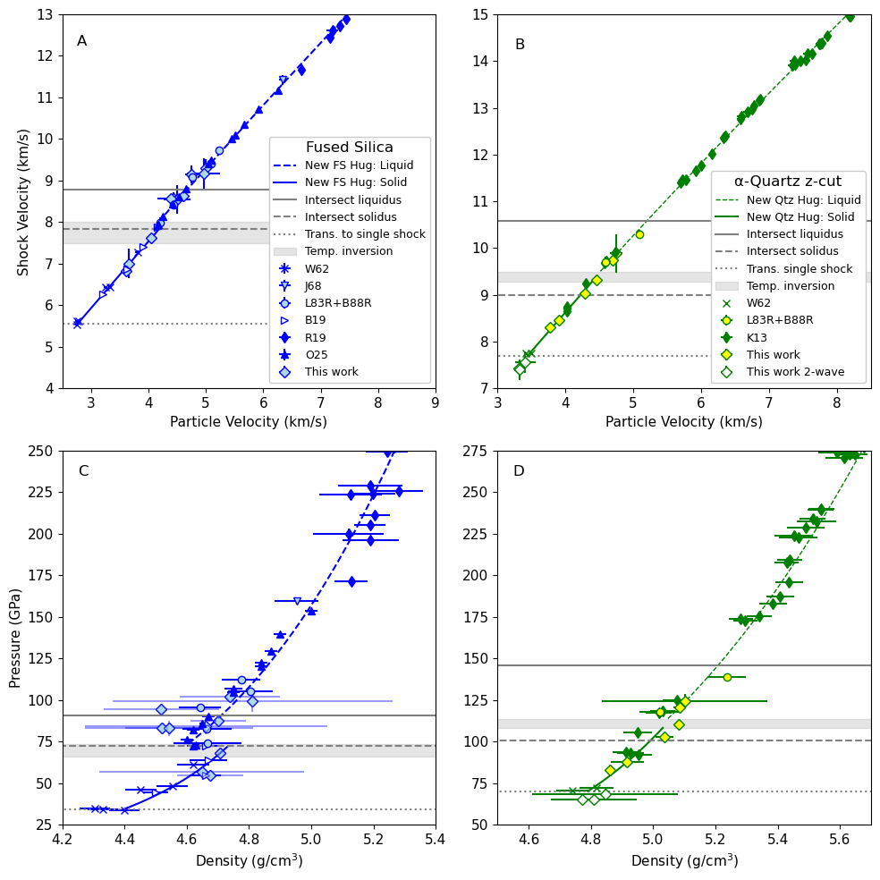
print(shockdat_list[W62qtz['id']].orientation)
[' x' ' x' ' x' ' x' ' x' ' y' ' y' ' y' ' y' ' z' ' z']
qtz_startsingle_P = 70
## If needed, calculate MC uncertainty envelope for FS Hugoniot liquid
# mc steps= 500, nup samples = 500 are sufficient
## Fused silica PVT Hugoniot
print('Fused silia PTV Hugoniot Monte-Carlo uncertainties')
nsteps = 500
nupind = 500
print('number of up points = ',nupind, ' number of steps = ',nsteps )
dat_mc = hpmc.HPeos_MC()
dat_mc.npts = nsteps
dat_mc.up_ind = np.linspace(fs_fit_liq0.xrange[0],fs_fit_liq0.xrange[1],nupind)
dat_mc.calcMC(fs_fit_liq0 ,fs_fitTus_liq0,verbose=False)
fs_hug_liq.us_std = np.interp(fs_hug_liq.up,dat_mc.up_ind,dat_mc.us_std)
fs_hug_liq.P_std = np.interp(fs_hug_liq.up,dat_mc.up_ind,dat_mc.p_std)
fs_hug_liq.T_std = np.interp(fs_hug_liq.up,dat_mc.up_ind,dat_mc.t_std)
fs_hug_liq.rho_std = np.interp(fs_hug_liq.up,dat_mc.up_ind,dat_mc.rho_std)
dat_mc = [] # free memory
Fused silia PTV Hugoniot Monte-Carlo uncertainties
number of up points = 500 number of steps = 500
Figure 5 abc#
%run -i scripts/set_plotstyle.py # customize matplotlib
%run -i scripts/set_colors.py # custom colors
plt.rcParams['lines.markersize'] = mks
fsize6 = (4.5, 8)
fig, ax = plt.subplots(2,1,figsize=fsize6)
# colors are set in scripts/set_colors.py
#coldecayvishigh='deepskyblue'
#coldecayvislow='gold'
#coldecay48low = 'cornflowerblue'
#######################################################################################
# A solid
ind = np.where((fs_hug_stv.us < fs_startsol_us)& (fs_hug_stv.us > fs_trans_stv_us))[0]
ax[0].plot(fs_hug_stv.us[ind],fs_hug_stv.T[ind],'b-',label='New FS Hugoniot')
ax[0].plot([5,8],[fs_startsol_T,fs_startsol_T],'--',color='grey',label='Intersect solidus')
fs_trans_stv_T = np.interp(fs_trans_stv_P,fs_hug_stv.P,fs_hug_stv.T)
ax[0].plot([5,8],[fs_trans_stv_T,fs_trans_stv_T],':',color='grey',label='Trans. single shock')
ax[0].errorbar(shockdat_list[S80fs['id']].us,shockdat_list[S80fs['id']].T,fmt='bv',xerr=shockdat_list[S80fs['id']].us*.01,yerr=shockdat_list[S80fs['id']].T_std,label=S80fs['lab']+' steady')
# Decaying shot 50 -- select points for stv region fit
s50tmp = s50tempbackout[ind50[43:62]]
s50tmp_err = np.zeros(len(s50tmp))+Tsteady_err
s50us_err = np.zeros(len(s50tmp))+.04
#plt.errorbar(s50us[ind50[43:62]]/1.e3,s50tempbackout[ind50[43:62]],yerr=s50tmp_err,xerr=s50us_err,
# fmt='+',color='tab:cyan',label='A23 4.8 μm decay')
ax[0].plot(s50us[ind50[43:62]]/1.e3,s50tempbackout[ind50[43:62]],'--',color=coldecay48low)
ax[0].fill_between(s50us[ind50[43:62]]/1.e3,s50tempbackout[ind50[43:62]]-s50tmp_err,s50tempbackout[ind50[43:62]]+s50tmp_err,color=coldecay48low,alpha=0.25,label='This work: 4.8 μm decaying')
ax[0].errorbar([usstart/1.e3],[Tsteady],fmt='bD',mfc='lightblue',label='This work: steady shock',xerr = [.04],yerr=[Tsteady_err])
#plt.errorbar(shockdat_list[B88RRfs['id']].us[5:7],shockdat_list[B88RRfs['id']].T[5:7],fmt='o',mec='grey',mfc='white',label=B88RRfs['lab']+' (excl)')
#plt.errorbar(shockdat_list[S81fs['id']].us[0:7],shockdat_list[S81fs['id']].T[0:7],fmt='x',color='grey',label=S81fs['lab']+' (excl)')
handles, labels = ax[0].get_legend_handles_labels()
order = range(len(handles))
for i in range(len(order)):
print(i,labels[i])
#specify order of items in legend
#order=[2,4,0,3,1]
order=[0,1,2,4,5,3]
ax[0].legend([handles[idx] for idx in order],[labels[idx] for idx in order],title='A. FS solid region',fontsize=lfss, title_fontsize=lfss)
#plt.xlim(20,100)
ax[0].set_xlim(5.5,8)
ax[0].set_ylim(3000,6500)
#ax[0].legend(title='A. FS solid region',fontsize=lfss, title_fontsize=lfss)
ax[0].set_xlabel('Shock velocity (km/s)')
ax[0].set_ylabel('Temperature (K)')
#######################################################################################
print(fs_wiggle_us2)
ind = np.where(fs_hug_liq.us > fs_wiggle_us2)[0]
ax[1].plot(fs_hug_liq.us[ind],fs_hug_liq.T[ind],'b--',label='New FS Hugoniot')
#ax[1].fill_between(fs_hug_liq.us[ind],fs_hug_liq.T[ind]-fs_hug_liq.T_std[ind],fs_hug_liq.T[ind]+fs_hug_liq.T_std[ind],color='gold',alpha=0.25)
fs_startliq_T = np.interp(fs_startliq_P,fs_hug_liq.P,fs_hug_liq.T)
ax[1].plot([7,12],[fs_startliq_T,fs_startliq_T],'-',color='grey',label='Intersect liquidus')
indb = np.arange(5)
ax[1].errorbar(shockdat_list[B88RRfs['id']].us[indb],shockdat_list[B88RRfs['id']].T[indb],fmt='bo',mfc='lightblue',label='L83R+'+B88RRfs['lab']+' steady',\
xerr=shockdat_list[B88RRfs['id']].us_std[indb],yerr=shockdat_list[B88RRfs['id']].T_std[indb])
ind =np.where(shockdat_list[H06fs['id']].T>0)
#ax[1].plot(shockdat_list[H06fs['id']].us[ind],shockdat_list[H06fs['id']].T[ind],'b+',label='H06 vis decaying')
#ax[1].fill_between(shockdat_list[H06fs['id']].us[ind],shockdat_list[H06fs['id']].T[ind]-shockdat_list[H06fs['id']].T_std[ind],shockdat_list[H06fs['id']].T[ind]+shockdat_list[H06fs['id']].T_std[ind],color='lightblue',alpha=0.5)
ax[1].errorbar(shockdat_list[H06fs['id']].us[ind],shockdat_list[H06fs['id']].T[ind],fmt='b+',label='H06 vis decaying',\
yerr=shockdat_list[H06fs['id']].T_std[ind])
ax[1].errorbar(s60Ussteady/1.e3,s60Tsteady,xerr=s60Ussteady_err/1.e3,yerr=s60Tsteady_err,fmt='bD',mfc='lightblue',label='This work: steady')
ax[1].plot(s60us[ind60[47:59]]/1.e3,s60temp[ind60[47:59]],'--',color=coldecayvishigh)
ax[1].fill_between(s60us[ind60[47:59]]/1.e3,s60temp[ind60[47:59]]-s60temperr[ind60[47:59]],s60temp[ind60[47:59]]+s60temperr[ind60[47:59]],color=coldecayvishigh,alpha=0.25,label='This work: vis decaying')
qtz_wiggle_T2 = np.interp(qtz_wiggle_us2,qtz_hug_liq.us,qtz_hug_liq.T)
qtz_wiggle_T1 = np.interp(qtz_wiggle_us1,qtz_hug_solid.us,qtz_hug_solid.T)
ax[1].plot([7.,12],[fs_wiggle_T2,fs_wiggle_T2],':',color='grey',label='Temp. inversion')
#ax[1].plot([fs_wiggle_us2,fs_wiggle_us2],[0,10000],':',color='grey',label='Temp. inversion')
ax[1].set_xlim(7.5,10.5)
ax[1].set_ylim(4000,9000)
ax[1].set_xlabel('Shock Velocity (km/s)')
ax[1].set_ylabel('Temperature (K)')
handles, labels = ax[1].get_legend_handles_labels()
order = range(len(handles))
for i in range(len(order)):
print(i,labels[i])
#specify order of items in legend
order=[0,1,3,4,5,6,2]
ax[1].legend([handles[idx] for idx in order],[labels[idx] for idx in order],fontsize=lfss,title='B. FS liquid region', title_fontsize=lfss)
fig.tight_layout()
plt.savefig(figurefigpath+'Fig5A-FS-tfit-NEW2pt.pdf')
plt.show()
0 New FS Hugoniot
1 Intersect solidus
2 Trans. single shock
3 This work: 4.8 μm decaying
4 S80 FS steady
5 This work: steady shock
8.0
0 New FS Hugoniot
1 Intersect liquidus
2 This work: vis decaying
3 Temp. inversion
4 L83R+B88R FS steady
5 H06 vis decaying
6 This work: steady
<Figure size 800x600 with 0 Axes>
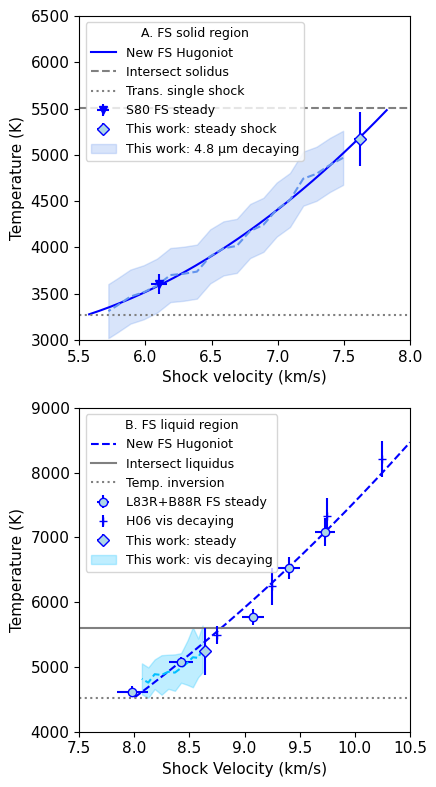
%run -i scripts/set_plotstyle.py # customize matplotlib
%run -i scripts/set_colors.py # custom colors
plt.rcParams['lines.markersize'] = mks
#fsize6 = (8,6)
#fig=plt.plot(figsize=fsize6)
plt.figure(figsize=(10, 6))
plt.rcParams.update({'font.size': 16})
# colors are set in scripts/set_colors.py
#coldecayvishigh='deepskyblue'
#coldecayvislow='gold'
#coldecay48low = 'cornflowerblue'
#######################################################################################
# A solid
plt.fill_betweenx([3000,10000],[fs_wiggle_us1,fs_wiggle_us1],[fs_wiggle_us2,fs_wiggle_us2],color='grey',alpha=0.2,label='Temp. inversion')
ind = np.where((fs_hug_stv.us < fs_startsol_us)& (fs_hug_stv.us > fs_trans_stv_us))[0]
plt.plot(fs_hug_stv.us[ind],fs_hug_stv.T[ind],'b-',label='New Hugoniot - Solid Region')
plt.plot([fs_startsol_us,fs_startsol_us],[3000,10000],'--',color='grey',label='Intersect solidus')
fs_trans_stv_T = np.interp(fs_trans_stv_P,fs_hug_stv.P,fs_hug_stv.T)
#plt.plot([5,8],[fs_trans_stv_T,fs_trans_stv_T],':',color='grey',label='Trans. single shock')
plt.plot([fs_trans_stv_us,fs_trans_stv_us],[3000,10000],':',color='grey',label='Trans. single shock')
plt.errorbar(shockdat_list[S80fs['id']].us,shockdat_list[S80fs['id']].T,fmt='bv',xerr=shockdat_list[S80fs['id']].us*.01,yerr=shockdat_list[S80fs['id']].T_std,label=S80fs['lab']+' steady')
# Decaying shot 50 -- select points for stv region fit
s50tmp = s50tempbackout[ind50[43:62]]
s50tmp_err = np.zeros(len(s50tmp))+Tsteady_err
s50us_err = np.zeros(len(s50tmp))+.04
#plt.errorbar(s50us[ind50[43:62]]/1.e3,s50tempbackout[ind50[43:62]],yerr=s50tmp_err,xerr=s50us_err,
# fmt='+',color='tab:cyan',label='A23 4.8 μm decay')
plt.plot(s50us[ind50[43:62]]/1.e3,s50tempbackout[ind50[43:62]],'--',color=coldecay48low)
plt.fill_between(s50us[ind50[43:62]]/1.e3,s50tempbackout[ind50[43:62]]-s50tmp_err,s50tempbackout[ind50[43:62]]+s50tmp_err,color=coldecay48low,alpha=0.25,label='This work: 4.8 μm decaying')
plt.errorbar([usstart/1.e3],[Tsteady],fmt='bD',mfc='lightblue',xerr = [.04],yerr=[Tsteady_err]) #label='This work: steady shock',
#plt.errorbar(shockdat_list[B88RRfs['id']].us[5:7],shockdat_list[B88RRfs['id']].T[5:7],fmt='o',mec='grey',mfc='white',label=B88RRfs['lab']+' (excl)')
#plt.errorbar(shockdat_list[S81fs['id']].us[0:7],shockdat_list[S81fs['id']].T[0:7],fmt='x',color='grey',label=S81fs['lab']+' (excl)')
#######################################################################################
print(fs_wiggle_us2)
ind = np.where(fs_hug_liq.us > fs_wiggle_us2)[0]
plt.plot(fs_hug_liq.us[ind],fs_hug_liq.T[ind],'b--',label='New Hugoniot - Liquid Region')
#plt.fill_between(fs_hug_liq.us[ind],fs_hug_liq.T[ind]-fs_hug_liq.T_std[ind],fs_hug_liq.T[ind]+fs_hug_liq.T_std[ind],color='gold',alpha=0.25)
fs_startliq_T = np.interp(fs_startliq_P,fs_hug_liq.P,fs_hug_liq.T)
plt.plot([fs_startliq_us,fs_startliq_us],[3000,10000],'-',color='grey',label='Intersect liquidus')
indb = np.arange(5)
plt.errorbar(shockdat_list[B88RRfs['id']].us[indb],shockdat_list[B88RRfs['id']].T[indb],fmt='bo',mfc='lightblue',label='L83R+'+B88RRfs['lab']+' steady',\
xerr=shockdat_list[B88RRfs['id']].us_std[indb],yerr=shockdat_list[B88RRfs['id']].T_std[indb])
ind =np.where(shockdat_list[H06fs['id']].T>0)
#plt.plot(shockdat_list[H06fs['id']].us[ind],shockdat_list[H06fs['id']].T[ind],'b+',label='H06 vis decay')
#plt.fill_between(shockdat_list[H06fs['id']].us[ind],shockdat_list[H06fs['id']].T[ind]-shockdat_list[H06fs['id']].T_std[ind],shockdat_list[H06fs['id']].T[ind]+shockdat_list[H06fs['id']].T_std[ind],color='lightblue',alpha=0.5)
plt.errorbar(shockdat_list[H06fs['id']].us[ind],shockdat_list[H06fs['id']].T[ind],fmt='b+',label='H06 vis decaying',\
yerr=shockdat_list[H06fs['id']].T_std[ind])
plt.errorbar(s60Ussteady/1.e3,s60Tsteady,xerr=s60Ussteady_err/1.e3,yerr=s60Tsteady_err,fmt='bD',mfc='lightblue',label='This work: steady')
plt.plot(s60us[ind60[47:59]]/1.e3,s60temp[ind60[47:59]],'--',color=coldecayvishigh)
plt.fill_between(s60us[ind60[47:59]]/1.e3,s60temp[ind60[47:59]]-s60temperr[ind60[47:59]],s60temp[ind60[47:59]]+s60temperr[ind60[47:59]],color=coldecayvishigh,alpha=0.25,label='This work: vis decaying')
qtz_wiggle_T2 = np.interp(qtz_wiggle_us2,qtz_hug_liq.us,qtz_hug_liq.T)
qtz_wiggle_T1 = np.interp(qtz_wiggle_us1,qtz_hug_solid.us,qtz_hug_solid.T)
#plt.plot([fs_wiggle_us2,fs_wiggle_us2],[3000,10000],'-.',color='grey',label='Temp. inversion')
#plt.plot([fs_wiggle_us2,fs_wiggle_us2],[0,10000],':',color='grey',label='Temp. inversion')
#plt.fill_betweenx([6,15],[fs_wiggle_P1,fs_wiggle_P1],[fs_wiggle_P2,fs_wiggle_P2],color='grey',alpha=0.2)#,label='Temp. inversion')
plt.xlim(5.5,10.5)
plt.ylim(3000,9000)
#plt.set_xlabel('Shock Velocity (km/s)')
#plt.set_ylabel('Temperature (K)')
handles, labels = plt.gca().get_legend_handles_labels()
order = range(len(handles))
for i in range(len(order)):
print(i,labels[i])
#specify order of items in legend
order=[1,5,11,4,7,8,9,10,3,2,6,0]
# 0,4,11,3,6,8,9,10,2,1,7,5]
plt.legend([handles[idx] for idx in order],[labels[idx] for idx in order],fontsize=lfss+1,title='A. Fused silica', title_fontsize=lfss+3)
#plt.legend([handles[idx] for idx in order],[labels[idx] for idx in order],title='A. Fused Silica', title_fontsize=lfss+2)
plt.xlabel('Shock velocity (km/s)')
plt.ylabel('Temperature (K)')
plt.tight_layout()
plt.savefig(figurefigpath+'Fig5Anew-FS-tfit-1panel.pdf')
plt.show()
8.0
0 Temp. inversion
1 New Hugoniot - Solid Region
2 Intersect solidus
3 Trans. single shock
4 This work: 4.8 μm decaying
5 New Hugoniot - Liquid Region
6 Intersect liquidus
7 This work: vis decaying
8 S80 FS steady
9 L83R+B88R FS steady
10 H06 vis decaying
11 This work: steady
<Figure size 800x600 with 0 Axes>
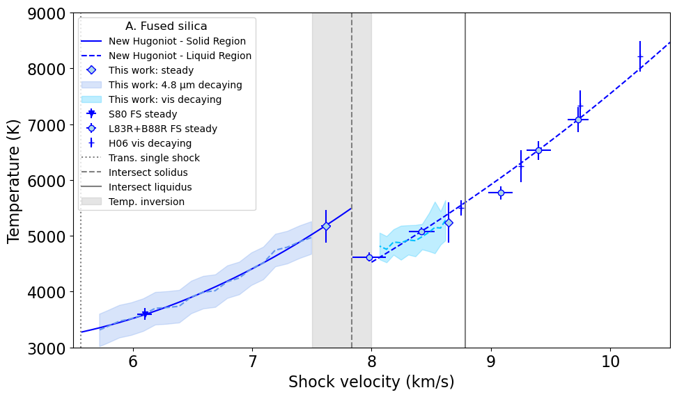
qtz_singleshock_T = np.interp(qtz_singleshock_P,qtz_hug_solid.P,qtz_hug_solid.T)
%run -i scripts/set_plotstyle.py # customize matplotlib
%run -i scripts/set_colors.py # custom colors
plt.rcParams['lines.markersize'] = mks
fsize6 = (4.5, 8)
fig, ax = plt.subplots(2,1,figsize=fsize6)
ind = np.where( (qtz_hug_solid.us>qtz_singleshock_us) & (qtz_hug_solid.us < qtz_wiggle_us1))[0]
ax[0].plot(qtz_hug_solid.us[ind],qtz_hug_solid.T[ind],'g-',label='New Qtz Hugoniot')
#ax[0].plot([6.5,12],[qtz_low_cacl2_T,qtz_low_cacl2_T],':',color='grey',label='Transition to CaCl₂')
ax[0].plot([7,12],[qtz_wiggle_T1,qtz_wiggle_T1],':',color='grey',label='Temp. inversion')
ax[0].plot([7,12],[qtz_startsol_T,qtz_startsol_T],'--',color='grey',label='Intersect solidus')
ax[0].plot([7,12],[qtz_singleshock_T,qtz_singleshock_T],'-.',color='grey',label='Trans. single shock')
ind = np.where((shockdat_list[B88RRqtz['id']].orientation == 'z') & (shockdat_list[B88RRqtz['id']].us < 9.5))[0]
ax[0].errorbar(shockdat_list[B88RRqtz['id']].us[ind],shockdat_list[B88RRqtz['id']].T[ind],fmt='go',mfc='yellow',\
label='L83R+'+B88RRqtz['lab'],yerr=shockdat_list[B88RRqtz['id']].T_std[ind])
#ind = np.where(shockdat_list[B88RRqtz['id']].orientation == 'pz')[0]
#plt.errorbar(shockdat_list[B88RRqtz['id']].us[ind],shockdat_list[B88RRqtz['id']].T[ind],fmt='go',mfc='orange',\
# label=B88RRqtz['lab']+'(pz)')
ind = np.where( (shockdat_list[A23qtz['id']].us < 9.5) & (shockdat_list[A23qtz['id']].us>7.7))[0]
ax[0].errorbar(shockdat_list[A23qtz['id']].us[ind],shockdat_list[A23qtz['id']].T[ind],fmt='gD',mfc='yellow',label='This work',\
xerr=shockdat_list[A23qtz['id']].us_std[ind],yerr=shockdat_list[A23qtz['id']].T_std[ind])
ind = np.where( (shockdat_list[A23qtz['id']].us < 7.7))[0]
ax[0].errorbar(shockdat_list[A23qtz['id']].us[ind],shockdat_list[A23qtz['id']].T[ind],fmt='gD',mfc='white',label='This work (2-wave)',\
xerr=shockdat_list[A23qtz['id']].us_std[ind],yerr=shockdat_list[A23qtz['id']].T_std[ind])
ax[0].set_xlim(7,9.5)
ax[0].set_ylim(3000,6500)
ax[0].set_xlabel('Shock Velocity (km/s)')
ax[0].set_ylabel('Temperature (K)')
ax[0].legend(title='C. Qtz (z-cut) solid region',fontsize=lfss, title_fontsize=lfss)
#######################################################################################
# C liquid region
ax[1].set_prop_cycle(custom_cycler)
ind = np.where(qtz_hug_liq.us > qtz_wiggle_us2)[0]
ax[1].plot(qtz_hug_liq.us[ind],qtz_hug_liq.T[ind],'g--',label='New Qtz Hug liquid')
ax[1].plot([9,19],[qtz_startliq_T,qtz_startliq_T],'-',color='grey',label='Intersect liquidus')
ax[1].plot([9,19],[qtz_wiggle_T2,qtz_wiggle_T2],':',color='grey',label='Temp. inversion')
mss = 1
qtz_us_fitmax = 35
us_fitstart=qtz_wiggle_us2
ind11 = np.where((M70811.us > us_fitstart) & (M70811.us < qtz_us_fitmax) )[0]
ind13 = np.where((M70813.us > us_fitstart) & (M70813.us < qtz_us_fitmax) )[0]
ind17 = np.where((M70817.us > us_fitstart) & (M70817.us < qtz_us_fitmax) )[0]
ind20 = np.where((M70820.us > us_fitstart) & (M70820.us < qtz_us_fitmax) )[0]
#ax[2].plot(M70811.us[ind11],M70811.T[ind11],'.',markersize=mss)
#ax[2].plot(M70813.us[ind13],M70813.T[ind13],'.',markersize=mss)
#ax[2].plot(M70817.us[ind17],M70817.T[ind17],'.',markersize=mss)
#ax[2].plot(M70820.us[ind20],M70820.T[ind20],'.',markersize=mss)
ax[1].fill_between(M70811.us[ind11],M70811.T[ind11]-M70811.T_std[ind11],M70811.T[ind11]+M70811.T_std[ind11],color='yellowgreen',alpha=0.2)
ax[1].fill_between(M70813.us[ind13],M70813.T[ind13]-M70813.T_std[ind13],M70813.T[ind13]+M70813.T_std[ind13],color='yellowgreen',alpha=0.2)
ax[1].fill_between(M70817.us[ind17],M70817.T[ind17]-M70817.T_std[ind17],M70817.T[ind17]+M70817.T_std[ind17],color='yellowgreen',alpha=0.2)
ax[1].fill_between(M70820.us[ind20],M70820.T[ind20]-M70820.T_std[ind20],M70820.T[ind20]+M70820.T_std[ind20],color='yellowgreen',alpha=0.2,label='Omega (z, decay)')
if 0:
# not included in fit
ind = np.where((shockdat_list[B88RRqtz['id']].orientation == 'z') & (shockdat_list[B88RRqtz['id']].us > 9.5))[0]
ax[2].errorbar(shockdat_list[B88RRqtz['id']].us[ind],shockdat_list[B88RRqtz['id']].T[ind],fmt='go',mfc='yellow',\
label='L83R+'+B88RRqtz['lab']+'(z)')
#ind = np.where(shockdat_list[B88RRqtz['id']].orientation == 'pz')[0]
#plt.errorbar(shockdat_list[B88RRqtz['id']].us[ind],shockdat_list[B88RRqtz['id']].T[ind],fmt='go',mfc='orange',\
# label=B88RRqtz['lab']+'(pz)')
ind = np.where( (shockdat_list[A23qtz['id']].us > 9.5))[0]
ax[2].errorbar(shockdat_list[A23qtz['id']].us[ind],shockdat_list[A23qtz['id']].T[ind],fmt='gD',mfc='white',label=A23qtz['lab'],\
xerr=shockdat_list[A23qtz['id']].us_std[ind],yerr=shockdat_list[A23qtz['id']].T_std[ind])
handles, labels = ax[1].get_legend_handles_labels()
order = range(len(handles))
for i in range(len(order)):
print(i,labels[i])
#specify order of items in legend
#order=[1,2,0]
ax[1].legend([handles[idx] for idx in order],[labels[idx] for idx in order],fontsize=lfss,title='A. α-Quartz z-cut', title_fontsize=lfss)
ax[1].set_xlim(9,19)
ax[1].set_ylim(3500,30000)
ax[1].set_xlabel('Shock Velocity (km/s)')
ax[1].set_ylabel('Temperature (K)')
fig.tight_layout()
plt.savefig(figurefigpath+'Fig5B-qtz-tfit-NEW2pt.pdf')
plt.show()
0 New Qtz Hug liquid
1 Intersect liquidus
2 Temp. inversion
3 Omega (z, decay)
<Figure size 800x600 with 0 Axes>
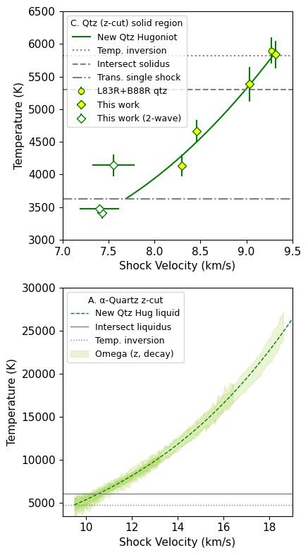
qtz_singleshock_T = np.interp(qtz_singleshock_P,qtz_hug_solid.P,qtz_hug_solid.T)
%run -i scripts/set_plotstyle.py # customize matplotlib
%run -i scripts/set_colors.py # custom colors
plt.rcParams['lines.markersize'] = mks
#fsize6 = (10,6)
#fig = plt.plot(figsize=fsize6)
plt.figure(figsize=(10, 6))
plt.rcParams.update({'font.size': 16})
plt.fill_betweenx([3000,10000],[qtz_wiggle_us1,qtz_wiggle_us1],[qtz_wiggle_us2,qtz_wiggle_us2],color='grey',alpha=0.2,label='Temp. inversion')
ind = np.where( (qtz_hug_solid.us>qtz_singleshock_us) & (qtz_hug_solid.us < qtz_wiggle_us1))[0]
plt.plot(qtz_hug_solid.us[ind],qtz_hug_solid.T[ind],'g-',label='New Hugoniot - Solid Region')
#plt.plot([6.5,12],[qtz_low_cacl2_T,qtz_low_cacl2_T],':',color='grey',label='Transition to CaCl₂')
plt.plot([qtz_startsol_us,qtz_startsol_us],[3000,10000],'--',color='grey',label='Intersect solidus')
plt.plot([qtz_singleshock_us,qtz_singleshock_us],[3000,10000],':',color='grey',label='Trans. single shock')
ind = np.where((shockdat_list[B88RRqtz['id']].orientation == 'z') & (shockdat_list[B88RRqtz['id']].us < 9.5))[0]
plt.errorbar(shockdat_list[B88RRqtz['id']].us[ind],shockdat_list[B88RRqtz['id']].T[ind],fmt='go',mfc='yellow',\
yerr=shockdat_list[B88RRqtz['id']].T_std[ind],label='L83R+B88R')#+B88RRqtz['lab'])
#ind = np.where(shockdat_list[B88RRqtz['id']].orientation == 'pz')[0]
#plt.errorbar(shockdat_list[B88RRqtz['id']].us[ind],shockdat_list[B88RRqtz['id']].T[ind],fmt='go',mfc='orange',\
# label=B88RRqtz['lab']+'(pz)')
ind = np.where( (shockdat_list[A23qtz['id']].us < 9.5) & (shockdat_list[A23qtz['id']].us>7.7))[0]
plt.errorbar(shockdat_list[A23qtz['id']].us[ind],shockdat_list[A23qtz['id']].T[ind],fmt='gD',mfc='yellow',label='This work',\
xerr=shockdat_list[A23qtz['id']].us_std[ind],yerr=shockdat_list[A23qtz['id']].T_std[ind])
ind = np.where( (shockdat_list[A23qtz['id']].us < 7.7))[0]
plt.errorbar(shockdat_list[A23qtz['id']].us[ind],shockdat_list[A23qtz['id']].T[ind],fmt='gD',mfc='white',label='This work 2-wave',\
xerr=shockdat_list[A23qtz['id']].us_std[ind],yerr=shockdat_list[A23qtz['id']].T_std[ind])
#plt.set_xlim(7,9.5)
#plt.set_ylim(3000,6500)
#######################################################################################
# C liquid region
#plt.set_prop_cycle(custom_cycler)
ind = np.where(qtz_hug_liq.us > qtz_wiggle_us2)[0]
plt.plot(qtz_hug_liq.us[ind],qtz_hug_liq.T[ind],'g--',label='New Hugoniot - Liquid Region')
plt.plot([qtz_startliq_us,qtz_startliq_us],[3000,10000],'-',color='grey',label='Intersect liquidus')
mss = 1
qtz_us_fitmax = 35
us_fitstart=qtz_wiggle_us2
ind11 = np.where((M70811.us > us_fitstart) & (M70811.us < qtz_us_fitmax) )[0]
ind13 = np.where((M70813.us > us_fitstart) & (M70813.us < qtz_us_fitmax) )[0]
ind17 = np.where((M70817.us > us_fitstart) & (M70817.us < qtz_us_fitmax) )[0]
ind20 = np.where((M70820.us > us_fitstart) & (M70820.us < qtz_us_fitmax) )[0]
#ax[2].plot(M70811.us[ind11],M70811.T[ind11],'.',markersize=mss)
#ax[2].plot(M70813.us[ind13],M70813.T[ind13],'.',markersize=mss)
#ax[2].plot(M70817.us[ind17],M70817.T[ind17],'.',markersize=mss)
#ax[2].plot(M70820.us[ind20],M70820.T[ind20],'.',markersize=mss)
plt.fill_between(M70811.us[ind11],M70811.T[ind11]-M70811.T_std[ind11],M70811.T[ind11]+M70811.T_std[ind11],color='yellowgreen',alpha=0.2)
plt.fill_between(M70813.us[ind13],M70813.T[ind13]-M70813.T_std[ind13],M70813.T[ind13]+M70813.T_std[ind13],color='yellowgreen',alpha=0.2)
plt.fill_between(M70817.us[ind17],M70817.T[ind17]-M70817.T_std[ind17],M70817.T[ind17]+M70817.T_std[ind17],color='yellowgreen',alpha=0.2)
plt.fill_between(M70820.us[ind20],M70820.T[ind20]-M70820.T_std[ind20],M70820.T[ind20]+M70820.T_std[ind20],color='yellowgreen',alpha=0.2,label='Omega (decaying)')
if 0:
# not included in fit
ind = np.where((shockdat_list[B88RRqtz['id']].orientation == 'z') & (shockdat_list[B88RRqtz['id']].us > 9.5))[0]
ax[2].errorbar(shockdat_list[B88RRqtz['id']].us[ind],shockdat_list[B88RRqtz['id']].T[ind],fmt='go',mfc='yellow',\
label='L83R+B88R')#+B88RRqtz['lab']+'(z)')
#ind = np.where(shockdat_list[B88RRqtz['id']].orientation == 'pz')[0]
#plt.errorbar(shockdat_list[B88RRqtz['id']].us[ind],shockdat_list[B88RRqtz['id']].T[ind],fmt='go',mfc='orange',\
# label=B88RRqtz['lab']+'(pz)')
ind = np.where( (shockdat_list[A23qtz['id']].us > 9.5))[0]
ax[2].errorbar(shockdat_list[A23qtz['id']].us[ind],shockdat_list[A23qtz['id']].T[ind],fmt='gD',mfc='white',label=A23qtz['lab'],\
xerr=shockdat_list[A23qtz['id']].us_std[ind],yerr=shockdat_list[A23qtz['id']].T_std[ind])
handles, labels = plt.gca().get_legend_handles_labels()
order = range(len(handles))
for i in range(len(order)):
print(i,labels[i])
#specify order of items in legend
order=[1,4,8,9,6,7,3,2,5,0]
plt.legend([handles[idx] for idx in order],[labels[idx] for idx in order],fontsize=lfss+1,title='B. α-Quartz z-cut', title_fontsize=lfss+3)
plt.xlim(7,13)
plt.ylim(3000,10000)
plt.xlabel('Shock Velocity (km/s)')
plt.ylabel('Temperature (K)')
#plt.set_xlabel('Shock Velocity (km/s)')
#plt.set_ylabel('Temperature (K)')
plt.tight_layout()
plt.savefig(figurefigpath+'Fig5Bnew-qtz-tfit-1panel.pdf')
plt.show()
0 Temp. inversion
1 New Hugoniot - Solid Region
2 Intersect solidus
3 Trans. single shock
4 New Hugoniot - Liquid Region
5 Intersect liquidus
6 Omega (decaying)
7 L83R+B88R
8 This work
9 This work 2-wave
<Figure size 800x600 with 0 Axes>
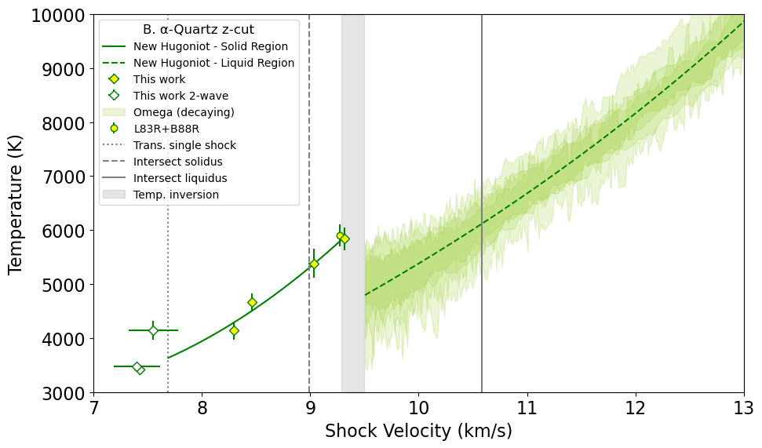
%run -i scripts/set_plotstyle.py # customize matplotlib
%run -i scripts/set_colors.py # custom colors
plt.rcParams['lines.markersize'] = mks
fig, ax = plt.subplots(3,1,figsize=fsize3)
#######################################################################################
# A solid
ax[0].plot(fs_hug_stv.us,fs_hug_stv.T,'b-',label='New FS Hug solid')
ax[0].plot([5,8],[fs_startsol_T,fs_startsol_T],'--',color='grey',label='Intersect solidus')
ax[0].errorbar(shockdat_list[S80fs['id']].us,shockdat_list[S80fs['id']].T,fmt='bv',xerr=shockdat_list[S80fs['id']].us*.01,yerr=shockdat_list[S80fs['id']].T_std,label=S80fs['lab']+' steady')
# Decaying shot 50 -- select points for stv region fit
s50tmp = s50tempbackout[ind50[43:62]]
s50tmp_err = np.zeros(len(s50tmp))+Tsteady_err
s50us_err = np.zeros(len(s50tmp))+.04
#plt.errorbar(s50us[ind50[43:62]]/1.e3,s50tempbackout[ind50[43:62]],yerr=s50tmp_err,xerr=s50us_err,
# fmt='+',color='tab:cyan',label='A23 4.8 μm decay')
ax[0].plot(s50us[ind50[43:62]]/1.e3,s50tempbackout[ind50[43:62]],'+',color='tab:cyan')
ax[0].fill_between(s50us[ind50[43:62]]/1.e3,s50tempbackout[ind50[43:62]]-s50tmp_err,s50tempbackout[ind50[43:62]]+s50tmp_err,color='tab:cyan',alpha=0.5,label='A23 4.8 μm decay')
ax[0].errorbar([usstart/1.e3],[Tsteady],fmt='bD',mfc='lightblue',label='A23 steady',xerr = [.04],yerr=[Tsteady_err])
#plt.errorbar(shockdat_list[B88RRfs['id']].us[5:7],shockdat_list[B88RRfs['id']].T[5:7],fmt='o',mec='grey',mfc='white',label=B88RRfs['lab']+' (excl)')
#plt.errorbar(shockdat_list[S81fs['id']].us[0:7],shockdat_list[S81fs['id']].T[0:7],fmt='x',color='grey',label=S81fs['lab']+' (excl)')
handles, labels = ax[0].get_legend_handles_labels()
order = range(len(handles))
for i in range(len(order)):
print(i,labels[i])
#specify order of items in legend
#order=[2,4,0,3,1]
order=[0,1,3,4,2]
ax[0].legend([handles[idx] for idx in order],[labels[idx] for idx in order],title='A. FS solid region',fontsize=lfss, title_fontsize=lfss)
#plt.xlim(20,100)
ax[0].set_xlim(5,8)
ax[0].set_ylim(3000,6000)
#ax[0].legend(title='A. FS solid region',fontsize=lfss, title_fontsize=lfss)
ax[0].set_xlabel('Shock velocity (km/s)')
ax[0].set_ylabel('Temperature (K)')
#######################################################################################
ax[1].plot(fs_hug_liq.us,fs_hug_liq.T,'b--',label='New FS Hug liquid')
fs_startliq_T = np.interp(fs_startliq_P,fs_hug_liq.P,fs_hug_liq.T)
ax[1].plot([7,12],[fs_startliq_T,fs_startliq_T],'-',color='grey',label='Trans. to liquid')
indb = np.arange(5)
ax[1].errorbar(shockdat_list[B88RRfs['id']].us[indb],shockdat_list[B88RRfs['id']].T[indb],fmt='bo',mfc='lightblue',label=B88RRfs['lab']+' steady',\
xerr=shockdat_list[B88RRfs['id']].us_std[indb],yerr=shockdat_list[B88RRfs['id']].T_std[indb])
ind =np.where(shockdat_list[H06fs['id']].T>0)
ax[1].plot(shockdat_list[H06fs['id']].us[ind],shockdat_list[H06fs['id']].T[ind],'b+',label='H06 vis decay')
ax[1].fill_between(shockdat_list[H06fs['id']].us[ind],shockdat_list[H06fs['id']].T[ind]-shockdat_list[H06fs['id']].T_std[ind],shockdat_list[H06fs['id']].T[ind]+shockdat_list[H06fs['id']].T_std[ind],color='lightblue',alpha=0.5)
ax[1].errorbar(s60Ussteady/1.e3,s60Tsteady,xerr=s60Ussteady_err/1.e3,yerr=s60Tsteady_err,fmt='bD',mfc='lightblue',label='A23 steady')
ax[1].plot(s60us[ind60[47:59]]/1.e3,s60temp[ind60[47:59]],'+',color='tab:cyan')
ax[1].fill_between(s60us[ind60[47:59]]/1.e3,s60temp[ind60[47:59]]-s60temperr[ind60[47:59]],s60temp[ind60[47:59]]+s60temperr[ind60[47:59]],color='tab:cyan',alpha=0.5,label='A23 vis decay')
ax[1].set_xlim(7,11)
ax[1].set_ylim(4000,10000)
ax[1].set_xlabel('Shock Velocity (km/s)')
ax[1].set_ylabel('Temperature (K)')
handles, labels = ax[1].get_legend_handles_labels()
order = range(len(handles))
for i in range(len(order)):
print(i,labels[i])
#specify order of items in legend
order=[0,1,4,2,5,3]
ax[1].legend([handles[idx] for idx in order],[labels[idx] for idx in order],fontsize=lfss,title='B. FS liquid region', title_fontsize=lfss)
#################################################################
# C liquid wide P
ax[2].plot(fs_hug_liq.us,fs_hug_liq.T,'b--',label='New FS Hug liquid')
ax[2].plot([7,22],[fs_startliq_T,fs_startliq_T],'-',color='grey',label='Trans. to liquid')
ind =np.where(shockdat_list[H06fs['id']].T>0)
ax[2].plot(shockdat_list[H06fs['id']].us[ind],shockdat_list[H06fs['id']].T[ind],'b+',label='H06 vis decay')
ax[2].fill_between(shockdat_list[H06fs['id']].us[ind],shockdat_list[H06fs['id']].T[ind]-shockdat_list[H06fs['id']].T_std[ind],shockdat_list[H06fs['id']].T[ind]+shockdat_list[H06fs['id']].T_std[ind],color='lightblue',alpha=0.5)
ax[2].set_xlim(7,22)
ax[2].set_ylim(4000,60000)
ax[2].legend(fontsize=lfss,title='C. FS liquid region', title_fontsize=lfss)
ax[2].set_xlabel('Shock Velocity (km/s)')
ax[2].set_ylabel('Temperature (K)')
fig.tight_layout()
plt.savefig(figurefigpath+'Fig5A-FS-tfit-OLD.pdf')
plt.show()
0 New FS Hug solid
1 Intersect solidus
2 A23 4.8 μm decay
3 S80 FS steady
4 A23 steady
0 New FS Hug liquid
1 Trans. to liquid
2 H06 vis decay
3 A23 vis decay
4 B88R FS steady
5 A23 steady
<Figure size 800x600 with 0 Axes>
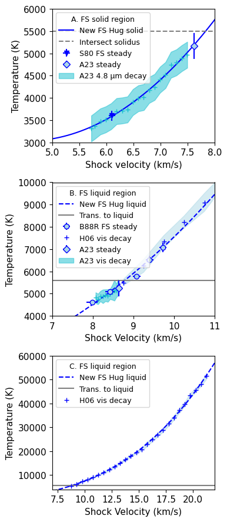
Figure 5 def#
# load stv EOS model
# Using Hugoniot PV, these are the stv EOS temperatures on the Hugoniot
with open(figurefigpath+'stvmodel.pkl', 'rb') as f:
stvusmodel,stvtmodel,stvpmodel=pickle.load(f)
#print(stvpmodel)
#print(qtz_trans_cacl2_P) # this fit goes into the cacl2 field
%run -i scripts/set_plotstyle.py # customize matplotlib
%run -i scripts/set_colors.py # custom colors
plt.rcParams['lines.markersize'] = mks
fig, ax = plt.subplots(3,1,figsize=fsize3)
#######################################################################################
# A stv
ax[0].plot(qtz_hug_stv.us,qtz_hug_stv.T,'g-',label='New Qtz Hug stv')
ax[0].plot([6.5,9],[qtz_trans_cacl2_T,qtz_trans_cacl2_T],':',color='grey',label='Transition to CaCl₂')
ax[0].plot(stvusmodel,stvtmodel,'g^',label='Stv EOS model')
ind = np.where( (shockdat_list[A23qtz['id']].us < 8.))[0]
ax[0].errorbar(shockdat_list[A23qtz['id']].us[ind],shockdat_list[A23qtz['id']].T[ind],fmt='gD',mfc='white',label=A23qtz['lab']+' (z, not fit)',\
xerr=shockdat_list[A23qtz['id']].us_std[ind],yerr=shockdat_list[A23qtz['id']].T_std[ind])
ax[0].set_xlim(6.5,9)
ax[0].set_ylim(3000,6000)
ax[0].set_xlabel('Shock Velocity (km/s)')
ax[0].set_ylabel('Temperature (K)')
#plt.title('Stv EOS Hugoniot model temperatures')
ax[0].legend(title='D. Qtz stv region',fontsize=lfss, title_fontsize=lfss)
#######################################################################################
# B cacl2 region
ind = np.where((shockdat_list[B88RRqtz['id']].orientation == 'z') & (shockdat_list[B88RRqtz['id']].us < 9.5))[0]
ax[1].errorbar(shockdat_list[B88RRqtz['id']].us[ind],shockdat_list[B88RRqtz['id']].T[ind],fmt='go',mfc='yellow',\
label=B88RRqtz['lab']+' (z)')
#ind = np.where(shockdat_list[B88RRqtz['id']].orientation == 'pz')[0]
#plt.errorbar(shockdat_list[B88RRqtz['id']].us[ind],shockdat_list[B88RRqtz['id']].T[ind],fmt='go',mfc='orange',\
# label=B88RRqtz['lab']+'(pz)')
ind = np.where( (shockdat_list[A23qtz['id']].us < 9.5))[0]
ax[1].errorbar(shockdat_list[A23qtz['id']].us[ind],shockdat_list[A23qtz['id']].T[ind],fmt='gD',mfc='white',label=A23qtz['lab']+' (z)',\
xerr=shockdat_list[A23qtz['id']].us_std[ind],yerr=shockdat_list[A23qtz['id']].T_std[ind])
ax[1].plot(qtz_hug_cacl2.us,qtz_hug_cacl2.T,'g-',label='New Qtz Hug CaCl₂')
ax[1].plot([6.5,12],[qtz_low_cacl2_T,qtz_low_cacl2_T],':',color='grey',label='Transition to CaCl₂')
ax[1].plot([8,12],[qtz_startsol_T,qtz_startsol_T],'--',color='grey',label='Intersect solidus')
ax[1].set_xlim(8,10.5)
ax[1].set_ylim(3500,6500)
ax[1].set_xlabel('Shock Velocity (km/s)')
ax[1].set_ylabel('Temperature (K)')
ax[1].legend(title='E. Qtz CaCl₂ region',fontsize=lfss, title_fontsize=lfss)
#######################################################################################
# C liquid region
ax[2].set_prop_cycle(custom_cycler)
mss = 1
qtz_us_fitmax = 35
us_fitstart=qtz_wiggle_us2
ind11 = np.where((M70811.us > us_fitstart) & (M70811.us < qtz_us_fitmax) )[0]
ind13 = np.where((M70813.us > us_fitstart) & (M70813.us < qtz_us_fitmax) )[0]
ind17 = np.where((M70817.us > us_fitstart) & (M70817.us < qtz_us_fitmax) )[0]
ind20 = np.where((M70820.us > us_fitstart) & (M70820.us < qtz_us_fitmax) )[0]
#ax[2].plot(M70811.us[ind11],M70811.T[ind11],'.',markersize=mss)
#ax[2].plot(M70813.us[ind13],M70813.T[ind13],'.',markersize=mss)
#ax[2].plot(M70817.us[ind17],M70817.T[ind17],'.',markersize=mss)
#ax[2].plot(M70820.us[ind20],M70820.T[ind20],'.',markersize=mss)
ax[2].fill_between(M70811.us[ind11],M70811.T[ind11]-M70811.T_std[ind11],M70811.T[ind11]+M70811.T_std[ind11],color='yellowgreen',alpha=0.2)
ax[2].fill_between(M70813.us[ind13],M70813.T[ind13]-M70813.T_std[ind13],M70813.T[ind13]+M70813.T_std[ind13],color='yellowgreen',alpha=0.2)
ax[2].fill_between(M70817.us[ind17],M70817.T[ind17]-M70817.T_std[ind17],M70817.T[ind17]+M70817.T_std[ind17],color='yellowgreen',alpha=0.2)
ax[2].fill_between(M70820.us[ind20],M70820.T[ind20]-M70820.T_std[ind20],M70820.T[ind20]+M70820.T_std[ind20],color='yellowgreen',alpha=0.2,label='Omega (z, decay)')
if 0:
# not included in fit
ind = np.where((shockdat_list[B88RRqtz['id']].orientation == 'z') & (shockdat_list[B88RRqtz['id']].us > 9.5))[0]
ax[2].errorbar(shockdat_list[B88RRqtz['id']].us[ind],shockdat_list[B88RRqtz['id']].T[ind],fmt='go',mfc='yellow',\
label=B88RRqtz['lab']+'(z)')
#ind = np.where(shockdat_list[B88RRqtz['id']].orientation == 'pz')[0]
#plt.errorbar(shockdat_list[B88RRqtz['id']].us[ind],shockdat_list[B88RRqtz['id']].T[ind],fmt='go',mfc='orange',\
# label=B88RRqtz['lab']+'(pz)')
ind = np.where( (shockdat_list[A23qtz['id']].us > 9.5))[0]
ax[2].errorbar(shockdat_list[A23qtz['id']].us[ind],shockdat_list[A23qtz['id']].T[ind],fmt='gD',mfc='white',label=A23qtz['lab'],\
xerr=shockdat_list[A23qtz['id']].us_std[ind],yerr=shockdat_list[A23qtz['id']].T_std[ind])
ax[2].plot(qtz_hug_liq.us,qtz_hug_liq.T,'g--',label='New Qtz Hug liquid')
ax[2].plot([9,19],[qtz_startliq_T,qtz_startliq_T],'-',color='grey',label='Intersect liquidus')
handles, labels = ax[2].get_legend_handles_labels()
order = range(len(handles))
for i in range(len(order)):
print(i,labels[i])
#specify order of items in legend
order=[1,2,0]
ax[2].legend([handles[idx] for idx in order],[labels[idx] for idx in order],fontsize=lfss,title='F. Qtz liquid region', title_fontsize=lfss)
ax[2].set_xlim(9,19)
ax[2].set_ylim(3500,30000)
ax[2].set_xlabel('Shock Velocity (km/s)')
ax[2].set_ylabel('Temperature (K)')
#ax[2].legend(title='F. Qtz liquid region',fontsize=lfss, title_fontsize=lfss)
fig.tight_layout()
plt.savefig(figurefigpath+'Fig5B-qtz-tfit-OLD.pdf')
plt.show()
0 Omega (z, decay)
1 New Qtz Hug liquid
2 Intersect liquidus
<Figure size 800x600 with 0 Axes>
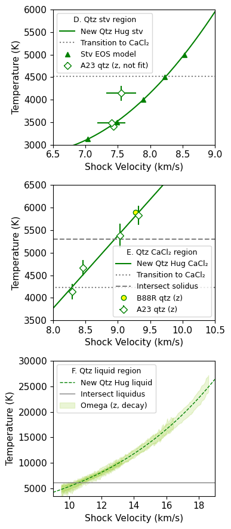
Figure 7ABC#
all yellow to darker (grey)
stv tan needs to be darker/changed
cst-phase boundary on bottom
for pind in [26,27,28]:
%run -i scripts/PTphasediagram.py
RES b= [ 173.75113152 -18503.2972858 ]
4000 K pressure = 113.4110155408729
RES a= [ 168.39552949 -9390.03914284]
4000 K pressure = 62.82706956833862
[107.25686863 117.77935509 138.87270554 85.9 ]
0 Model melt curve Line2D(Model melt curve)
1 Decaying Transparent front Line2D(Decaying Transparent front)
2 Decaying Liquid Field Line2D(Decaying Liquid Field)
3 Decaying Transition Line2D(Decaying Transition)
4 Decaying Opaque front Line2D(Decaying Opaque front)
5 New Qtz (z-cut) Hugoniot Line2D(New Qtz (z-cut) Hugoniot)
6 Behind transition front Line2D(Behind transition front)
7 Transition front Line2D(Transition front)
8 Steady L83R+B88R qtz <ErrorbarContainer object of 3 artists>
9 Steady This work <ErrorbarContainer object of 3 artists>
10 Steady This work (2-wave) <ErrorbarContainer object of 3 artists>
11
figsize= [6.4, 4.8]
Saved figure: A26-paper-fig7b.pdf
<Figure size 1000x600 with 0 Axes>
<Figure size 1000x600 with 0 Axes>
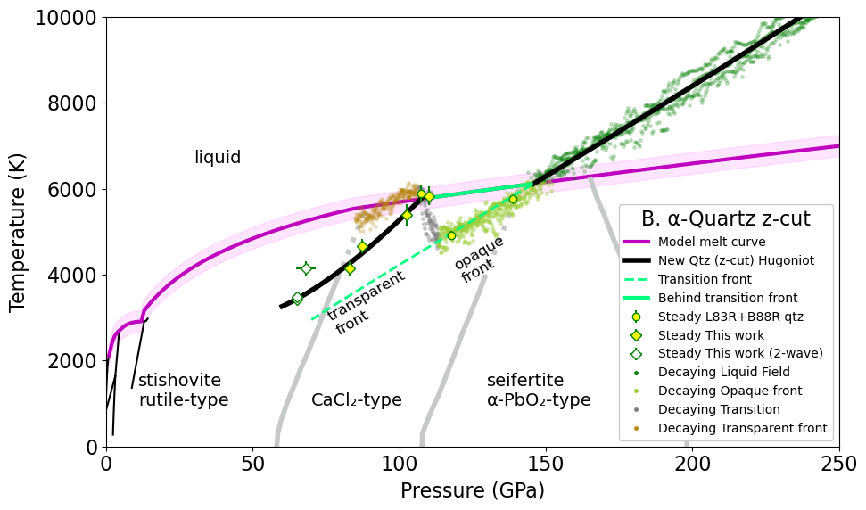
RES b= [ 173.75113152 -18503.2972858 ]
4000 K pressure = 113.4110155408729
RES a= [ 168.39552949 -9390.03914284]
4000 K pressure = 62.82706956833862
0 Model melt curve Line2D(Model melt curve)
1 New FS Hugoniot Line2D(New FS Hugoniot)
2 Transition front Line2D(Transition front)
3 Behind transition front Line2D(Behind transition front)
4 Decaying Transparent front (vis) <matplotlib.collections.FillBetweenPolyCollection object at 0x111b22350>
5 Decaying Opaque front (vis) <matplotlib.collections.FillBetweenPolyCollection object at 0x111b22850>
6 Decaying Opaque front (4.8 μm) <matplotlib.collections.FillBetweenPolyCollection object at 0x111b22e90>
7 Steady This work <ErrorbarContainer object of 3 artists>
8 Steady L83R+B88R FS <ErrorbarContainer object of 3 artists>
9 Decay H06 FS <ErrorbarContainer object of 3 artists>
10
figsize= [6.4, 4.8]
Saved figure: A27-paper-fig7a.pdf
<Figure size 1000x600 with 0 Axes>
<Figure size 1000x600 with 0 Axes>
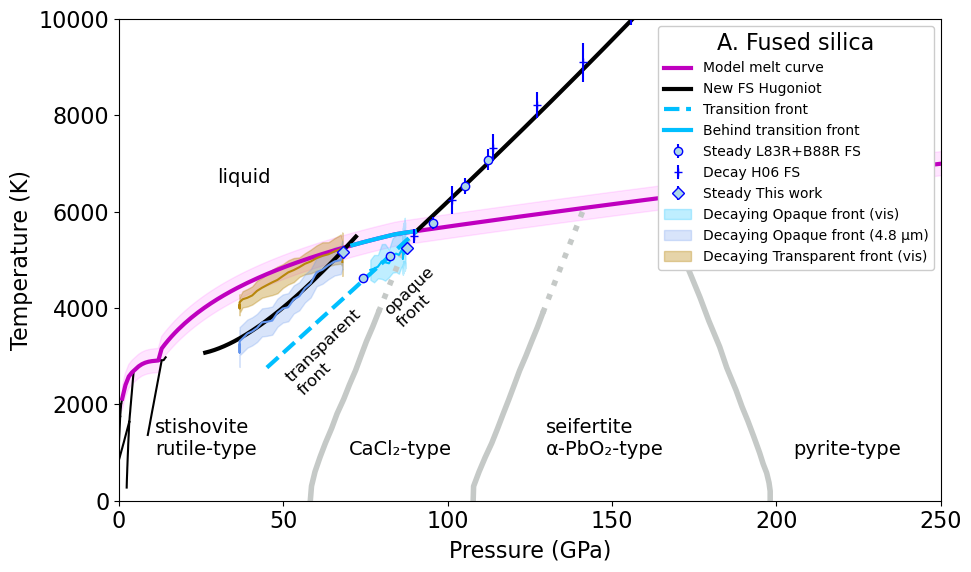
RES b= [ 173.75113152 -18503.2972858 ]
4000 K pressure = 113.4110155408729
RES a= [ 168.39552949 -9390.03914284]
4000 K pressure = 62.82706956833862
0 Model melt curve Line2D(Model melt curve)
1 Rev. M15 stv decaying: Opaque front (vis) <matplotlib.collections.FillBetweenPolyCollection object at 0x111cc3110>
2 Rev. M15 stv decaying: no P cal (vis) <matplotlib.collections.FillBetweenPolyCollection object at 0x111cc3250>
3 Rev. F24 cst decaying: Opaque front (vis) <matplotlib.collections.FillBetweenPolyCollection object at 0x111cc3390>
4 Rev. F24 cst decaying: Transparent front (vis) <matplotlib.collections.FillBetweenPolyCollection object at 0x111cc3750>
5 New cst Hugoniot Line2D(New cst Hugoniot)
6 Transition front Line2D(Transition front)
7 Behind transition front Line2D(Behind transition front)
8 New stv Hugoniot Line2D(New stv Hugoniot)
9
figsize= [6.4, 4.8]
Saved figure: A28-paper-fig7c.pdf
<Figure size 1000x600 with 0 Axes>
<Figure size 1000x600 with 0 Axes>
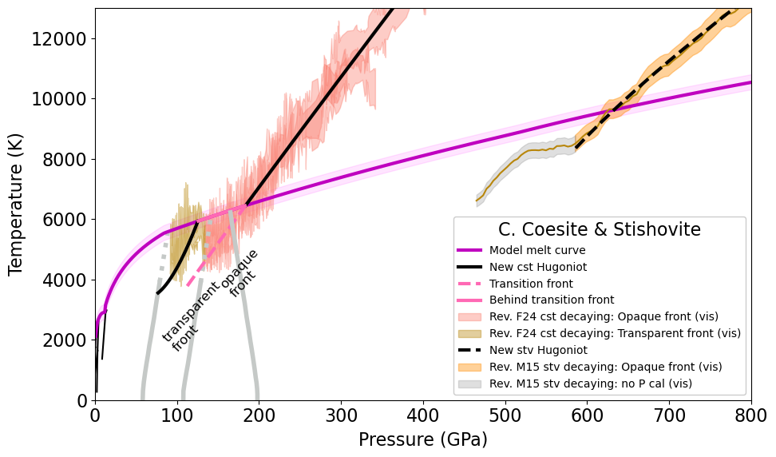
Figure 8ABC#
# in script: plt.figure(figsize=(10, 6)), plt.rcParams.update({'font.size': 16})
for pind in [9,10,13]:
#for pind in [13]:
%run -i scripts/PVphasediagram.py
9
0 Model liquidus Line2D(Model liquidus)
1 Model solidus Line2D(Model solidus)
2 T=300K Line2D(T=300K)
3 Temp. inversion <matplotlib.collections.FillBetweenPolyCollection object at 0x111c1c550>
4 This work Line2D(This work)
5 New Hugoniot: Liquid region Line2D(New Hugoniot: Liquid region)
6 New Hugoniot: Solid region Line2D(New Hugoniot: Solid region)
7 PT liquidus intersection Line2D(PT liquidus intersection)
8 Line2D( )
9 W62 <ErrorbarContainer object of 3 artists>
10 J68 <ErrorbarContainer object of 3 artists>
11 L83R+B88R <ErrorbarContainer object of 3 artists>
12 T18 <ErrorbarContainer object of 3 artists>
13 R19 <ErrorbarContainer object of 3 artists>
14 O25 <ErrorbarContainer object of 3 artists>
15 B19 <ErrorbarContainer object of 3 artists>
16
Saved figure: B9-SiO2-P-rho-phase-diagram-FS-Fig8A.pdf
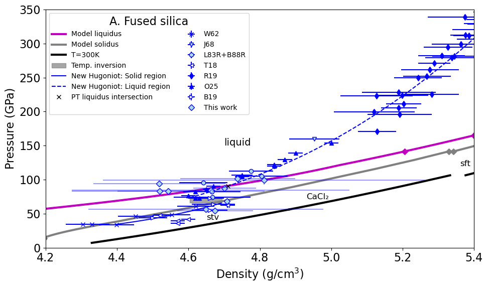
10
A= [107.25686863 117.77935509 138.87270554 85.9 ]
B= [ 92.64844931 126.98567629 75.9 99.3 109.7 ]
117.77935508769322 z
138.87270554014185 z
0 Model liquidus Line2D(Model liquidus)
1 Model solidus Line2D(Model solidus)
2 T=300K Line2D(T=300K)
3 Temp. inversion <matplotlib.collections.FillBetweenPolyCollection object at 0x111fe4410>
4 New Hugoniot Liquid region Line2D(New Hugoniot Liquid region)
5 New Hugoniot: Solid region Line2D(New Hugoniot: Solid region)
6 PT liquidus intersection Line2D(PT liquidus intersection)
7 Line2D( )
8 Line2D( )
9 L83R+B88R <ErrorbarContainer object of 3 artists>
10 W62 <ErrorbarContainer object of 3 artists>
11 This work <ErrorbarContainer object of 3 artists>
12 K13 <ErrorbarContainer object of 3 artists>
13
Saved figure: B10-SiO2-P-rho-phase-diagram-qtz-Fig8B.pdf
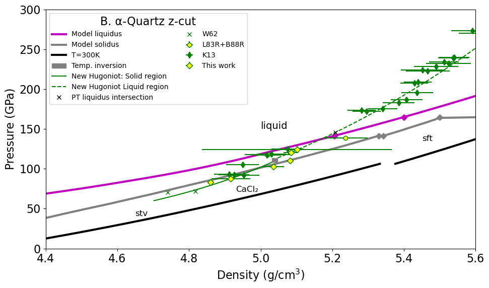
13
0 Model liquidus Line2D(Model liquidus)
1 Model solidus Line2D(Model solidus)
2 T=300K Line2D(T=300K)
3 Temp. inversion <matplotlib.collections.FillBetweenPolyCollection object at 0x11289afd0>
4 New Hugoniot: Liquid region Line2D(New Hugoniot: Liquid region)
5 New Hugoniot: Solid region Line2D(New Hugoniot: Solid region)
6 PT liquidus intersection Line2D(PT liquidus intersection)
7 Line2D( )
8 Line2D( )
9 Line2D( )
10 P81 <ErrorbarContainer object of 3 artists>
11 L02 <ErrorbarContainer object of 3 artists>
12 F24 <ErrorbarContainer object of 3 artists>
10
Saved figure: B13-SiO2-P-rho-phase-diagram-cst-Fig8C.pdf
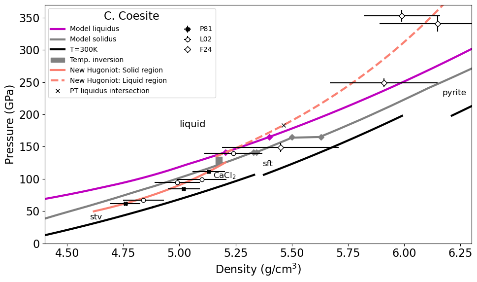
Figure 9#
%run -i scripts/set_plotstyle.py # customize matplotlib
%run -i scripts/set_colors.py # custom colors
for pind in [29]:
%run -i scripts/PTphasediagram.py
RES b= [ 173.75113152 -18503.2972858 ]
4000 K pressure = 113.4110155408729
RES a= [ 168.39552949 -9390.03914284]
4000 K pressure = 62.82706956833862
figsize= [6.4, 4.8]
Saved figure: A29-paper-fig9.pdf
<Figure size 800x600 with 0 Axes>
<Figure size 1000x600 with 0 Axes>
<Figure size 1000x600 with 0 Axes>
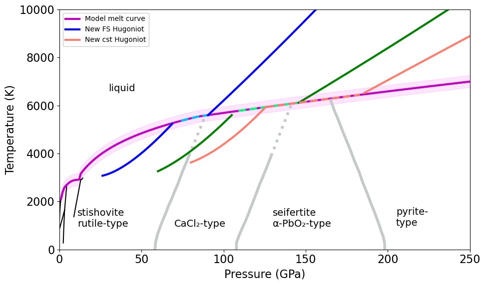
Supplemental Figures#
%run -i scripts/set_plotstyle.py # customize matplotlib
%run -i scripts/set_colors.py # custom colors
for pind in [29]:
%run -i scripts/PTphasediagram.py
RES b= [ 173.75113152 -18503.2972858 ]
4000 K pressure = 113.4110155408729
RES a= [ 168.39552949 -9390.03914284]
4000 K pressure = 62.82706956833862
figsize= [6.4, 4.8]
Saved figure: A29-paper-fig9.pdf
<Figure size 800x600 with 0 Axes>
<Figure size 1000x600 with 0 Axes>
<Figure size 1000x600 with 0 Axes>
%run -i scripts/set_plotstyle.py # customize matplotlib
%run -i scripts/set_colors.py # custom colors
for pind in [30]:
%run -i scripts/PTphasediagram.py
RES b= [ 173.75113152 -18503.2972858 ]
4000 K pressure = 113.4110155408729
RES a= [ 168.39552949 -9390.03914284]
4000 K pressure = 62.82706956833862
figsize= [6.4, 4.8]
Saved figure: A30-paper-fig9.pdf
<Figure size 800x600 with 0 Axes>
<Figure size 1000x600 with 0 Axes>
<Figure size 1000x600 with 0 Axes>
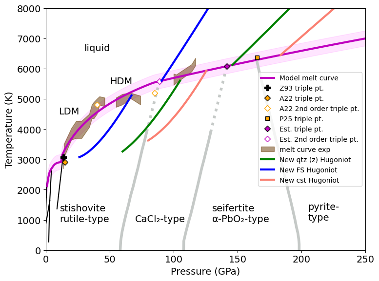
#plt.rcParams.update(plt.rcParamsDefault)
#figure, ax = plt.subplots(1, 2,figsize=(16,6))
#figure, ax = plt.subplots(1, 2,figsize=(10,4))
figure, ax = plt.subplots(3, 1,figsize=fsize3)
plt.rcParams['lines.markersize'] = mks/2
ax[0].set_prop_cycle(custom_cycler)
ax[1].set_prop_cycle(custom_cycler)
#fss=12
#plt.rcParams.update({'font.size': fss})
#ax[0].update_annotations(font_size=12)
ax[0].plot(shockdat_list[MDqtz70811['id']].us,shockdat_list[MDqtz70811['id']].T,'.',label='70811')
ax[0].plot(shockdat_list[MDqtz70813['id']].us,shockdat_list[MDqtz70813['id']].T,'.',label='70813')
ax[0].plot(shockdat_list[MDqtz70817['id']].us,shockdat_list[MDqtz70817['id']].T,'.',label='70817')
ax[0].plot(shockdat_list[MDqtz70820['id']].us,shockdat_list[MDqtz70820['id']].T,'.',label='70820')
ax[0].set_xlim(8,12)
ax[0].set_ylim(4000,9000)
ax[0].set_ylabel('Shock Temperature (K)',fontsize=fss)
ax[0].set_xlabel('Shock Velocity (km/s)',fontsize=fss)
# qtz_wiggle_us1 and qtz_wiggle_us2 set in define_eos.py
ax[0].plot([qtz_wiggle_us1,qtz_wiggle_us1],[0,10000],'k--')
ax[0].plot([qtz_wiggle_us2,qtz_wiggle_us2],[0,10000],'k--')
#ax[0].set_title('Quartz Temperature-Shock Velocity Inversion')
ax[1].plot(shockdat_list[MDfs69691['id']].us,shockdat_list[MDfs69691['id']].T,'.',label='69691')
# fs_wiggle_us1 and fs_wiggle_us2 are set in define_eos.py
ax[1].plot([fs_wiggle_us1,fs_wiggle_us1],[0,1000],'k--')
ax[1].plot([fs_wiggle_us2,fs_wiggle_us2],[0,1000],'k--')
ax[1].set_ylim(0,1000)
ax[1].set_xlabel('Shock Velocity (km/s)',fontsize=fss)
ax[1].set_ylabel('Pyrometry Counts',fontsize=fss)
#ax[1].set_title('Fused Silica')
# coesite
#plt.title('Coesite Temperature Inversion',label='43939')
ax[2].plot(shockdat_list[F24cst43939['id']].us,shockdat_list[F24cst43939['id']].T,'.',color='b',markersize=1,label='43939')
ax[2].fill_between(shockdat_list[F24cst43939['id']].us,shockdat_list[F24cst43939['id']].T-shockdat_list[F24cst43939['id']].T_std,shockdat_list[F24cst43939['id']].T+shockdat_list[F24cst43939['id']].T_std, color='blue', alpha = 0.1)
ax[2].plot([cst_wiggle_us1,cst_wiggle_us1],[4000,12000],'k--')
ax[2].plot([cst_wiggle_us2,cst_wiggle_us2],[4000,12000],'k--')
#ax[2].plot([9.8,9.8],[4000,12000],'k--')
ax[2].set_xlim(8.5,13)
ax[2].set_ylim(4000,10000)
ax[2].legend(title='C. Coesite',fontsize=lfss, title_fontsize=lfss)
ax[2].set_xlabel('Shock Velocity (km/s)',fontsize=fss)
ax[2].set_ylabel('Temperature (K)',fontsize=fss)
# Set tick font size
for label in (ax[0].get_xticklabels() + ax[0].get_yticklabels()):
label.set_fontsize(fss)
for label in (ax[1].get_xticklabels() + ax[1].get_yticklabels()):
label.set_fontsize(fss)
for label in (ax[2].get_xticklabels() + ax[2].get_yticklabels()):
label.set_fontsize(fss)
ax[0].legend(title='A. α-quartz (z)',fontsize=lfss, title_fontsize=lfss, loc='upper left', framealpha=1)
ax[1].legend(title='B. Fused silica',fontsize=lfss, title_fontsize=lfss)
plt.tight_layout()
plt.savefig(outputfigpath+tag+'A-wiggles.pdf')
plt.savefig(figurefigpath+tag+'A-wiggles.pdf')
plt.show()
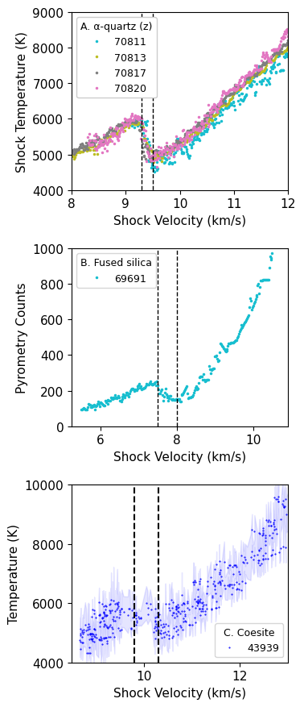
print(cst_wiggle_us1,cst_wiggle_us2)
print(np.interp(9.8,cst_hug_cacl2.us,cst_hug_cacl2.P))
9.8 10.3
122.6792821528645
%run -i scripts/set_plotstyle.py # customize matplotlib
%run -i scripts/set_colors.py # custom colors
plt.figure(figsize=fsize)
#plt.figure(figsize=(10, 6))
plt.rcParams.update({'font.size': 16})
plt.errorbar(shockdat_list[B88fs['id']].P,shockdat_list[B88fs['id']].T,fmt='bo',mfc='white',yerr=shockdat_list[B88fs['id']].T_std,label=B88fs['lab']+' (orig)')
ind = np.where(shockdat_list[B88RRfs['id']].us==0)
#plt.errorbar(shockdat_list[B88RRfs['id']].P[ind],shockdat_list[B88RRfs['id']].T[ind],fmt='bo',mfc='white',yerr=shockdat_list[B88RRfs['id']].T_std[ind],label=B88fs['lab']+' (noim)')
ind = np.where(shockdat_list[B88RRfs['id']].us>0)
plt.errorbar(shockdat_list[B88RRfs['id']].P[ind],shockdat_list[B88RRfs['id']].T[ind],fmt='bo',mfc='lightblue',yerr=shockdat_list[B88RRfs['id']].T_std[ind],label=B88RRfs['lab']+ '(new im)')
plt.errorbar(shockdat_list[B88qtz['id']].P,shockdat_list[B88qtz['id']].T,fmt='go',mfc='white',yerr=shockdat_list[B88qtz['id']].T_std,label=B88qtz['lab']+' (orig)')
ind = np.where(shockdat_list[B88RRfs['id']].us==0)
#plt.errorbar(shockdat_list[B88RRfs['id']].P[ind],shockdat_list[B88RRfs['id']].T[ind],fmt='bo',mfc='white',yerr=shockdat_list[B88RRfs['id']].T_std[ind],label=B88fs['lab']+' (noim)')
ind = np.where(shockdat_list[B88RRqtz['id']].us>0)
plt.errorbar(shockdat_list[B88RRqtz['id']].P[ind],shockdat_list[B88RRqtz['id']].T[ind],fmt='go',mfc='gold',yerr=shockdat_list[B88RRqtz['id']].T_std[ind],label=B88RRqtz['lab']+ ' (new im)')
plt.xlabel('Pressure (GPa)')
plt.ylabel('Temperature (K)')
plt.legend()
plt.tight_layout()
plt.savefig(figurefigpath+'Boslough-redo.pdf')
plt.show()
print(shockdat_list[B88fs['id']].T)
print(shockdat_list[B88fs['id']].P)
print(shockdat_list[B88RRfs['id']].T)
print(shockdat_list[B88RRfs['id']].P)
print(shockdat_list[B88RRfs['id']].us)
<Figure size 800x600 with 0 Axes>
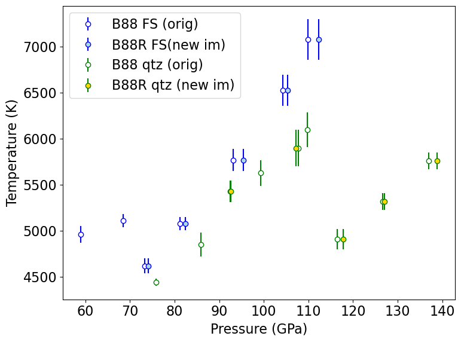
[4960. 5110. 4620. 5080. 5770. 6530. 7080.]
[ 58.9 68.5 73.3 81.2 93.2 104.2 109.9]
[4620. 5080. 5770. 6530. 7080. 4960. 5110.]
[ 74.12312129 82.47435724 95.43049296 105.26740996 112.32791664
58.9 68.5 ]
[7.98 8.42 9.08 9.4 9.73 0. 0. ]
# read in the fused silica decaying shock data from Amodeo et al.
with open('shot50/shot50-analysis.pkl', 'rb') as f: # Python 3: open(..., 'wb')
s50time, s50temp, s50temperr, s50pres, s50us, s50up, ind50, isort50,s50tempbackout,Tsteady,Tsteady_err,Psteady,usstart=pickle.load(f)
with open('shot60/shot60-analysis.pkl', 'rb') as f: # Python 3: open(..., 'wb')
s60time, s60temp, s60temperr, s60pres, s60us, s60us_err, s60up, ind60, isort60,s60Tsteady,s60Tsteady_err,s60Psteady,s60Psteady_err,s60Ussteady,s60Ussteady_err=pickle.load(f)
plt.xlabel('Pressure (GPa)')
plt.ylabel('Temperature (K)')
plt.title('Shot 50 and 60 Fused Silica Decay')
plt.plot(s50pres[ind50],s50temp[ind50],'+',color='darkviolet',label='Shot 50')
plt.fill_between(s50pres[ind50[isort50]],s50temp[ind50[isort50]]-s50temperr[ind50[isort50]],s50temp[ind50[isort50]]+s50temperr[ind50[isort50]], color='blue', alpha = 0.1)
# plot the shot 50 IM solution point
#68.23569784953546 1.4210854715202004e-14
#5170.920498064298 19.364571422900298
plt.errorbar(68.2,5170,fmt='D',mfc='white',mec='darkviolet',yerr=19,label='Shot 50')
#
plt.plot(s60pres[ind60],s60temp[ind60],'+',color='magenta',label='Shot 60')
plt.fill_between(s60pres[ind60[isort60]],s60temp[ind60[isort60]]-s60temperr[ind60[isort60]],s60temp[ind60[isort60]]+s60temperr[ind60[isort60]], color='blue', alpha = 0.1)
# plot the shot 60 IM solution point
plt.errorbar(87.7,5250,fmt='D',mec='magenta',mfc='white',xerr=.3,yerr=27,label='Shot 60')
if 1:
plt.errorbar(shockdat_list[B88fs['id']].P,shockdat_list[B88fs['id']].T,fmt='bo',mfc='white',yerr=shockdat_list[B88fs['id']].T_std,label=B88fs['lab'])
ind = np.where(shockdat_list[B88RRfs['id']].T>0)
plt.errorbar(shockdat_list[B88RRfs['id']].P[ind],shockdat_list[B88RRfs['id']].T[ind],fmt='bo',mfc='lightblue',yerr=shockdat_list[B88RRfs['id']].T_std[ind],label=B88RRfs['lab'])
plt.errorbar(shockdat_list[S80fs['id']].P,shockdat_list[S80fs['id']].T,fmt='bv',xerr=shockdat_list[S80fs['id']].P_std,yerr=shockdat_list[S80fs['id']].T_std,label=S80fs['lab'])
plt.errorbar(shockdat_list[S81fs['id']].P,shockdat_list[S81fs['id']].T,fmt='bx',label=S81fs['lab'])
plt.xlim(20,120)
plt.ylim(2500,8000)
plt.plot(stsmcsmooth.P,stsmcsmooth.T,'m-',linewidth=3,label='Proposed melt curve')
plt.legend(fontsize=lfss)
plt.savefig(outputfigpath+'shot50-60-comp-data.png')
plt.savefig(outputfigpath+'shot50-60-comp-data.pdf')
plt.show()
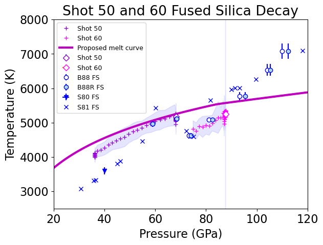
fig = plt.figure(figsize=(12, 6))
plt.rcParams.update({'font.size': 14})
plt.xlabel('Pressure (GPa)')
plt.ylabel('Temperature (K)')
plt.title('Fused Silica')
plt.plot(s50pres[ind50],s50temp[ind50],'+',color='darkviolet',label='SOP decaying shock')
plt.fill_between(s50pres[ind50[isort50]],s50temp[ind50[isort50]]-s50temperr[ind50[isort50]],s50temp[ind50[isort50]]+s50temperr[ind50[isort50]], color='blue', alpha = 0.1)
# plot the shot 50 IM solution point
#68.23569784953546 1.4210854715202004e-14
#5170.920498064298 19.364571422900298
plt.errorbar(68.2,5170,fmt='D',mfc='white',mec='darkviolet',yerr=19)#,label='Vis decaying shock')
#
plt.plot(s60pres[ind60],s60temp[ind60],'+',color='magenta',label='SOP decaying shock')
plt.fill_between(s60pres[ind60[isort60]],s60temp[ind60[isort60]]-s60temperr[ind60[isort60]],s60temp[ind60[isort60]]+s60temperr[ind60[isort60]], color='blue', alpha = 0.1)
# plot the shot 60 IM solution point
plt.errorbar(87.7,5250,fmt='D',mec='magenta',mfc='white',xerr=.3,yerr=27)#,label='Vis decaying shock')
if 1:
#plt.errorbar(shockdat_list[B88fs['id']].P,shockdat_list[B88fs['id']].T,fmt='bo',mfc='white',yerr=shockdat_list[B88fs['id']].T_std,label=B88fs['lab'])
ind = np.where(shockdat_list[B88RRfs['id']].T>0)
plt.errorbar(shockdat_list[B88RRfs['id']].P[ind],shockdat_list[B88RRfs['id']].T[ind],fmt='bo',mfc='lightblue',yerr=shockdat_list[B88RRfs['id']].T_std[ind],label=B88RRfs['lab'])
plt.errorbar(shockdat_list[S80fs['id']].P,shockdat_list[S80fs['id']].T,fmt='bv',xerr=shockdat_list[S80fs['id']].P_std,yerr=shockdat_list[S80fs['id']].T_std,label=S80fs['lab'])
plt.errorbar(shockdat_list[S81fs['id']].P,shockdat_list[S81fs['id']].T,fmt='bx',label=S81fs['lab'])
plt.xlim(20,120)
plt.ylim(2500,8000)
plt.plot(stsmcsmooth.P,stsmcsmooth.T,'m-',linewidth=3,label='Proposed melt curve')
#plt.legend()
plt.legend(loc='center left', bbox_to_anchor=(1, 0.5),fontsize=10)
plt.tight_layout()
plt.savefig(outputfigpath+'shot50-60-comp-data.png')
plt.savefig(outputfigpath+'shot50-60-comp-data.pdf')
plt.show()
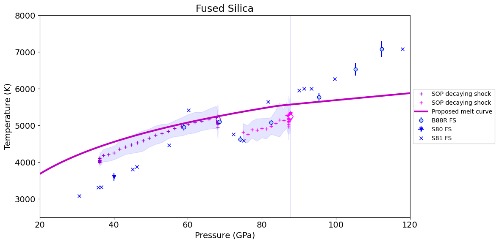
%run -i scripts/set_plotstyle.py # customize matplotlib
%run -i scripts/set_colors.py # custom colors
plt.figure(figsize=fsize)
plt.rcParams.update({'font.size': 16})
plt.fill_between(stsmcsmooth.P,stsmcsmooth.T-150,stsmcsmooth.T+150,color='magenta',alpha=0.1)
isort60p = np.arange(47,58,1)
plt.xlabel('Pressure (GPa)')
plt.ylabel('Temperature (K)')
#plt.title('Fused Silica')
plt.plot(s50pres[ind50],s50temp[ind50],'+',color='darkviolet',label='Vis decaying shock')
plt.fill_between(s50pres[ind50[isort50]],s50temp[ind50[isort50]]-s50temperr[ind50[isort50]],s50temp[ind50[isort50]]+s50temperr[ind50[isort50]], color='blue', alpha = 0.1)
# plot the shot 50 IM solution point
#68.23569784953546 1.4210854715202004e-14
#5170.920498064298 19.364571422900298
plt.errorbar(68.2,5170,fmt='D',mfc='white',mec='darkviolet',yerr=19)#,label='Vis decaying shock')
#
plt.plot(s60pres[ind60[isort60p]],s60temp[ind60[isort60p]],'+',color='magenta',label='Vis decaying shock')
plt.fill_between(s60pres[ind60[isort60p]],s60temp[ind60[isort60p]]-s60temperr[ind60[isort60p]],s60temp[ind60[isort60p]]+s60temperr[ind60[isort60p]], color='blue', alpha = 0.1)
# plot the shot 60 IM solution point
plt.errorbar(87.7,5250,fmt='D',mec='magenta',mfc='white',xerr=.3,yerr=27)#,label='Vis decaying shock')
plt.plot(s50pres[ind50[40::]],s50tempbackout[ind50[40::]],'+',color='dodgerblue',label='4.8 μm decaying shock')
plt.fill_between(s50pres[ind50[40::]],s50tempbackout[ind50[40::]]-Tsteady_err,s50tempbackout[ind50[40::]]+Tsteady_err, color='dodgerblue', alpha = 0.1)
if 1:
#plt.errorbar(shockdat_list[B88fs['id']].P,shockdat_list[B88fs['id']].T,fmt='bo',mfc='white',yerr=shockdat_list[B88fs['id']].T_std,label=B88fs['lab'])
ind = np.where(shockdat_list[B88RRfs['id']].T>0)
plt.errorbar(shockdat_list[B88RRfs['id']].P[ind],shockdat_list[B88RRfs['id']].T[ind],fmt='bo',mfc='lightblue',yerr=shockdat_list[B88RRfs['id']].T_std[ind],label=B88RRfs['lab'])
plt.errorbar(shockdat_list[S80fs['id']].P,shockdat_list[S80fs['id']].T,fmt='bv',xerr=shockdat_list[S80fs['id']].P_std,yerr=shockdat_list[S80fs['id']].T_std,label=S80fs['lab'])
plt.errorbar(shockdat_list[S81fs['id']].P,shockdat_list[S81fs['id']].T,fmt='bx',label=S81fs['lab'])
plt.xlim(20,120)
plt.ylim(2500,8000)
plt.plot(stsmcsmooth.P,stsmcsmooth.T,'m-',linewidth=3,label='Proposed melt curve')
plt.fill_between([fs_wiggle_P1,fs_wiggle_P2],[fs_wiggle_T1,fs_wiggle_T1],[fs_wiggle_T2,fs_wiggle_T2],color='grey',alpha=0.4,label='Temp. inversion')
ind=np.where(fs_hug_liq.P>fs_wiggle_P2)[0]
plt.plot(fs_hug_liq.P[ind],fs_hug_liq.T[ind],'b-',linewidth=3)
ind=np.where(fs_hug_stv.P<fs_startsol_P)[0]
plt.plot(fs_hug_stv.P[ind],fs_hug_stv.T[ind],'b-',linewidth=3)
plt.legend(title='Fused Silica',fontsize=lfss)
#plt.legend(loc='center left', bbox_to_anchor=(1, 0.5),fontsize=10)
plt.tight_layout()
plt.savefig(outputfigpath+'shot50-60-comp-data2.png')
plt.savefig(figurefigpath+'shot50-60-comp-data2.pdf')
plt.show()
<Figure size 800x600 with 0 Axes>
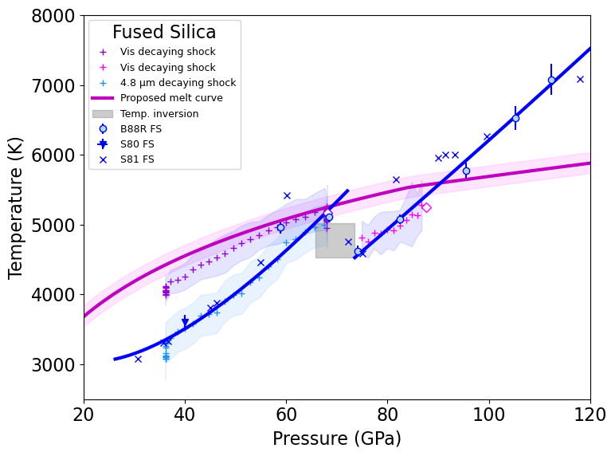
fs_wiggle_T1 = np.interp(fs_wiggle_us1,fs_hug_stv.us,fs_hug_stv.T)
fs_wiggle_T2 = np.interp(fs_wiggle_us2,fs_hug_liq.us,fs_hug_liq.T)
Check Geng et al. 2024 melt curve#
plt.plot(eosdat_list[G24mclrho['id']].rho_liquid,eosdat_list[G24mclrho['id']].P_liquid,'x--',color='red',label=G24mclrho['lab']+'\n(2phase)')
plt.xlabel('Density (g/cm3)')
plt.ylabel('Pressure (GPa)')
res = np.polyfit(eosdat_list[G24mclrho['id']].rho_liquid,eosdat_list[G24mclrho['id']].P_liquid,2)
xrho = np.arange(3.5,6.75,.01)
ypres = res[2]+res[1]*xrho+res[0]*xrho*xrho
plt.plot(xrho,ypres,'k--',label='Quadratic fit')
plt.legend()
plt.show()
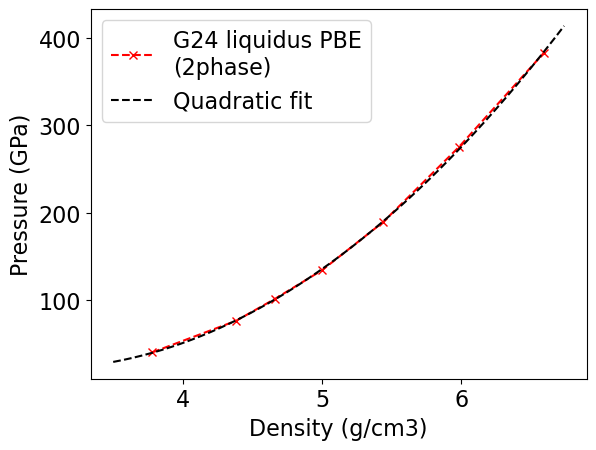
pg24arr = np.arange(5000)+50 # GPa
tg24arr = 6.426*np.power((1+(pg24arr+256.011)/6.474e-04),0.5141)
ax[0].plot(pg24arr,tg24arr,'-',color='darkorange',label='G24 Z method GGA')
pg24arr = np.arange(5000)+50 # GPa
tg24arr = 6.018*np.power((1+(pg24arr+202.338)/4.736e-04),0.5126)
# find where P-T crosses
fs_PT_cross = intersection(pg24arr,tg24arr,fs_hug_liq.P,fs_hug_liq.T)
qtz_PT_cross = intersection(pg24arr,tg24arr,qtz_hug_liq.P,qtz_hug_liq.T)
cst_PT_cross = intersection(pg24arr,tg24arr,cst_hug_liq.P,cst_hug_liq.T)
fs_rho_cross = np.interp(fs_PT_cross[0],fs_hug_liq.P,fs_hug_liq.rho)
qtz_rho_cross = np.interp(qtz_PT_cross[0],qtz_hug_liq.P,qtz_hug_liq.rho)
cst_rho_cross = np.interp(cst_PT_cross[0],cst_hug_liq.P,cst_hug_liq.rho)
# Fig 2 Geng et al. 2024 model densities
fs_rho_model = np.interp(fs_PT_cross[0],eosdat_list[G24mclrho['id']].P_liquid,eosdat_list[G24mclrho['id']].rho_liquid)
qtz_rho_model = np.interp(qtz_PT_cross[0],eosdat_list[G24mclrho['id']].P_liquid,eosdat_list[G24mclrho['id']].rho_liquid)
cst_rho_model = np.interp(cst_PT_cross[0],eosdat_list[G24mclrho['id']].P_liquid,eosdat_list[G24mclrho['id']].rho_liquid)
fs_rho_model = np.interp(fs_PT_cross[0],ypres,xrho)
qtz_rho_model = np.interp(qtz_PT_cross[0],ypres,xrho)
cst_rho_model = np.interp(cst_PT_cross[0],ypres,xrho)
print(fs_rho_cross-fs_rho_model)
print(qtz_rho_cross-qtz_rho_model)
print(cst_rho_cross-cst_rho_model)
diff_arr = np.asarray([fs_rho_cross-fs_rho_model,qtz_rho_cross-qtz_rho_model,cst_rho_cross-cst_rho_model])
diff_mean = np.mean(diff_arr)
diff_std = np.std(diff_arr)
print(diff_mean,diff_std)
G24_rshift = diff_mean
G24_rshift_std = diff_std
[0.16603327]
[0.1210586]
[0.07439566]
0.12049584241245152 0.03741301490098057
%run -i scripts/set_plotstyle.py # customize matplotlib
%run -i scripts/set_colors.py # custom colors
fig, ax = plt.subplots(1, 2,figsize=fsize2)
plt.rcParams['lines.markersize'] = mks
whu=3
ax[0].plot(pg24arr,tg24arr,'r--',label='G24 melt curve\nPBE (2phase)')
indfs = np.where(fs_hug_liq.P > fs_wiggle_P2)
ax[0].plot(fs_hug_liq.P[indfs],fs_hug_liq.T[indfs],'b-',label='FS New Hug: liquid',linewidth=whu)
indqtz = np.where(qtz_hug_liq.P > qtz_wiggle_P2)
ax[0].plot(qtz_hug_liq.P[indqtz],qtz_hug_liq.T[indqtz],'g-',label='Qtz New Hug: liquid',linewidth=whu)
indcst = np.where(cst_hug_liq.P > cst_wiggle_P2)
ax[0].plot(cst_hug_liq.P[indcst],cst_hug_liq.T[indcst],'-',color='salmon',label='Cst New Hug: liquid',linewidth=whu)
ax[0].plot(fs_PT_cross[0],fs_PT_cross[1],'bD')
ax[0].plot(qtz_PT_cross[0],qtz_PT_cross[1],'gD')
ax[0].plot(cst_PT_cross[0],cst_PT_cross[1],'D',color='salmon')
ax[0].set_xlim(50,250)
ax[0].set_ylim(4000,7000)
ax[0].set_xlabel('Pressure (GPa)')
ax[0].set_ylabel('Temperature (K)')
ax[0].text(55,6650,'A')
ax[0].legend(fontsize=lfss)
ax[1].plot(eosdat_list[G24mclrho['id']].rho_liquid,eosdat_list[G24mclrho['id']].P_liquid,'--',color='red',label=G24mclrho['lab']+'\n(2phase)')
#ax[1].plot(eosdat_list[G24mclrho['id']].rho_liquid+diff_mean,eosdat_list[G24mclrho['id']].P_liquid,'-',color='red',label=G24mclrho['lab']+'\n(2phase, shift)')
ax[1].plot(xrho+diff_mean,ypres,'-',color='red',label=G24mclrho['lab']+'\n(2phase, shift)')
ax[1].plot(fs_hug_liq.rho[indfs],fs_hug_liq.P[indfs],'b-',linewidth=whu)#,label='FS Hugoniot')
ax[1].plot(qtz_hug_liq.rho[indqtz],qtz_hug_liq.P[indqtz],'g-',linewidth=whu)#,label='Qtz Hugoniot')
ax[1].plot(cst_hug_liq.rho[indcst],cst_hug_liq.P[indcst],'-',color='salmon',linewidth=whu)#,label='Cst Hugoniot')
ax[1].plot(fs_rho_cross,fs_PT_cross[0],'bD')
ax[1].plot(qtz_rho_cross,qtz_PT_cross[0],'gD')
ax[1].plot(cst_rho_cross,cst_PT_cross[0],'D',color='salmon')
ax[1].fill_between([5.2,5.24],[0,0],[25000,25000],color='grey',alpha=0.2)
ax[1].set_ylim(50,250)
ax[1].set_xlim(4,6.5)
ax[1].text(4.1,225,'B')
ax[1].set_ylabel('Pressure (GPa)')
ax[1].set_xlabel('Density (g/cm³)')
ax[1].legend(fontsize=lfss)
fig.tight_layout()
plt.savefig(outputfigpath+'Geng24-density-shift.pdf')
plt.savefig(figurefigpath+'Geng24-density-shift.pdf')
plt.show()
<Figure size 800x600 with 0 Axes>
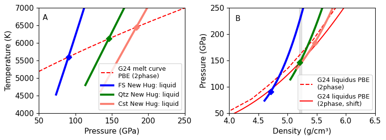
diff_arr = np.asarray([fs_rho_cross-fs_rho_model,qtz_rho_cross-qtz_rho_model,cst_rho_cross-cst_rho_model])
print('Density offset from PBE 2phase liquidus and Hugoniot data: ',np.mean(diff_arr),'+- ',np.std(diff_arr),' g/cm3')
##
print('pbe_liquid_density_shift = ',np.mean(diff_arr),' # g/cm3')
print('pbe_liquid_density_shift_std = ',np.std(diff_arr),' # g/cm3')
Density offset from PBE 2phase liquidus and Hugoniot data: 0.12049584241245152 +- 0.03741301490098057 g/cm3
pbe_liquid_density_shift = 0.12049584241245152 # g/cm3
pbe_liquid_density_shift_std = 0.03741301490098057 # g/cm3
Inflection in the quartz shock temperatures#
This inflection point is interpreted as crossing the liquidus.
#plt.figure(figsize=fsize)
%run -i scripts/set_plotstyle.py # customize matplotlib
%run -i scripts/set_colors.py # custom colors
fig, ax = plt.subplots(1, 2,figsize=fsize2)
#plt.rcParams['lines.markersize'] = mks
#figure, ax = plt.subplots(figsize=fsize)
ax[0].set_prop_cycle(custom_cycler)
mss=mks/10
nwin=51
# these data
# first smooth each Omega decaying shock
zzz = np.where((M70811.rho > 5) & (M70811.rho <5.75))[0]
that11 = savgol_filter(M70811.T[zzz],nwin, 2) # window size 51, polynomial order 3
zzz11 = deepcopy(zzz)
#print(zzz11)
ax[0].plot(M70811.rho[zzz],M70811.T[zzz],'.',markersize=mss,label='70811')
#ax[0].plot(M70811.rho[zzz],that11)
zzz = np.where((M70813.rho > 5) & (M70813.rho <5.75))[0]
zzz13 = deepcopy(zzz)
#print(zzz13)
that13 = savgol_filter(M70813.T[zzz], nwin, 2) # window size 51, polynomial order 3
ax[0].plot(M70813.rho[zzz],M70813.T[zzz],'.',markersize=mss,label='70813')
#ax[0].plot(M70813.rho[zzz],that13)
zzz = np.where((M70817.rho > 5) & (M70817.rho <5.75))[0]
that17 = savgol_filter(M70817.T[zzz], nwin, 2) # window size 51, polynomial order 3
zzz17 = deepcopy(zzz)
#print(zzz17)
ax[0].plot(M70817.rho[zzz],M70817.T[zzz],'.',markersize=mss,label='70817')
#ax[0].plot(M70817.rho[zzz],that17)
zzz = np.where((M70820.rho > 5) & (M70820.rho <5.75))[0]
zzz20 = deepcopy(zzz)
#print(zzz20)
that20 = savgol_filter(M70820.T[zzz], nwin, 2) # window size 51, polynomial order 3
ax[0].plot(M70820.rho[zzz],M70820.T[zzz],'.',markersize=mss,label='70820')
zzz = np.where((M70811.rho > 5) & (M70811.rho <5.75))[0]
ax[0].plot(M70811.rho[zzz],that11)
zzz = np.where((M70813.rho > 5) & (M70813.rho <5.75))[0]
ax[0].plot(M70813.rho[zzz],that13)
zzz = np.where((M70817.rho > 5) & (M70817.rho <5.75))[0]
ax[0].plot(M70817.rho[zzz],that17)
zzz = np.where((M70820.rho > 5) & (M70820.rho <5.75))[0]
ax[0].plot(M70820.rho[zzz],that20)
ax[0].fill_between([5.2,5.24],[0,0],[25000,25000],color='grey',alpha=0.2)
ax[0].plot([5.22,5.22],[4000,10000],'--',color='grey' )
ax[0].set_ylim(4500,9000)
ax[0].set_xlim(5.,5.5)
ax[0].set_xlabel(r'Density (g/cm$^3$)')
ax[0].set_ylabel('Temperature (K)')
ax[0].legend(fontsize=lfss)
mss=mks/4
ax[1].set_prop_cycle(custom_cycler)
ax[1].plot(M70811.rho[zzz11],np.gradient(that11,M70811.rho[zzz11]),'.',label='70811',markersize=mss)
ax[1].plot(M70813.rho[zzz13],np.gradient(that13,M70813.rho[zzz13]),'.',label='70813',markersize=mss)
ax[1].plot(M70817.rho[zzz17],np.gradient(that17,M70817.rho[zzz17]),'.',label='70817',markersize=mss)
ax[1].plot(M70820.rho[zzz20],np.gradient(that20,M70820.rho[zzz20]),'.',label='70820',markersize=mss)
ax[1].plot([5.22,5.22],[-3e4,3e4],'--',color='grey')
ax[1].fill_between([5.2,5.24],[0,0],[25000,25000],color='grey',alpha=0.2)
ax[1].plot([5,5.7],[1.1e4,1.1e4],'k-',linewidth=1)
ax[1].set_ylim(0,2.5e4)
ax[1].set_xlim(5.,5.5)
#plt.title('Slope of T vs. rho (KD09 liquid Hugoniot)')
ax[1].set_xlabel(r'Density ρ (g/cm$^3$)')
ax[1].set_ylabel('dT/dρ (K/(g/cm$^3$))')
ax[1].legend(fontsize=lfss)
fig.tight_layout()
fig.savefig(outputfigpath+tag+'AB-omega-kink.pdf')
fig.savefig(figurefigpath+tag+'AB-omega-kink.pdf')
plt.show()
<Figure size 800x600 with 0 Axes>
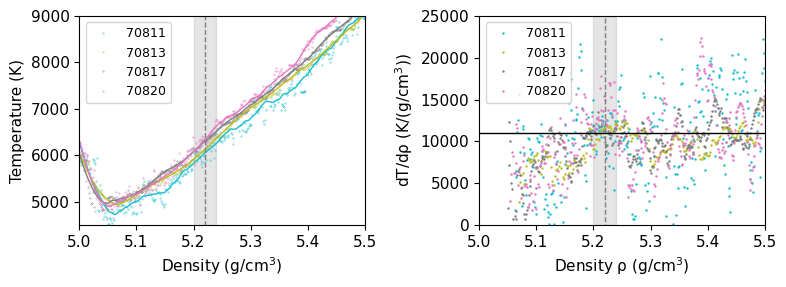
Coesite supplemental figures#
# load stv EOS model
# Using Hugoniot PV, these are the stv EOS temperatures on the Hugoniot
with open(figurefigpath+'cstmodel.pkl', 'rb') as f:
cstusmodel,csttmodel,cstpmodel,cstrhomodel=pickle.load(f)
%run -i scripts/set_plotstyle.py # customize matplotlib
%run -i scripts/set_colors.py # custom colors
# summary Hugoniot fits for paper
fig, ((ax1, ax2), (ax3, ax4)) = plt.subplots(2,2, figsize=(10,10))
plt.rcParams['lines.markersize'] = mks
########## Cst Us-Up
ind = np.where(cst_hug_liq.us>cst_wiggle_us1)[0]
ax1.plot(cst_hug_liq.up[ind],cst_hug_liq.us[ind],'k--',label='Cst New Hug: liquid',linewidth=2)
ind = np.where(cst_hug_cacl2.us<cst_wiggle_us2)[0]
ax1.plot(cst_hug_cacl2.up[ind],cst_hug_cacl2.us[ind],'k-',label='Cst New Hug: solid',linewidth=2)
ax1.plot([0,15],[cst_liquidus_us,cst_liquidus_us],'-',color='grey',label='Intersect liquidus')
ax1.fill_between([0,15],[cst_wiggle_us1,cst_wiggle_us1],[cst_wiggle_us2,cst_wiggle_us2],color='grey',alpha=0.2,label='Temp. inversion')# region (Us=7.5-8.1 km/s)')
ax1.plot([0,15],[8.08,8.08],':',color='grey',label='Transition to CaCl₂ region')
ax1.errorbar(shockdat_list[P81cst['id']].up,shockdat_list[P81cst['id']].us,fmt='kX',label=P81cst['lab'],)
ax1.errorbar(shockdat_list[L02cst['id']].up,shockdat_list[L02cst['id']].us,fmt='ko',mfc='white',label=L02cst['lab'],\
xerr=shockdat_list[L02cst['id']].up_std,yerr=shockdat_list[L02cst['id']].us_std)
ax1.errorbar(shockdat_list[F24cst['id']].up,shockdat_list[F24cst['id']].us,fmt='kD',mfc='white',label=F24cst['lab'],\
xerr=shockdat_list[F24cst['id']].up_std,yerr=shockdat_list[F24cst['id']].us_std)
ax1.set_xlabel('Particle Velocity (km/s)')
ax1.set_ylabel('Shock Velocity (km/s)')
ax1.set_xlim(0,15)
ax1.legend()
#############################################################
# P-rho
ind = np.where(cst_hug_liq.us>cst_wiggle_us1)[0]
ax3.plot(cst_hug_liq.rho[ind],cst_hug_liq.P[ind],'k--',label='Cst New Hug: liquid',linewidth=2)
ind = np.where(cst_hug_cacl2.us<cst_wiggle_us2)[0]
ax3.plot(cst_hug_cacl2.rho[ind],cst_hug_cacl2.P[ind],'k-',label='Cst New Hug: solid',linewidth=2)
ax3.plot([0,15],[cst_liquidus_P,cst_liquidus_P],'-',color='grey',label='Intersect liquidus')
ax3.fill_between([0,15],[cst_wiggle_P1,cst_wiggle_P1],[cst_wiggle_P2,cst_wiggle_P2],color='grey',alpha=0.2,label='Temp. inversion')# region (Us=7.5-8.1 km/s)')
ax3.plot([0,15],[77,77],':',color='grey',label='Transition to CaCl₂ region')
ax3.errorbar(shockdat_list[P81cst['id']].rho,shockdat_list[P81cst['id']].P,fmt='kX',label=P81cst['lab'],)
ax3.errorbar(shockdat_list[L02cst['id']].rho,shockdat_list[L02cst['id']].P,fmt='ko',mfc='white',label=L02cst['lab'],\
xerr=shockdat_list[L02cst['id']].rho_std,yerr=shockdat_list[L02cst['id']].P_std)
ax3.errorbar(shockdat_list[F24cst['id']].rho,shockdat_list[F24cst['id']].P,fmt='kD',mfc='white',label=F24cst['lab'],\
xerr=shockdat_list[F24cst['id']].rho_std,yerr=shockdat_list[F24cst['id']].P_std)
ax3.set_xlabel('Density (g/cm³)')
ax3.set_ylabel('Pressure (GPa)')
ax3.set_xlim(3.,7.5)
ax3.legend()
#############################################################
#############################################################
# P-T solid
ind = np.where((cst_hug_cacl2.P > 70) & (cst_hug_cacl2.P < cst_solidus_P))[0]
ax2.plot(cst_hug_cacl2.P[ind],cst_hug_cacl2.T[ind],'k-',label='Cst New Hug: solid',linewidth=2)
ax2.plot([60,130],[cst_solidus_T,cst_solidus_T],'--',color='grey',label='Intersect solidus')
ax2.plot([60,130],[3585,3585],':',color='grey',label='Transition to CaCl₂')
ax2.plot(cstpmodel,csttmodel,'k^',label='Stv EOS model')
ax2.set_ylabel('Temperature (K)')
ax2.set_xlabel('Pressure (GPa)')
ax2.set_xlim(60,130)
ax2.legend()
#############################################################
# P-T liquid
ax4.plot(cst_hug_liq.P,cst_hug_liq.T,'k--',label='Cst New Hug: liquid',linewidth=2)
ax4.plot([50,550],[cst_liquidus_T,cst_liquidus_T],'-',color='grey',label='Intersect liquidus')
ax4.plot(C43939.P,C43939.T,'.',color='b',markersize=1)
ax4.fill_between(C43939.P,C43939.T-C43939.T_std,C43939.T+C43939.T_std, color='blue', alpha = 0.1,label='43939')
ax4.plot(C43941.P,C43941.T,'.',color='orange',markersize=1)
ax4.fill_between(C43941.P,C43941.T-C43941.T_std,C43941.T+C43941.T_std, color='orange', alpha = 0.3,label='43941')
ax4.plot(C43943.P,C43943.T,'.',color='green',markersize=1)
ax4.fill_between(C43943.P,C43943.T-C43943.T_std,C43943.T+C43943.T_std, color='green', alpha = 0.1,label='43943')
ax4.set_xlim(50,550)
ax4.set_ylim(4000,20000)
ax4.set_xlabel('Pressure (GPa)')
ax4.set_ylabel('Temperature (K)')
ax4.legend()
ax1.text(14,6.5,'A')
ax3.text(7.2,0,'B')
ax2.text(125,3500,'C')
ax4.text(520,4500,'D')
#############################################################
fig.tight_layout()
figname='cst-fits-all'
fig.savefig(figurefigpath+figname+'.pdf')
plt.show()
<Figure size 800x600 with 0 Axes>
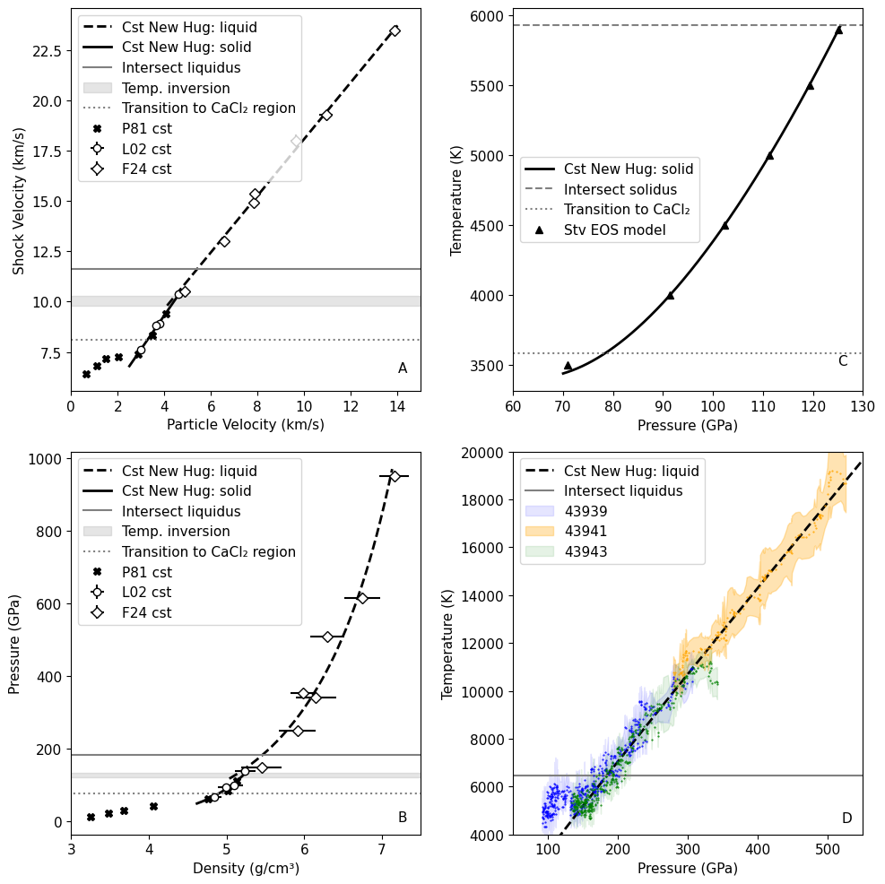
print(np.interp(7.4,cst_hug_cacl2.us,cst_hug_cacl2.P))
print(np.interp(77,cst_hug_cacl2.P,cst_hug_cacl2.us))
print(np.interp(77,cst_hug_cacl2.P,cst_hug_cacl2.T))
61.776969224446134
8.079982231925172
3552.7568949053616
Stishovite supplemental figures#
%run -i scripts/set_plotstyle.py # customize matplotlib
%run -i scripts/set_colors.py # custom colors
fig, ax = plt.subplots(2, 2,figsize=fsize)
plt.rcParams['lines.markersize'] = mks
m15col='teal'#'rosybrown'
stvcol='black'
lfss8=8
i=0
j=0
ax[i,j].errorbar(shockdat[iM15stvhug.i].up,shockdat[iM15stvhug.i].us,xerr=shockdat[iM15stvhug.i].up_std,yerr=shockdat[iM15stvhug.i].us_std,fmt='+',color=m15col,label=iM15stvhug.label)
ax[i,j].plot(shockdat[iM15stv.i].up,shockdat[iM15stv.i].us,'-',color=m15col,label=iM15stv.label+' Fit')
ax[i,j].plot(stv_hug_liq.up,stv_hug_liq.us,'-',color=stvcol,label='Stv linear fit uₚ<18 km/s')
ax[i,j].plot([6,20],[stv_wiggle2.us,stv_wiggle2.us],'--',color='grey',label='Temp plateau high P')
ax[i,j].set_ylim(14,35)
ax[i,j].set_xlim(6,20)
ax[i,j].set_xlabel('Particle velocity (km/s)')
ax[i,j].set_ylabel('Shock velocity (km/s)')
ax[i,j].legend(fontsize=lfss8)
ax[i,j].text(18.75,15,'A')
i=1
j=0
ax[i,j].errorbar(shockdat[iM15stvhug.i].rho,shockdat[iM15stvhug.i].P,xerr=shockdat[iM15stvhug.i].rho_std,yerr=shockdat[iM15stvhug.i].P_std,fmt='+',color=m15col,label=iM15stvhug.label)
print(shockdat[iM15stvhug.i].rho,shockdat[iM15stvhug.i].P)
ax[i,j].plot(shockdat[iM15stv.i].rho,shockdat[iM15stv.i].P,'-',color=m15col,label=iM15stv.label+' Fit')
ax[i,j].plot(stv_hug_liq.rho,stv_hug_liq.P,'-',color=stvcol,label='Stv linear fit uₚ<18 km/s')
ax[i,j].plot([0,20],[stv_liquidus_P,stv_liquidus_P],'-',color='grey',label='Est. intersect liquidus')
ax[i,j].plot([0,20],[stv_wiggle2.P,stv_wiggle2.P],'--',color='grey',label='Temp plateau high P')
ax[i,j].set_ylabel('Pressure (GPa)')
ax[i,j].set_xlabel('Density (g/cm³)')
ax[i,j].legend(fontsize=lfss8)
ax[i,j].set_xlim(6.5,11.5)
ax[i,j].set_ylim(300,3000)
ax[i,j].text(11.1,400,'B')
i=0
j=1
ax[i,j].plot(shockdat[iM15stv.i].us,shockdat[iM15stv.i].T/1.e3,'-',color=m15col,label='M15 stv Hugoniot')
ax[i,j].fill_between(shockdat[iM15stv.i].us,(shockdat[iM15stv.i].T-shockdat[iM15stv.i].T_std)/1.e3,(shockdat[iM15stv.i].T+shockdat[iM15stv.i].T_std)/1.e3,color=m15col,alpha=0.2)
#ax[i,j].plot(shockdat[iM15stvhug.i].us,np.interp(shockdat[iM15stvhug.i].us,m15dat[:,0],m15dat[:,1])/1.e3,'X',label='M15 Hug Us-up data')
#ax[i,j].plot([stv_wiggle2.us,stv_wiggle2.us],[0,60000],':',color='grey')
ax[i,j].plot(stv_hug_liq.us,stv_hug_liq.T/1.e3,'--',color=stvcol,label='4th order polynomial')
ax[i,j].plot([stv_wiggle2.us,stv_wiggle2.us],[0,70],'--',color='grey',label='Temp plateau high P')
ax[i,j].set_ylim(0,65)
ax[i,j].set_xlim(15.5,32)
ax[i,j].set_ylabel('Temperature (1000 K)')
ax[i,j].set_xlabel('Shock velocity (km/s)')
#ax[i,j].legend(fontsize=lfss8)
ax[i,j].legend(fontsize=lfss8,loc='upper left')
ax[i,j].text(30.5,3,'C')
i=1
j=1
ax[i,j].plot(shockdat[iM15stv.i].us,shockdat[iM15stv.i].T/1.e3,'-',color=m15col,label='M15 stv Hugoniot')
ax[i,j].fill_between(shockdat[iM15stv.i].us,(shockdat[iM15stv.i].T-shockdat[iM15stv.i].T_std)/1.e3,(shockdat[iM15stv.i].T+shockdat[iM15stv.i].T_std)/1.e3,color=m15col,alpha=0.2)
#ax[i,j].plot(shockdat[iM15stvhug.i].us,np.interp(shockdat[iM15stvhug.i].us,m15dat[:,0],m15dat[:,1])/1.e3,'X',label='M15 Hug Us-up data')
#ax[i,j].plot([stv_wiggle2.us,stv_wiggle2.us],[0,60000],':',color='grey')
ax[i,j].plot(stv_hug_liq.us,stv_hug_liq.T/1.e3,'--',color=stvcol,label='4th order polynomial')
ax[i,j].plot([stv_wiggle2.us,stv_wiggle2.us],[0,20],'--',color='grey',label='Temp plateau high P')
#ax[i,j].plot([17.4,17.4],[0,20],'--',color='grey',label='Temp plateau high P')
ax[i,j].set_ylim(0,20)
ax[i,j].set_xlim(15.5,22)
ax[i,j].set_ylabel('Temperature (1000 K)')
ax[i,j].set_xlabel('Shock velocity (km/s)')
ax[i,j].legend(fontsize=lfss8,loc='upper left')
ax[i,j].text(21.4,1,'D')
fig.tight_layout()
plt.savefig(outputfigpath+'Stv-fits.pdf')
plt.savefig(figurefigpath+'Stv-fits.pdf')
plt.show()
[ 9.78 9.48 10.38 8.84 10.82 8.82 9.99 10.16 10.21] [1702. 1352.5 2232.5 1174. 2526.7 1032.2 2017.4 2561.4 2660.4]
<Figure size 800x600 with 0 Axes>
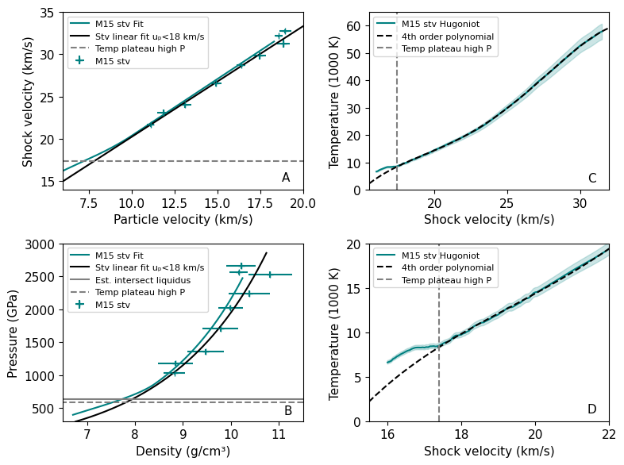
plt.figure(figsize=(10, 6))
plt.rcParams.update({'font.size': 16})
hugwidth=3
plt.plot(shockdat[iM15stv.i].rho,shockdat[iM15stv.i].P,'-',linewidth=hugwidth,color=m15col,label='M15 stv Hugoniot')
ind = np.where(stv_hug_liq.P>=stv_wiggle2.P)[0]
plt.plot(stv_hug_liq.rho[ind],stv_hug_liq.P[ind],'-',color=stvcol,linewidth=hugwidth,label='Stv linear fit')
ind = np.where(stv_hug_liq.P<stv_wiggle2.P)[0]
plt.plot(stv_hug_liq.rho,stv_hug_liq.P,'--',color=stvcol,linewidth=hugwidth)#,label='Stv linear fit')
plt.plot(eosdat_list[G24mclrho['id']].rho_liquid+G24_rshift,eosdat_list[G24mclrho['id']].P_liquid,'+-',color=mc_col,label=G24mclrho['lab']+'\n(2phase, shift)')
plt.fill_between([0,10],[470,470],[530,530],color=m15col,alpha=0.2,label='M15 est. mc crossing')
plt.fill_between([0,10],[stv_solidus_P,stv_solidus_P],[stv_liquidus_P,stv_liquidus_P],color='lightcoral',alpha=0.2,label='New est. mc crossing')
plt.plot(eosdat[iG16mcpyr.i].rho_l[3::]+pbe_liquid_density_shift,eosdat[iG16mcpyr.i].P[3::],'d--',color=mc_col,mfc='white',label='G16 PBE pyrite liquidus shift')
plt.plot(eosdat_list[G16mc['id']].rho_l[5:8]+pbe_liquid_density_shift,eosdat_list[G16mc['id']].P[5:8],'s-',color=mc_col,mfc='white',linewidth=2,label='G16 PBE cotunnite liquidus shift') # cotunnite structure
plt.plot(1.01*(eosdat_list[G16mc['id']].rho_l[5:8]+pbe_liquid_density_shift),eosdat_list[G16mc['id']].P[5:8],'-',color=sol_col,linewidth=2,label='G16 PBE cotunnite solidus dV=1%') # cotunnite structure
plt.plot([0,10],[stv_wiggle2.P,stv_wiggle2.P],'--',color='grey',label='Temp plateau high P')
plt.ylabel('Pressure (GPa)')
plt.xlabel('Density (g/cm³)')
plt.legend(fontsize=lfss)
plt.xlim(5.5,9.5)
plt.ylim(150,1000)
plt.text(9.3,180,'B')
plt.tight_layout()
plt.savefig(outputfigpath+'stv-PV.pdf')
plt.savefig(figurefigpath+'Stv-PV.pdf')
plt.show()
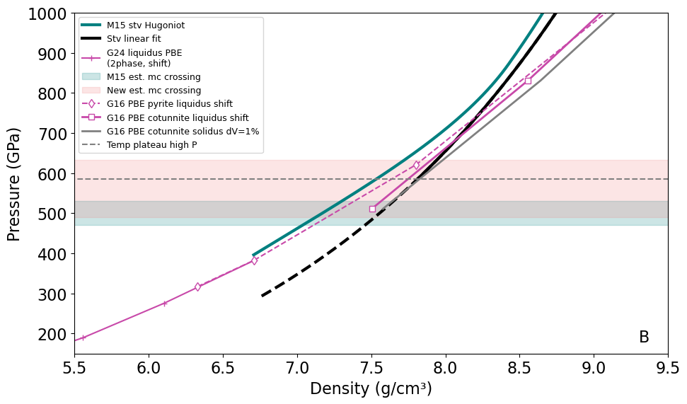
plt.figure(figsize=(10, 6))
plt.rcParams.update({'font.size': 16})
hugwidth=3
if 0:
pg24arr = np.arange(440)+60 # GPa
tg24arr = 6.426*np.power((1+(pg24arr+256.011)/6.474e-04),0.5141)
plt.plot(pg24arr,tg24arr,'--',color='orange',label='G24 melt curve\n(Z method PBE)',linewidth=2)
pg24arr = np.arange(440)+50 # GPa
tg24arr = 6.018*np.power((1+(pg24arr+202.338)/4.736e-04),0.5126)
plt.plot(pg24arr,tg24arr,'-',color=mc_col,label='G24 2phase PBE')
plt.fill_between(pg24arr,tg24arr-200,tg24arr+200,color=mc_col,alpha=0.1)
plt.plot(eosdat_list[G16mc['id']].P[5:8],eosdat_list[G16mc['id']].T[5:8],'s-',color=mc_col,mfc='white',label=G16mcb['lab']) # cotunnite structure
plt.fill_between(eosdat_list[G16mc['id']].P[5:8],eosdat_list[G16mc['id']].T[5:8]-500,eosdat_list[G16mc['id']].T[5:8]+500,color=mc_col,alpha=0.1)
plt.plot(eosdat_list[G24mcl['id']].P_liquid,eosdat_list[G24mcl['id']].T_liquid,'r+',label=G24mcl['lab'])
plt.plot(eosdat_list[G24mcs['id']].P_solid,eosdat_list[G24mcs['id']].T_solid,'rx',label=G24mcs['lab']+' pyrite')
plt.plot(shockdat[iM15stv.i].P,shockdat[iM15stv.i].T,'-',color=m15col,linewidth=hugwidth,label='M15 stv Hugoniot')
plt.fill_between(shockdat[iM15stv.i].P,shockdat[iM15stv.i].T-shockdat[iM15stv.i].T_std,shockdat[iM15stv.i].T+shockdat[iM15stv.i].T_std,color=m15col,alpha=0.2)
m15datpnew = np.interp(shockdat[iM15stv.i].us,stv_hug_liq.us,stv_hug_liq.P)
# plateau temperature region might be below the phase boundary; use intersection with model for end of liquid Us-up fit
# This assumes that the leading edge of the shock front has the liquid Hugoniot relations
ind = np.where((shockdat[iM15stv.i].us<33) & (shockdat[iM15stv.i].us>stv_wiggle2.us))[0]
#ind = np.where((shockdat[iM15stv.i].us<33) & (shockdat[iM15stv.i].P>stv_liquidus_P*.94))[0]
#ind = np.where((shockdat[iM15stv.i].us<33) & (m15datpnew>stv_liquidus_P))[0]
ind = np.where((shockdat[iM15stv.i].us<33) & (m15datpnew>615))[0]
plt.plot(m15datpnew[ind],shockdat[iM15stv.i].T[ind],'-',color=stvcol, linewidth=hugwidth,label='New Stv Hugoniot')
plt.fill_between(m15datpnew[ind],shockdat[iM15stv.i].T[ind]-shockdat[iM15stv.i].T_std[ind],shockdat[iM15stv.i].T[ind]+shockdat[iM15stv.i].T_std[ind],color=stvcol,alpha=0.2)
#ind = np.where((shockdat[iM15stv.i].us<stv_wiggle2.us*1.005))[0]
ind = np.where((m15datpnew<=620))[0]
plt.plot(m15datpnew[ind],shockdat[iM15stv.i].T[ind],'-',color='darkgray',label='Stv decaying shock\nno pressure calibration')
plt.fill_between(m15datpnew[ind],shockdat[iM15stv.i].T[ind]-shockdat[iM15stv.i].T_std[ind],shockdat[iM15stv.i].T[ind]+shockdat[iM15stv.i].T_std[ind],color='darkgray',alpha=0.2)
plt.fill_between([stv_solidus_P,stv_liquidus_P],[5000,5000],[12000,12000],color='lightcoral',alpha=0.2,label='New est. mc crossing')
plt.plot([stv_wiggle2.P,stv_wiggle2.P],[5000,12000],'--',color='grey',label='Temp plateau high P')
plt.legend(fontsize=lfss)
plt.xlim(200,1000)
plt.ylim(6000,12000)
plt.xlabel('Pressure (GPa)')
plt.ylabel('Temperature (K)')
plt.text(970,6200,'A')
plt.tight_layout()
plt.savefig(outputfigpath+'stv-PT.pdf')
plt.savefig(figurefigpath+'Stv-PT.pdf')
plt.show()
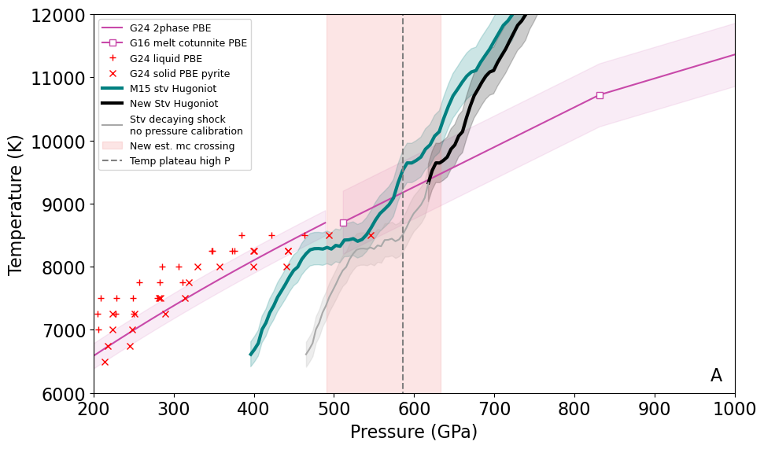
## check quartz
print(fs_solidus_P, fs_wiggle_P1)
print(qtz_solidus_P, qtz_wiggle_P1)
print(cst_solidus_P, cst_wiggle_P1)
print(stv_solidus_P, stv_liquidus_P)
72.32862722602232 65.75879401343992
100.50773755669458 108.24162445130933
125.53423196515627 122.6792821528645
490.63813073715124 632.9429427843702
plt.errorbar(shockdat[iB19fscs.i].P,shockdat[iB19fscs.i].cs,yerr=shockdat[iB19fscs.i].cs_std,fmt='o',label='B19')
plt.errorbar(shockdat[iO25fs.i].P,shockdat[iO25fs.i].cs,yerr=shockdat[iO25fs.i].cs_std,fmt='o',label='O25')
plt.plot([fs_trans_stv_P,fs_trans_stv_P],[6,15],':',color=sol_col,label='Trans. stv')
plt.plot([fs_solidus_P,fs_solidus_P],[6,15],'--',color=sol_col,label='Solidus')
plt.plot([fs_liquidus_P,fs_liquidus_P],[6,15],'-',color='m',label='Liquidus')
plt.fill_betweenx([6,15],[fs_wiggle_P1,fs_wiggle_P1],[fs_wiggle_P2,fs_wiggle_P2],color='grey',alpha=0.2,label='Temp. inversion')
plt.legend(fontsize=lfss)
plt.xlim(0,160)
plt.ylim(6,15)
plt.xlabel('Pressure (GPa)')
plt.ylabel('Eulerian sound speed (km/s)')
plt.tight_layout()
plt.savefig(outputfigpath+'fs-cs.pdf')
plt.savefig(figurefigpath+'fs-cs.pdf')
plt.show()
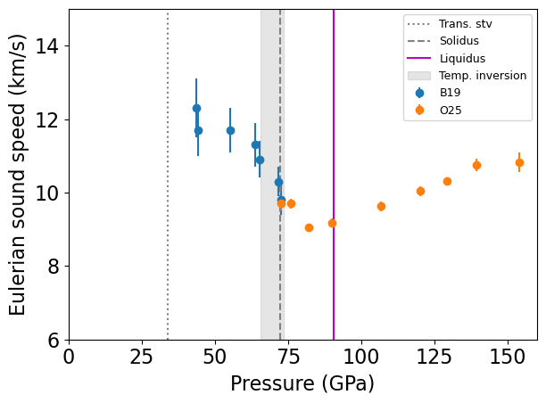
plt.rcParams.update({'font.size': 14})
fig, ax = plt.subplots(2,1,figsize=fsize4)
xi=0
ax[xi].plot(stsmcsmooth.P,stsmcsmooth.T,'m',label='Model melt curve')
if 0:
# plot new qtz Hugoniot
col='green'
ind = np.where((qtz_hug_solid.P > 60) & (qtz_hug_solid.P < qtz_wiggle_P1))[0]
ax[xi].plot(qtz_hug_solid.P[ind],qtz_hug_solid.T[ind],'-',color=col,linewidth=3,label='New qtz (z) Hugoniot')
ind = np.where((stsmcsmooth.P > qtz_wiggle_P1) & (stsmcsmooth.P <= qtz_startliq_P))[0]
ind = np.where(qtz_hug_liq.P > qtz_startliq_P)[0]
ax[xi].plot(qtz_hug_liq.P[ind],qtz_hug_liq.T[ind],'-',color=col,linewidth=3)
ind = np.where((qtz_hug_liq.P < qtz_liquidus_P) & (qtz_hug_liq.P > qtz_wiggle_P2))[0]
ax[xi].plot(qtz_hug_liq.P[ind],qtz_hug_liq.T[ind],':',color=col,linewidth=3)
#ax[xi].errorbar(shockdat_list[L04qtz['id']].P,shockdat_list[L04qtz['id']].T,fmt='gv',mfc='orange',\
# xerr=shockdat_list[L04qtz['id']].P_std,yerr=shockdat_list[L04qtz['id']].T_std,label='L04 shock qtz (x)')#L04qtz['lab']+' (x)')
# plot new FS Hugoniot
ind = np.where((fs_hug_stv.P<fs_wiggle_P1) & (fs_hug_stv.P>fs_trans_stv_P))
ax[xi].plot(fs_hug_stv.P[ind],fs_hug_stv.T[ind],'b-',linewidth=3,label='New FS Hugoniot')
ind = np.where((stsmcsmooth.P > fs_wiggle_P2) & (stsmcsmooth.P < fs_startliq_P))[0]
ind = np.where(fs_hug_liq.P>fs_startliq_P)[0]
ax[xi].plot(fs_hug_liq.P[ind],fs_hug_liq.T[ind],'b-',linewidth=3)
ind = np.where((fs_hug_liq.P<fs_startliq_P) & (fs_hug_liq.P>fs_wiggle_P2))[0]
ax[xi].plot(fs_hug_liq.P[ind],fs_hug_liq.T[ind],'b:',linewidth=3)
#ax[xi].plot([fs_soltest,fs_soltest],[0,8000],'--',color=sol_col,label='Solidus')
#ax[xi].plot([fs_liqtest,fs_liqtest],[0,8000],'-',color='m',label='Liquidus')
ax[xi].plot([fs_trans_stv_P,fs_trans_stv_P],[0,8000],':',color=sol_col)#,label='Solidus')
ax[xi].plot([fs_solidus_P,fs_solidus_P],[0,8000],'--',color=sol_col)#,label='Solidus')
ax[xi].plot([fs_liquidus_P,fs_liquidus_P],[0,8000],'--',color='m')#,label='Liquidus')
ax[xi].fill_betweenx([fs_wiggle_T1,fs_wiggle_T2],[fs_wiggle_P1,fs_wiggle_P1],[fs_wiggle_P2,fs_wiggle_P2],color='grey',alpha=0.2,label='Temp. inversion')
ax[xi].plot([65,65],[0,8000],'--',color='c')#,label='S15 fs metastable liquid')
#ax[xi].plot([90,90],[0,8000],':',color='seagreen',linewidth=2)#,label='S15 qtz disordered')
#ax[xi].fill_betweenx([qtz_wiggle_T1,qtz_wiggle_T2],[qtz_wiggle_P1,qtz_wiggle_P1],[qtz_wiggle_P2,qtz_wiggle_P2],color='grey',alpha=0.2)#,label='Temp. inversion')
#ax[xi].plot([90,90],[0,8000],':',color='seagreen',label='S15 qtz metastable liquid')
if 1:
#ind = np.asarray([1,2,3,9,10,11,12,13])
#ax[xi].plot(eosdat_list[P25mcpbe['id']].P[ind],eosdat_list[P25mcpbe['id']].T[ind],':',color='m',label='P25 MC PBEsol')
ind = np.asarray([0,1,2,3,4,10,11,12])
ax[xi].plot(eosdat_list[P25mcscan['id']].P[ind],eosdat_list[P25mcscan['id']].T[ind],'-.',color='m',label='P25 MC SCAN')
# Andrault et al. 2022 revised
#ax[xi].plot(eosdat_list[A22mc['id']].P,eosdat_list[A22mc['id']].T,'cd',mfc='grey',label='A22 MC DAC')#A22mc['lab'])
ax[xi].text(10,7000,'A')
ax[xi].legend(fontsize=lfss)
ax[xi].set_xlim(0,200)
ax[xi].set_ylim(0,8000)
ax[xi].set_xlabel('Pressure (GPa)')
ax[xi].set_ylabel('Temperature (K)')
xi=1
ax[xi].errorbar(shockdat[iB19fscs.i].P,shockdat[iB19fscs.i].cs,yerr=shockdat[iB19fscs.i].cs_std,fmt='o',label='B19 FS cs')
ax[xi].errorbar(shockdat[iO25fs.i].P,shockdat[iO25fs.i].cs,yerr=shockdat[iO25fs.i].cs_std,fmt='o',label='O25 FS cs')
ax[xi].plot([fs_trans_stv_P,fs_trans_stv_P],[6,15],':',color=sol_col,label='FS trans. stv')
#ax[xi].plot([fs_soltest,fs_soltest],[6,15],'--',color=sol_col,label='Solidus')
#ax[xi].plot([fs_liqtest,fs_liqtest],[6,15],'-',color='m',label='Liquidus')
ax[xi].plot([65,65],[6,15],'--',color='c',label='S16 FS disordered shock front')
#ax[xi].plot([90,90],[6,15],':',color='seagreen',linewidth=2,label='S15 qtz disordered')
ax[xi].plot([fs_solidus_P,fs_solidus_P],[6,15],'--',color=sol_col,label='FS Hug cross solidus')
ax[xi].plot([fs_liquidus_P,fs_liquidus_P],[6,15],'--',color='m',label='FS Hug cross liquidus')
ax[xi].fill_betweenx([6,15],[fs_wiggle_P1,fs_wiggle_P1],[fs_wiggle_P2,fs_wiggle_P2],color='grey',alpha=0.2)#,label='Temp. inversion')
ax[xi].text(10,14,'B')
ax[xi].legend(fontsize=lfss,loc='upper right')
ax[xi].set_xlim(0,200)
ax[xi].set_ylim(8,15)
ax[xi].set_xlabel('Pressure (GPa)')
ax[xi].set_ylabel('Eulerian sound speed (km/s)')
plt.tight_layout()
plt.savefig(outputfigpath+'fs-cs.pdf')
plt.savefig(figurefigpath+'fs-cs.pdf')
plt.show()
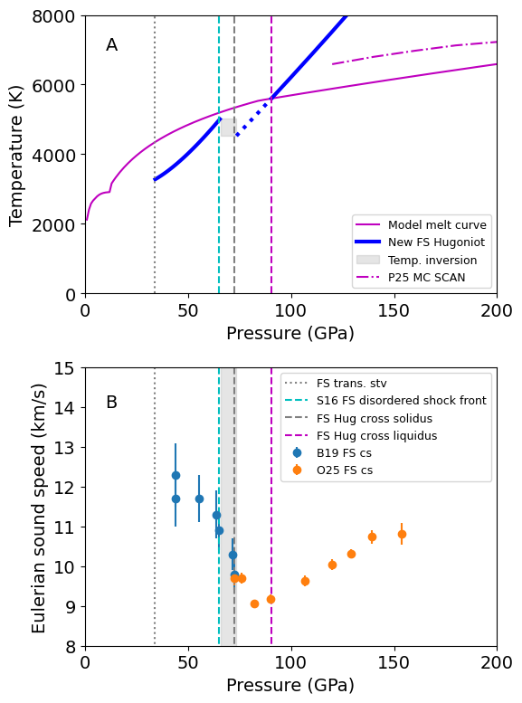
# fig 7 don't cover label phases; and shorten legend
for pind in [9,10,13]:
%run -i scripts/PVphasediagram.py
9
0 Model liquidus Line2D(Model liquidus)
1 Model solidus Line2D(Model solidus)
2 T=300K Line2D(T=300K)
3 Temp. inversion <matplotlib.collections.FillBetweenPolyCollection object at 0x111e1fd90>
4 This work Line2D(This work)
5 New Hugoniot: Liquid region Line2D(New Hugoniot: Liquid region)
6 New Hugoniot: Solid region Line2D(New Hugoniot: Solid region)
7 PT liquidus intersection Line2D(PT liquidus intersection)
8 Line2D( )
9 W62 <ErrorbarContainer object of 3 artists>
10 J68 <ErrorbarContainer object of 3 artists>
11 L83R+B88R <ErrorbarContainer object of 3 artists>
12 T18 <ErrorbarContainer object of 3 artists>
13 R19 <ErrorbarContainer object of 3 artists>
14 O25 <ErrorbarContainer object of 3 artists>
15 B19 <ErrorbarContainer object of 3 artists>
16
Saved figure: B9-SiO2-P-rho-phase-diagram-FS-Fig8A.pdf
10
A= [107.25686863 117.77935509 138.87270554 85.9 ]
B= [ 92.64844931 126.98567629 75.9 99.3 109.7 ]
117.77935508769322 z
138.87270554014185 z
0 Model liquidus Line2D(Model liquidus)
1 Model solidus Line2D(Model solidus)
2 T=300K Line2D(T=300K)
3 Temp. inversion <matplotlib.collections.FillBetweenPolyCollection object at 0x111410190>
4 New Hugoniot Liquid region Line2D(New Hugoniot Liquid region)
5 New Hugoniot: Solid region Line2D(New Hugoniot: Solid region)
6 PT liquidus intersection Line2D(PT liquidus intersection)
7 Line2D( )
8 Line2D( )
9 L83R+B88R <ErrorbarContainer object of 3 artists>
10 W62 <ErrorbarContainer object of 3 artists>
11 This work <ErrorbarContainer object of 3 artists>
12 K13 <ErrorbarContainer object of 3 artists>
13
Saved figure: B10-SiO2-P-rho-phase-diagram-qtz-Fig8B.pdf
13
0 Model liquidus Line2D(Model liquidus)
1 Model solidus Line2D(Model solidus)
2 T=300K Line2D(T=300K)
3 Temp. inversion <matplotlib.collections.FillBetweenPolyCollection object at 0x112c56490>
4 New Hugoniot: Liquid region Line2D(New Hugoniot: Liquid region)
5 New Hugoniot: Solid region Line2D(New Hugoniot: Solid region)
6 PT liquidus intersection Line2D(PT liquidus intersection)
7 Line2D( )
8 Line2D( )
9 Line2D( )
10 P81 <ErrorbarContainer object of 3 artists>
11 L02 <ErrorbarContainer object of 3 artists>
12 F24 <ErrorbarContainer object of 3 artists>
10
Saved figure: B13-SiO2-P-rho-phase-diagram-cst-Fig8C.pdf
#
Figure 9#
from matplotlib.collections import LineCollection
from matplotlib.colors import ListedColormap, BoundaryNorm
import colormaps as local_cmaps
cmap=local_cmaps.parula
plt.figure(figsize=(10, 6))
plt.rcParams.update({'font.size': 16})
ax1 = plt.subplot(1,1,1)
# PLOT PHASE BOUNDARIES
widthsol = 3
widthsol2 = 1
# plot liquidus
ind = np.where(stsmcsmooth.rho < 10)[0]
plt.plot(stsmcsmooth.rho[ind],stsmcsmooth.P[ind],'m-',linewidth=widthsol,label='Model liquidus')
#ind = np.where(stsmcsmooth.rho > 5.5)[0]
#plt.plot([stsmcsmooth.rho[ind][0],6.0],[stsmcsmooth.P[ind][0],295],'m:',linewidth=widthsol,label='Estimated liquidus')
# plot the triple points
#ppp = [Pt1, 40, Pt2, Pt3] #40 is LDM to HDM transition from Andrault et al. 2022
#plt.plot(np.interp(ppp,stsmcsmooth.P,stsmcsmooth.rho),ppp,'mD')
#ppp = [Pt1, Pt3] #40 is LDM to HDM transition from Andrault et al. 2022
#plt.plot(np.interp(ppp,stsmcsmooth.P,stsmcsmooth.rho),ppp,'mD')
#ppp = [40, Pt2] #40 is LDM to HDM transition from Andrault et al. 2022
#plt.plot(np.interp(ppp,stsmcsmooth.P,stsmcsmooth.rho),ppp,'mD',mfc='white')
if 0:
ppp = [Pt1, Pt3] #40 is LDM to HDM transition from Andrault et al. 2022
plt.plot(np.interp(ppp,stsmcsmooth.P,stsmcsmooth.rho),ppp,'mD',label='Est. 1st order triple pt.')
ppp = [40, Pt2] #40 is LDM to HDM transition from Andrault et al. 2022
plt.plot(np.interp(ppp,stsmcsmooth.P,stsmcsmooth.rho),ppp,'mD',mfc='white',label='Est. 2nd order triple pt.')
# plot solidus
ind = np.where((stsmcsmooth.rho_s < 10) & (stsmcsmooth.rho_s > 0))[0]
plt.plot(stsmcsmooth.rho_s[ind],stsmcsmooth.P[ind],'-',color=sol_col,linewidth=widthsol,label='Model solidus')
#plt.plot(np.interp(ppp,stsmcsmooth.P,stsmcsmooth.rho_s),ppp,'D',color=sol_col)
#plt.plot(max(p23bnd.rho_b),max(p23bnd.P),'D',color=sol_col)
# Plot 0 K isotherms
amu=sio2mol
colvinet='black'
# Vinet
par = stv
rho0 = amu*1.6605391/par[0]
#print(rho0)
rhoarr = np.arange(rho0,rho0*2,.0001)
eta = np.power(rho0/rhoarr,0.333)
parr = 3.*par[1]*((1-eta)/eta/eta)*np.exp(3./2.*(par[2]-1)*(1-eta))
# ind = np.where((parr <= 53) & (parr >= 7))[0]
ind = np.where((parr <= Pt2_0k) & (parr >= 7))[0]
#ind = np.where((parr <= 50))[0]
plt.plot(rhoarr[ind],parr[ind],color=colvinet,linewidth=widthsol,label='T=300K')
#plt.plot(min(rhoarr[ind]),min(parr[ind]),'kD')
#plt.plot(max(rhoarr[ind]),max(parr[ind]),'kD')
# Vinet
par = cacl2
rho0 = amu*1.6605391/par[0]
#print(rho0)
rhoarr = np.arange(rho0,rho0*2,.0001)
eta = np.power(rho0/rhoarr,0.333)
parr = 3.*par[1]*((1-eta)/eta/eta)*np.exp(3./2.*(par[2]-1)*(1-eta))
ind = np.where((parr <= Pt3_0k) & (parr > Pt2_0k))[0]
plt.plot(rhoarr[ind],parr[ind],color=colvinet,linewidth=widthsol)
#print(np.max(rhoarr[ind]),np.max(parr[ind]))
#plt.plot(max(rhoarr[ind]),max(parr[ind]),'kD')
par = pbo2
rho0 = amu*1.6605391/par[0]
#print(rho0)
rhoarr = np.arange(rho0,rho0*2,.001)
eta = np.power(rho0/rhoarr,0.333)
parr = 3.*par[1]*((1-eta)/eta/eta)*np.exp(3./2.*(par[2]-1)*(1-eta))
ind = np.where((parr >= Pt3_0k) & (rhoarr <= 5.6))[0]
plt.plot(rhoarr[ind],parr[ind],color=colvinet,linewidth=widthsol)
#plt.plot(min(rhoarr[ind]),min(parr[ind]),'kD')
tmin=3500
tmax=7500
ind = np.where(fs_hug_liq.P > fs_wiggle_P2)[0]
#plt.plot(fs_hug_liq.rho[ind],fs_hug_liq.P[ind],'b--',label='New FS Hug: Liquid region')
x = fs_hug_liq.rho[ind]
y = fs_hug_liq.P[ind]
dydx = fs_hug_liq.T[ind]
points = np.array([x, y]).T.reshape(-1, 1, 2)
segments = np.concatenate([points[:-1], points[1:]], axis=1)
# Create a continuous norm to map from data points to colors
norm = plt.Normalize(tmin, tmax)
lc = LineCollection(segments, cmap=local_cmaps.parula, norm=norm)
# Set the values used for colormapping
lc.set_array(dydx)
lc.set_linewidth(5)
line=ax1.add_collection(lc)
line
ind = np.where((fs_hug_stv.P < fs_wiggle_P1) & (fs_hug_stv.P > fs_trans_stv_P))[0]
#plt.plot(fs_hug_liq.rho[ind],fs_hug_liq.P[ind],'b--',label='New FS Hug: Liquid region')
x = fs_hug_stv.rho[ind]
y = fs_hug_stv.P[ind]
dydx = fs_hug_stv.T[ind]
points = np.array([x, y]).T.reshape(-1, 1, 2)
segments = np.concatenate([points[:-1], points[1:]], axis=1)
# Create a continuous norm to map from data points to colors
norm = plt.Normalize(tmin, tmax)
lc = LineCollection(segments, cmap=local_cmaps.parula, norm=norm)
# Set the values used for colormapping
lc.set_array(dydx)
lc.set_linewidth(5)
line=ax1.add_collection(lc)
line
ind = np.where(qtz_hug_liq.P > qtz_wiggle_P2)[0]
#plt.plot(qtz_hug_liq.rho[ind],qtz_hug_liq.P[ind],'g--',label='New Qtz Hug: Liquid region')
x = qtz_hug_liq.rho[ind]
y = qtz_hug_liq.P[ind]
dydx = qtz_hug_liq.T[ind]
points = np.array([x, y]).T.reshape(-1, 1, 2)
segments = np.concatenate([points[:-1], points[1:]], axis=1)
# Create a continuous norm to map from data points to colors
norm = plt.Normalize(tmin, tmax)
lc = LineCollection(segments, cmap=local_cmaps.parula, norm=norm)
# Set the values used for colormapping
lc.set_array(dydx)
lc.set_linewidth(5)
line2=ax1.add_collection(lc)
line2
ind = np.where((qtz_hug_solid.P < qtz_wiggle_P1) & (qtz_hug_solid.P > qtz_singleshock_P))[0]
#plt.plot(qtz_hug_liq.rho[ind],qtz_hug_liq.P[ind],'g--',label='New Qtz Hug: Liquid region')
x = qtz_hug_solid.rho[ind]
y = qtz_hug_solid.P[ind]
dydx = qtz_hug_solid.T[ind]
points = np.array([x, y]).T.reshape(-1, 1, 2)
segments = np.concatenate([points[:-1], points[1:]], axis=1)
# Create a continuous norm to map from data points to colors
norm = plt.Normalize(tmin, tmax)
lc = LineCollection(segments, cmap=local_cmaps.parula, norm=norm)
# Set the values used for colormapping
lc.set_array(dydx)
lc.set_linewidth(5)
line2=ax1.add_collection(lc)
line2
if 0:
# cst hugoniot - makes the plot a bit messy
ind = np.where(cst_hug_liq.P > cst_wiggle_P2)[0]
x = cst_hug_liq.rho[ind]
y = cst_hug_liq.P[ind]
dydx = cst_hug_liq.T[ind]
points = np.array([x, y]).T.reshape(-1, 1, 2)
segments = np.concatenate([points[:-1], points[1:]], axis=1)
# Create a continuous norm to map from data points to colors
norm = plt.Normalize(tmin, tmax)
lc = LineCollection(segments, cmap=local_cmaps.parula, norm=norm)
# Set the values used for colormapping
lc.set_array(dydx)
lc.set_linewidth(5)
line3=ax1.add_collection(lc)
line3
#isotherms
isen_col = ['blue','darkturquoise','green','yellowgreen','orange','red']
ind = np.where((karkipvt.rhoarr < 5.65))[0]
if 0:
plt.plot(karkipvt.rhoarr[ind],karkipvt.p3000[ind],':',label='K07 L T=3000K',color=isen_col[1])
plt.plot(karkipvt.rhoarr[ind],karkipvt.p4000[ind],':',label='K07 L T=4000K',color=isen_col[1])
plt.plot(karkipvt.rhoarr[ind],karkipvt.p5000[ind],':',label='K07 L T=5000K',color=isen_col[2])
plt.plot(karkipvt.rhoarr[ind],karkipvt.p6000[ind],':',label='K07 L T=6000K',color=isen_col[3])
plt.plot(karkipvt.rhoarr[ind],karkipvt.p7000[ind],':',label='K07 L T=7000K',color=isen_col[4])
if 1:
nll=2
ccc=cmap((3000-tmin)/(tmax-tmin))
ccc=local_cmaps.parula((3000-tmin)/(tmax-tmin))
#plt.plot(karkipvt.rhoarr[ind],karkipvt.p3000[ind],':',color=ccc,label='3000K liquid',linewidth=nll)
ccc=local_cmaps.parula((4500-tmin)/(tmax-tmin))
plt.plot(karkipvt.rhoarr[ind],karkipvt.p4500[ind],':',color=ccc,label='4500K liquid',linewidth=nll)
ccc=local_cmaps.parula((5000-tmin)/(tmax-tmin))
plt.plot(karkipvt.rhoarr[ind],karkipvt.p5000[ind],':',color=ccc,label='5000K',linewidth=nll)
ccc=local_cmaps.parula((6000-tmin)/(tmax-tmin))
plt.plot(karkipvt.rhoarr[ind],karkipvt.p6000[ind],':',color=ccc,label='6000K',linewidth=nll)
ccc=local_cmaps.parula((7000-tmin)/(tmax-tmin))
plt.plot(karkipvt.rhoarr[ind],karkipvt.p7000[ind],':',color=ccc,label='7000K',linewidth=nll)
if 1:
nll=1
ccc=cmap((3000-tmin)/(tmax-tmin))
ccc=local_cmaps.parula((3000-tmin)/(tmax-tmin))
ind = np.where((stvpvt.rhoarr > 4.2) & (stvpvt.rhoarr < 5.32))[0]
plt.plot(stvpvt.rhoarr[ind],stvpvt.p3000[ind],'-.',color=ccc,label='3000K solid',linewidth=nll)
ccc=local_cmaps.parula((4000-tmin)/(tmax-tmin))
ind = np.where((stvpvt.rhoarr > 4.35) & (stvpvt.rhoarr < 5.32))[0]
plt.plot(stvpvt.rhoarr[ind],stvpvt.p4000[ind],'-.',color=ccc,label='4000K',linewidth=nll)
ccc=local_cmaps.parula((5000-tmin)/(tmax-tmin))
ind = np.where((stvpvt.rhoarr > 4.6) & (stvpvt.rhoarr < 5.32))[0]
plt.plot(stvpvt.rhoarr[ind],stvpvt.p5000[ind],'-.',color=ccc,label='5000K',linewidth=nll)
plt.fill_between([qtz_wiggle_rho1,qtz_wiggle_rho2],[qtz_wiggle_P1,qtz_wiggle_P1],[qtz_wiggle_P2,qtz_wiggle_P2],color='grey',alpha=0.7,label='Temp. inversion')
#plt.plot([0,10],[141,141])
# plt.fill_between([4.5,4.7],[fs_wiggle_P1,fs_wiggle_P1],[fs_wiggle_P2,fs_wiggle_P2],color='grey',alpha=0.3,label='Temp. inversion')
plt.fill_between([fs_wiggle_rho1,fs_wiggle_rho2],[fs_wiggle_P1,fs_wiggle_P1],[fs_wiggle_P2,fs_wiggle_P2],color='grey',alpha=0.7)#,label='Temp. inversion')
plt.plot(np.interp(fs_liquidus_P,fs_hug_liq.P,fs_hug_liq.rho),fs_liquidus_P,'k+',label='PT liquidus intercept')
plt.plot(np.interp(qtz_liquidus_P,qtz_hug_liq.P,qtz_hug_liq.rho),qtz_liquidus_P,'k+')
plt.text(5.13,200,'Fused silica\nHugoniot ',fontsize=14,ha='right')
plt.text(5.45,200,'Quartz (z)\nHugoniot ',fontsize=14,ha='right')
tss = 12
plt.text(4.6,150,'liquid',fontsize=14)
#plt.text(3.69,45,'LDM',fontsize=tss)
#plt.text(3.875,53,'HDM',fontsize=tss)
plt.text(4.6,45,'stv',fontsize=tss)
plt.text(4.975,80,'CaCl$_2$',fontsize=tss)
plt.text(5.45,135,'sft',fontsize=tss)
plt.colorbar(line, orientation='vertical',label='$T$ (K)')
#plt.title(r'SiO$_2$ Phase Diagram & Hugoniots')
figname = 'B15-SiO2-P-rho-phase-diagram-isotherms'
plt.xlabel(r'Density (g/cm$^3$)')
plt.ylabel('Pressure (GPa)')
plt.legend(loc='upper left', fontsize=10)
#plt.legend(loc='center left', bbox_to_anchor=(1.2, 0.5),fontsize=10)
plt.ylim(0,225)
plt.xlim(4.0,5.6)
plt.tight_layout()
plt.savefig('output-figs/PV-color-shock-temp.pdf',dpi=600)
plt.savefig('paper-figs/PV-color-shock-temp.pdf',dpi=600)
plt.show()
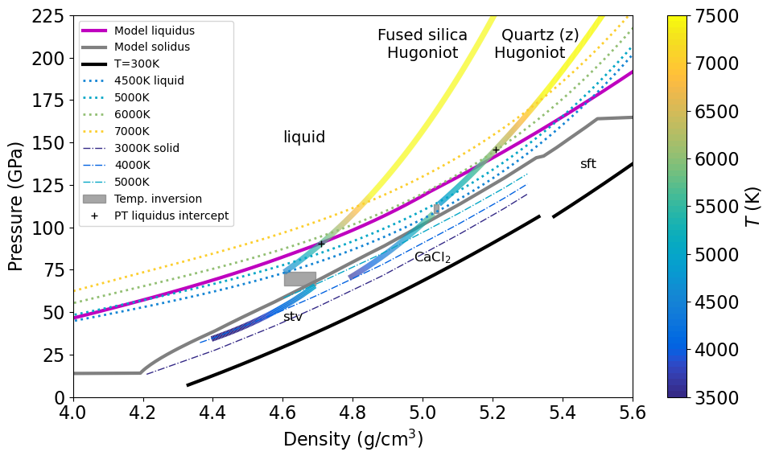